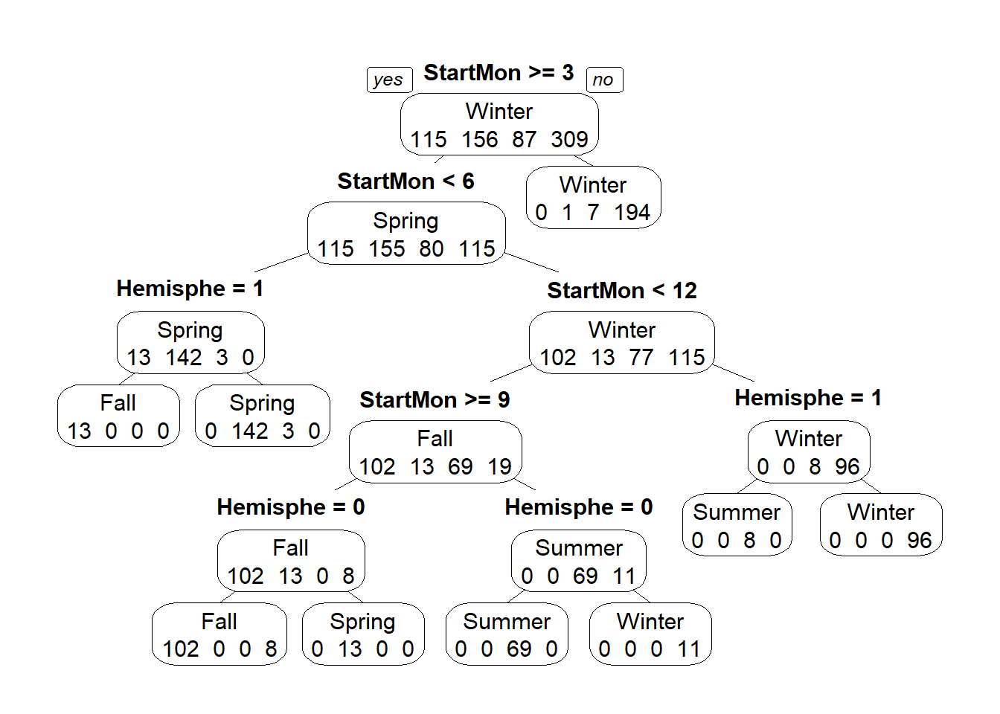
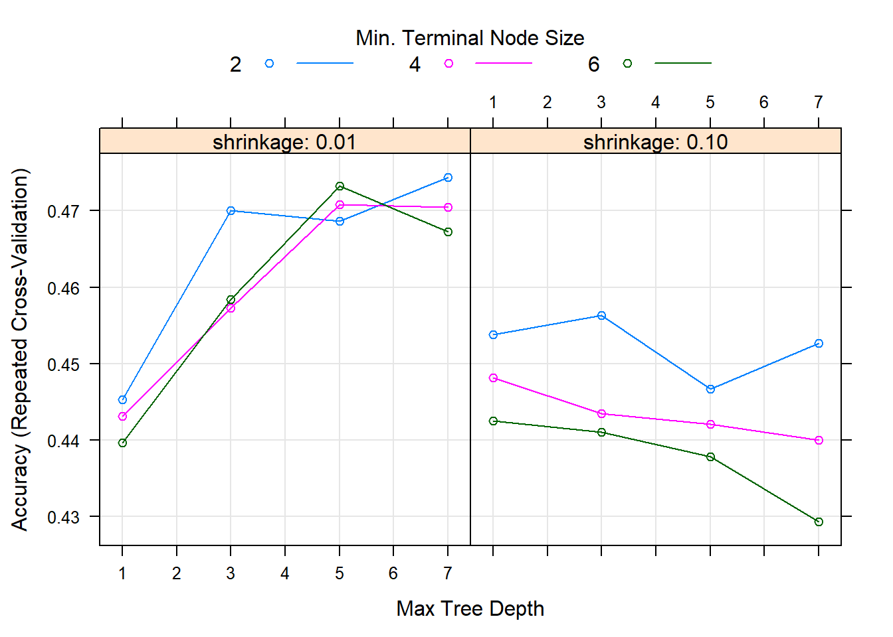

This document will guide you through some data analysis tasks with a focus on fitting tree-based models and training them. We’ll also (re)-visit some other topics.
While this is in some sense a stand-alone analysis, I assume that you have worked through the Data Analysis exercise and are familiar with the dataset and all the things we discovered during the cleaning process. We’ll use the same dataset here but focus on a different outcome. Other than that, the way to work through the exercise is like in the Data Analysis exercise, namely by writing/completing the missing code.
We need a variety of different packages, which are loaded here. Install as needed. For this analysis, we’ll again use the caret package. If you use others, load them here.
We will again use the Norovirus dataset.
#Write code that loads the dataset
#You can of course re-use code you wrote in the other file.
norodata_raw <- read.csv("./norodata.csv")
glimpse(norodata_raw)## Observations: 1,022
## Variables: 139
## $ id <int> 2, 17, 39, 40, 41, 42, 43, 44, 67, 74, 7...
## $ Author <fct> Akihara, Becker, Boxman, Boxman, Boxman,...
## $ Pub_Year <int> 2005, 2000, 2009, 2009, 2009, 2009, 2009...
## $ pubmedid <int> 15841336, 11071673, 19205471, 19205471, ...
## $ EpiCurve <fct> Y, Y, N, N, N, N, N, N, N, N, Y, Y, Y, Y...
## $ TDComment <fct> , , , , , , , , , , , , , , , , , , , No...
## $ AHComment <fct> , , , , , , , , , , , , , , , , , , , , ...
## $ Trans1 <fct> Unspecified, Foodborne, Foodborne, Foodb...
## $ Trans1_O <int> 0, 0, 0, 0, 0, 0, 0, 0, 0, 0, 0, 0, 0, 0...
## $ Trans2 <fct> (not applicable), Person to Person, ...
## $ Trans2_O <fct> 0, 0, 0, 0, 0, 0, 0, 0, 0, 0, 0, 0, 0, 0...
## $ Trans3 <fct> (not applicable), (not applicable), ...
## $ Trans3_O <fct> 0, 0, 0, 0, 0, 0, 0, 0, 0, 0, 0, 0, 0, 0...
## $ Risk1 <dbl> 0.00000, 108.00000, 130.00000, 4.00000, ...
## $ Risk2 <dbl> NA, NA, NA, NA, NA, NA, NA, NA, NA, NA, ...
## $ RiskAll <dbl> 0.00000, 108.00000, 130.00000, 4.00000, ...
## $ Cases1 <int> 15, 43, 27, 4, 15, 6, 40, 10, 116, 45, 1...
## $ Cases2 <int> NA, 22, NA, NA, NA, NA, NA, NA, NA, NA, ...
## $ CasesAll <int> 15, 65, 27, 4, 15, 6, 40, 10, 116, 45, 1...
## $ Rate1 <dbl> NA, 39.814815, 20.769231, 100.000000, 60...
## $ Rate2 <dbl> NA, NA, NA, NA, NA, NA, NA, NA, NA, NA, ...
## $ RateAll <dbl> 0.000000, 39.814815, 20.769231, 100.0000...
## $ Hospitalizations <int> 0, 0, 0, 0, 0, 0, 0, 0, 5, 10, 3, 0, 0, ...
## $ Deaths <int> 0, 0, 0, 0, 0, 0, 0, 0, 0, 0, 0, 0, 0, 0...
## $ Vehicle_1 <fct> 0, Boxed Lunch, 0, 0, 0, 0, 0, 0, 0, Oys...
## $ Veh1 <fct> Unspecified, Yes, Unspecified, Unspecifi...
## $ Veh1_D_1 <fct> 0, Turkey Sandwich in boxed lunch, 0, 0,...
## $ Veh2 <fct> No, Yes, No, No, No, No, No, No, No, No,...
## $ Veh2_D_1 <fct> 0, Football players, 0, 0, 0, 0, 0, 0, 0...
## $ Veh3 <fct> No, No, No, No, No, No, No, No, No, No, ...
## $ Veh3_D_1 <fct> 0, 0, 0, 0, 0, 0, 0, 0, 0, 0, 0, 0, 0, 0...
## $ PCRSect <fct> Capsid, Polymerase, Both, Both, Both, Bo...
## $ OBYear <fct> 1999, 1998, 2006, 2006, 2006, 2006, 2006...
## $ Hemisphere <fct> Northern, Northern, Northern, Northern, ...
## $ season <fct> Fall, Fall, Fall, Fall, Fall, Fall, Fall...
## $ MeanI1 <int> 0, 0, 0, 0, 0, 0, 0, 0, 0, 0, 0, 0, 0, 0...
## $ MedianI1 <int> 0, 37, 0, 0, 0, 0, 0, 0, 0, 31, 34, 33, ...
## $ Range_S_I1 <dbl> 0, 0, 0, 0, 0, 0, 0, 0, 0, 2, 0, 6, 0, 0...
## $ Range_L_I1 <dbl> 0, 0, 0, 0, 0, 0, 0, 0, 0, 69, 0, 96, 0,...
## $ MeanD1 <dbl> 0, 0, 0, 0, 0, 0, 0, 0, 0, 0, 0, 0, 24, ...
## $ MedianD1 <dbl> 0, 36, 0, 0, 0, 0, 0, 0, 0, 48, 37, 24, ...
## $ Range_S_D1 <dbl> 0, 0, 0, 0, 0, 0, 0, 0, 0, 10, 0, 5, 4, ...
## $ Range_L_D1 <int> 0, 0, 0, 0, 0, 0, 0, 0, 0, 168, 0, 120, ...
## $ MeanA1 <dbl> NA, NA, NA, NA, NA, NA, NA, NA, NA, NA, ...
## $ MedianA1 <dbl> NA, NA, NA, NA, NA, NA, NA, NA, NA, NA, ...
## $ Range_Y_A1 <fct> 0.75, 0, 0, 0, 0, 0, 0, 0, 0, 0, 0, 0, 0...
## $ Range_O_A1 <dbl> 2, 0, 0, 0, 0, 0, 0, 0, 0, 0, 0, 0, 0, 0...
## $ Action1 <fct> Unspecified, Unspecified, Unspecified, U...
## $ Action2_1 <fct> "0", "0", "0", "0", "0", "0", "0", "0", ...
## $ Secondary <fct> No, Yes, No, No, No, No, No, No, No, No,...
## $ MeanI2 <int> 0, 0, 0, 0, 0, 0, 0, 0, 0, 0, 0, 0, 0, 0...
## $ MedianI2 <int> 0, 0, 0, 0, 0, 0, 0, 0, 0, 0, 0, 0, 0, 0...
## $ Range_S_I2 <int> 0, 0, 0, 0, 0, 0, 0, 0, 0, 0, 0, 0, 0, 0...
## $ Range_L_I2 <int> 0, 0, 0, 0, 0, 0, 0, 0, 0, 0, 0, 0, 0, 0...
## $ MeanD2 <int> 0, 0, 0, 0, 0, 0, 0, 0, 0, 0, 0, 0, 0, 0...
## $ MedianD2 <int> 0, 0, 0, 0, 0, 0, 0, 0, 0, 0, 0, 0, 0, 0...
## $ Range_S_D2 <int> 0, 0, 0, 0, 0, 0, 0, 0, 0, 0, 0, 0, 0, 0...
## $ Range_L_D2 <int> 0, 0, 0, 0, 0, 0, 0, 0, 0, 0, 0, 0, 0, 0...
## $ Mea.2 <int> 0, 0, 0, 0, 0, 0, 0, 0, 0, 0, 0, 0, 0, 0...
## $ Media.2 <int> 0, 0, 0, 0, 0, 0, 0, 0, 0, 0, 0, 0, 0, 0...
## $ Range_Y_A2 <int> 0, 0, 0, 0, 0, 0, 0, 0, 0, 0, 0, 0, 0, 0...
## $ Range_O_A2 <int> 0, 0, 0, 0, 0, 0, 0, 0, 0, 0, 0, 0, 0, 0...
## $ Comments_1 <fct> "Outbreak took place during a study on g...
## $ Path1 <fct> No, No, Unspecified, Unspecified, Unspec...
## $ Path2_1 <fct> 0, 0, 0, 0, 0, 0, 0, 0, 0, 0, 0, 0, 0, 0...
## $ Country <fct> Japan, USA, Other, Other, Other, Other, ...
## $ Category <fct> Daycare, Foodservice, Foodservice, Foods...
## $ State <fct> "0", "NC, FL", "0", "0", "0", "0", "0", ...
## $ Setting_1 <fct> "Daycare Center", "Boxed lunch, football...
## $ StartMonth <int> 11, 9, 9, 10, 11, 11, 11, 11, 11, 11, 11...
## $ EndMonth <int> 12, 9, 0, 0, 0, 0, 0, 0, 11, 11, 11, 11,...
## $ GGA <int> 2, 1, 2, 0, 2, 0, 0, 0, 2, 0, 0, 0, 0, 0...
## $ CA <int> 4, 0, 4, 0, 4, 0, 0, 0, 4, 0, 0, 0, 0, 0...
## $ SA <fct> Lordsdale, Thistle Hall 1/91, GII.4 2006...
## $ new_GGA <int> 0, 0, 0, 0, 0, 0, 0, 0, 0, 0, 0, 0, 0, 0...
## $ new_CA <int> 0, 0, 0, 0, 0, 0, 0, 0, 0, 0, 0, 0, 0, 0...
## $ new_SA <fct> 0, 0, 0, 0, 0, 0, 0, 0, 0, 0, 0, 0, 0, 0...
## $ SA_resolved_from <fct> , , , , , , , , , , , , , , , , , , , Zh...
## $ GGB <int> 0, 0, 0, 0, 0, 0, 0, 0, 0, 0, 0, 0, 0, 0...
## $ CB <fct> 0, 0, 0, 0, 0, 0, 0, 0, 0, 0, 0, 0, 0, 0...
## $ SB <fct> 0, 0, 0, 0, 0, 0, 0, 0, 0, 0, 0, 0, 0, 0...
## $ new_GGB <int> 0, 0, 0, 0, 0, 0, 0, 0, 0, 0, 0, 0, 0, 0...
## $ new_CB <int> 0, 0, 0, 0, 0, 0, 0, 0, 0, 0, 0, 0, 0, 0...
## $ new_SB <fct> 0, 0, 0, 0, 0, 0, 0, 0, 0, 0, 0, 0, 0, 0...
## $ SB_resolved_from <fct> , , , , , , , , , , , , , , , , , , http...
## $ GGC <int> 0, 0, 0, 0, 0, 0, 0, 0, 0, 0, 0, 0, 0, 0...
## $ CC <int> 0, 0, 0, 0, 0, 0, 0, 0, 0, 0, 0, 0, 0, 0...
## $ SC <fct> 0, 0, 0, 0, 0, 0, 0, 0, 0, 0, 0, 0, 0, 0...
## $ new_ggc <int> 0, 0, 0, 0, 0, 0, 0, 0, 0, 0, 0, 0, 0, 0...
## $ new_cc <int> 0, 0, 0, 0, 0, 0, 0, 0, 0, 0, 0, 0, 0, 0...
## $ new_sc <fct> 0, 0, 0, 0, 0, 0, 0, 0, 0, 0, 0, 0, 0, 0...
## $ SC_resolved_from <fct> , , , , , , , , , , , , , , , , , , , , ...
## $ GGD <int> 0, 0, 0, 0, 0, 0, 0, 0, 0, 0, 0, 0, 0, 0...
## $ CD <fct> 0, 0, 0, 0, 0, 0, 0, 0, 0, 0, 0, 0, 0, 0...
## $ SD <fct> 0, 0, 0, 0, 0, 0, 0, 0, 0, 0, 0, 0, 0, 0...
## $ new_ggd <int> 0, 0, 0, 0, 0, 0, 0, 0, 0, 0, 0, 0, 0, 0...
## $ new_cd <int> 0, 0, 0, 0, 0, 0, 0, 0, 0, 0, 0, 0, 0, 0...
## $ new_sd <int> 0, 0, 0, 0, 0, 0, 0, 0, 0, 0, 0, 0, 0, 0...
## $ SD_resolved_from <lgl> NA, NA, NA, NA, NA, NA, NA, NA, NA, NA, ...
## $ StrainOther <fct> "0", "0", "0", "0", "0", "0", "0", "0", ...
## $ strainother_rc <fct> 0, 0, 0, 0, 0, 0, 0, 0, 0, 0, 0, 0, 0, 0...
## $ gge <fct> 0, 0, 0, 0, 0, 0, 0, 0, 2, 0, 0, 0, 0, 0...
## $ ce <int> 0, 0, 0, 0, 0, 0, 0, 0, 4, 0, 0, 0, 0, 0...
## $ se <fct> 0, 0, 0, 0, 0, 0, 0, 0, GII.4a 2004, 0, ...
## $ SE_resolved_from <fct> , , , , , , , , abstraction of StrainOth...
## $ ggf <int> 0, 0, 0, 0, 0, 0, 0, 0, 0, 0, 0, 0, 0, 0...
## $ cf <int> 0, 0, 0, 0, 0, 0, 0, 0, 0, 0, 0, 0, 0, 0...
## $ sf <fct> 0, 0, 0, 0, 0, 0, 0, 0, 0, 0, 0, 0, 0, 0...
## $ ggg <int> 0, 0, 0, 0, 0, 0, 0, 0, 0, 0, 0, 0, 0, 0...
## $ cg <int> 0, 0, 0, 0, 0, 0, 0, 0, 0, 0, 0, 0, 0, 0...
## $ sg <fct> 0, 0, 0, 0, 0, 0, 0, 0, 0, 0, 0, 0, 0, 0...
## $ ggh <int> 0, 0, 0, 0, 0, 0, 0, 0, 0, 0, 0, 0, 0, 0...
## $ ch <int> 0, 0, 0, 0, 0, 0, 0, 0, 0, 0, 0, 0, 0, 0...
## $ sh <fct> 0, 0, 0, 0, 0, 0, 0, 0, 0, 0, 0, 0, 0, 0...
## $ ggi <int> 0, 0, 0, 0, 0, 0, 0, 0, 0, 0, 0, 0, 0, 0...
## $ ci <int> 0, 0, 0, 0, 0, 0, 0, 0, 0, 0, 0, 0, 0, 0...
## $ si <fct> 0, 0, 0, 0, 0, 0, 0, 0, 0, 0, 0, 0, 0, 0...
## $ ggj <int> 0, 0, 0, 0, 0, 0, 0, 0, 0, 0, 0, 0, 0, 0...
## $ cj <int> 0, 0, 0, 0, 0, 0, 0, 0, 0, 0, 0, 0, 0, 0...
## $ sj <fct> 0, 0, 0, 0, 0, 0, 0, 0, 0, 0, 0, 0, 0, 0...
## $ Country2 <fct> "0", "0", "The Netherlands", "The Nether...
## $ Veh1_D_2 <fct> "0", "Boxed Lunch", "0", "0", "0", "0", ...
## $ Veh2_D_2 <fct> 0, 0, 0, 0, 0, 0, 0, 0, 0, 0, 0, 0, 0, 0...
## $ Veh3_D_2 <fct> 0, 0, 0, 0, 0, 0, 0, 0, 0, 0, 0, 0, 0, 0...
## $ Action2_2 <fct> "0", "0", "0", "0", "0", "0", "0", "0", ...
## $ Comments_2 <fct> "Limited data", "0", "Outbreak 19 of 26 ...
## $ Path2_2 <fct> 0, 0, 0, 0, 0, 0, 0, 0, 0, 0, 0, 0, 0, 0...
## $ Setting_2 <fct> 0, 0, Buffet, Restaurant, Buffet, take o...
## $ category1 <fct> School/Daycare, Foodservice, Foodservice...
## $ strainothergg2c4 <int> 0, 0, 0, 0, 0, 0, 0, 0, 0, 0, 0, 0, 0, 0...
## $ gg2c4 <fct> Yes, , Yes, , Yes, , , , Yes, , , , , , ...
## $ Vomit <int> 1, 1, 1, 1, 1, 1, 1, 1, 1, 1, 1, 1, 1, 1...
## $ IncInd <int> 0, 0, 0, 0, 0, 0, 0, 0, 0, 0, 0, 0, 0, 0...
## $ SymInd <int> 0, 0, 0, 0, 0, 0, 0, 0, 0, 0, 0, 0, 0, 0...
## $ PooledLat <dbl> 0, 37, 0, 0, 0, 0, 0, 0, 0, 31, 34, 33, ...
## $ PooledSym <int> 0, 36, 0, 0, 0, 0, 0, 0, 0, 48, 37, 24, ...
## $ PooledAge <dbl> 0, 0, 0, 0, 0, 0, 0, 0, 0, 0, 0, 0, 0, 0...
## $ IndividualLatent <lgl> NA, NA, NA, NA, NA, NA, NA, NA, NA, NA, ...
## $ IndividualSymptomatic <fct> , , , , , , , , , , , , , , , , , , , , ...For this analysis, we consider as our main outcome of interest the season. This is a categorical outcome with more than 2 categories, something we haven’t looked at before. Because it’s more than 2 categories, a basic logistic model won’t work. Fortunately, tree-based models can deal with multiple categories.
## [1] Fall Spring Summer Winter
## Levels: Fall Spring Summer Winter## Fall Spring Summer Winter
## 67 164 222 126 443We already knew from previous explorations that some entries do not have a season. We could either code them as “other” and keep them in the model, or remove them. Since it’s hard to see any potential scientific reason why there should be a correlation between an “other” season and some variable, we’ll remove it here.
We also notice that while winter is dominant (makes sense, we know that norovirus is more common in winter), we got a decent number of outbreaks for each season, so we shouldn’t have a problem with (un)balanced data.
#write code that removes all observations that have an empty/missing value for season
#then drop the empty level and check that you have 4 categories for season left
remove_blank <- norodata_raw[!(norodata_raw$season == ""), ]
drop_levels <- droplevels(remove_blank)
glimpse(drop_levels$season)## Factor w/ 4 levels "Fall","Spring",..: 1 1 1 1 1 1 1 1 1 1 ...We will pick similar variables as previously, but with some changes. Keep the following variables: Action1, CasesAll, Country, Deaths, EndMonth, GG2C4, Hemisphere, Hospitalizations, MeanD1, MeanI1, MedianD1, MedianI1, OBYear, Path1, RateAll, RiskAll, Season, Setting, StartMonth, State, Trans1, Vomit.
# write code that retains the above mentioned variables
reduced <- drop_levels %>% dplyr::select(Action1, CasesAll, Country, Deaths, EndMonth, gg2c4, Hemisphere, Hospitalizations, MeanD1, MeanI1, MedianD1, MedianI1, OBYear, Path1, RateAll, RiskAll, season, Setting_1, StartMonth, State, Trans1, Vomit)We’ll have to perform the usual cleaning steps. You might have realized by now that even for the same dataset, cleaning steps can differ based on the outcome (and as you see below, the model).
Let’s first check for missing values.
Looks like none of the new variables we included had a ton of missing, so we would probably be ok just removing any observation that has missing data. However, tree-based models can deal with missing data in predictors. Therefore, we’ll keep them for now. We’ll later compare how the model does or does not change if we remove those observations.
Let’s make sure everything has the right format (numeric/integer/factor). Adjust/recode variables as needed. You will likely find that as you convert OBYear to numeric, something doesn’t quite work. Take a look. Fix by removing the observation with the troublesome entry, then convert to numeric. Finally, remove the observations that have 0 as OByear - there are more than 1 now.
#write code that cleans OBYear, convert it to numeric. Remove observations with OBYear = 0.
#also convert any other variables as needed
remove_1983 <- reduced[!(reduced$OBYear == "1983"), ]
remove_1983$OBYear <- as.numeric(levels(remove_1983$OBYear))[remove_1983$OBYear]## Warning: NAs introduced by coercion## [1] 1999 1998 2006 2004 1993 2002 2005 1997 2003 1994 2008 2000 2001 1995
## [15] 1996 2007 2009 1990 2010 1992 NA## Observations: 953
## Variables: 22
## $ Action1 <fct> Unspecified, Unspecified, Unspecified, Unspec...
## $ CasesAll <int> 15, 65, 27, 4, 15, 6, 40, 10, 116, 45, 184, 1...
## $ Country <fct> Japan, USA, Other, Other, Other, Other, Other...
## $ Deaths <int> 0, 0, 0, 0, 0, 0, 0, 0, 0, 0, 0, 0, 0, 0, 0, ...
## $ EndMonth <int> 12, 9, 0, 0, 0, 0, 0, 0, 11, 11, 11, 11, 12, ...
## $ gg2c4 <fct> Yes, , Yes, , Yes, , , , Yes, , , , , , , , ,...
## $ Hemisphere <fct> Northern, Northern, Northern, Northern, North...
## $ Hospitalizations <int> 0, 0, 0, 0, 0, 0, 0, 0, 5, 10, 3, 0, 0, 0, 0,...
## $ MeanD1 <dbl> 0, 0, 0, 0, 0, 0, 0, 0, 0, 0, 0, 0, 24, 0, 0,...
## $ MeanI1 <int> 0, 0, 0, 0, 0, 0, 0, 0, 0, 0, 0, 0, 0, 0, 0, ...
## $ MedianD1 <dbl> 0, 36, 0, 0, 0, 0, 0, 0, 0, 48, 37, 24, 0, 0,...
## $ MedianI1 <int> 0, 37, 0, 0, 0, 0, 0, 0, 0, 31, 34, 33, 0, 0,...
## $ OBYear <dbl> 1999, 1998, 2006, 2006, 2006, 2006, 2006, 200...
## $ Path1 <fct> No, No, Unspecified, Unspecified, Unspecified...
## $ RateAll <dbl> 0.000000, 39.814815, 20.769231, 100.000000, 6...
## $ RiskAll <dbl> 0.00000, 108.00000, 130.00000, 4.00000, 25.00...
## $ season <fct> Fall, Fall, Fall, Fall, Fall, Fall, Fall, Fal...
## $ Setting_1 <fct> "Daycare Center", "Boxed lunch, football game...
## $ StartMonth <int> 11, 9, 9, 10, 11, 11, 11, 11, 11, 11, 11, 11,...
## $ State <fct> "0", "NC, FL", "0", "0", "0", "0", "0", "0", ...
## $ Trans1 <fct> Unspecified, Foodborne, Foodborne, Foodborne,...
## $ Vomit <int> 1, 1, 1, 1, 1, 1, 1, 1, 1, 1, 1, 1, 1, 1, 1, ...Look at the data to see what else we need to do.
## 'data.frame': 953 obs. of 22 variables:
## $ Action1 : Factor w/ 4 levels "No","Unknown",..: 3 3 3 3 3 3 3 3 3 4 ...
## $ CasesAll : int 15 65 27 4 15 6 40 10 116 45 ...
## $ Country : Factor w/ 21 levels "Australia","Brazil",..: 11 21 16 16 16 16 16 16 16 21 ...
## $ Deaths : int 0 0 0 0 0 0 0 0 0 0 ...
## $ EndMonth : int 12 9 0 0 0 0 0 0 11 11 ...
## $ gg2c4 : Factor w/ 2 levels "","Yes": 2 1 2 1 2 1 1 1 2 1 ...
## $ Hemisphere : Factor w/ 2 levels "Northern","Southern": 1 1 1 1 1 1 1 1 1 1 ...
## $ Hospitalizations: int 0 0 0 0 0 0 0 0 5 10 ...
## $ MeanD1 : num 0 0 0 0 0 0 0 0 0 0 ...
## $ MeanI1 : int 0 0 0 0 0 0 0 0 0 0 ...
## $ MedianD1 : num 0 36 0 0 0 0 0 0 0 48 ...
## $ MedianI1 : int 0 37 0 0 0 0 0 0 0 31 ...
## $ OBYear : num 1999 1998 2006 2006 2006 ...
## $ Path1 : Factor w/ 4 levels "No","Unknown",..: 1 1 3 3 3 3 3 3 1 3 ...
## $ RateAll : num 0 39.8 20.8 100 60 ...
## $ RiskAll : num 0 108 130 4 25 ...
## $ season : Factor w/ 4 levels "Fall","Spring",..: 1 1 1 1 1 1 1 1 1 1 ...
## $ Setting_1 : Factor w/ 374 levels "\tPsychiatric Care Center adjoined",..: 118 32 39 301 39 341 39 301 196 3 ...
## $ StartMonth : int 11 9 9 10 11 11 11 11 11 11 ...
## $ State : Factor w/ 36 levels "0","1","14 states: CA, UT, KS, WI, IL, IN, OH, GA, FL, NC, VA, WV, NY, PA,",..: 1 21 1 1 1 1 1 1 1 9 ...
## $ Trans1 : Factor w/ 6 levels "Environmental",..: 5 2 2 2 2 2 2 2 5 2 ...
## $ Vomit : int 1 1 1 1 1 1 1 1 1 1 ...## Action1 CasesAll Country Deaths
## No : 1 Min. : 1.0 Other :396 Min. :0.00000
## Unknown : 1 1st Qu.: 9.0 Japan :371 1st Qu.:0.00000
## Unspecified:741 Median : 25.0 USA :106 Median :0.00000
## Yes :209 Mean : 129.1 Australia: 21 Mean :0.05385
## NA's : 1 3rd Qu.: 64.0 Multiple : 17 3rd Qu.:0.00000
## Max. :32150.0 (Other) : 41 Max. :9.00000
## NA's :6 NA's : 1 NA's :43
## EndMonth gg2c4 Hemisphere Hospitalizations
## Min. : 0.000 :675 Northern:872 Min. : 0.0000
## 1st Qu.: 0.000 Yes :277 Southern: 80 1st Qu.: 0.0000
## Median : 0.000 NA's: 1 NA's : 1 Median : 0.0000
## Mean : 2.562 Mean : 0.7121
## 3rd Qu.: 4.000 3rd Qu.: 0.0000
## Max. :12.000 Max. :125.0000
## NA's :1 NA's :43
## MeanD1 MeanI1 MedianD1 MedianI1
## Min. : 0.00 Min. : 0.0000 Min. : 0.000 Min. : 0.000
## 1st Qu.: 0.00 1st Qu.: 0.0000 1st Qu.: 0.000 1st Qu.: 0.000
## Median : 0.00 Median : 0.0000 Median : 0.000 Median : 0.000
## Mean : 1.56 Mean : 0.7132 Mean : 2.614 Mean : 1.705
## 3rd Qu.: 0.00 3rd Qu.: 0.0000 3rd Qu.: 0.000 3rd Qu.: 0.000
## Max. :273.60 Max. :48.0000 Max. :235.200 Max. :65.000
## NA's :1 NA's :1 NA's :1 NA's :1
## OBYear Path1 RateAll RiskAll
## Min. :1990 No :197 Min. : 0.00 Min. : 0.0
## 1st Qu.:2000 Unknown : 3 1st Qu.: 0.00 1st Qu.: 0.0
## Median :2003 Unspecified:674 Median : 16.38 Median : 20.0
## Mean :2002 Yes : 78 Mean : 27.05 Mean : 400.1
## 3rd Qu.:2005 NA's : 1 3rd Qu.: 49.00 3rd Qu.: 111.0
## Max. :2010 Max. :105.00 Max. :35000.0
## NA's :1 NA's :104 NA's :116
## season Setting_1 StartMonth State
## Fall :164 Restaurant:104 Min. : 0.000 0 :841
## Spring:222 0 : 85 1st Qu.: 2.000 NC : 18
## Summer:124 restaurant: 70 Median : 5.000 NY : 10
## Winter:442 Hospital : 39 Mean : 5.888 AK : 9
## NA's : 1 Hotel : 25 3rd Qu.:10.000 FL : 7
## (Other) :629 Max. :12.000 (Other): 67
## NA's : 1 NA's :1 NA's : 1
## Trans1 Vomit
## Environmental : 11 Min. :0.0000
## Foodborne :372 1st Qu.:0.0000
## Person to Person:150 Median :1.0000
## Unknown : 63 Mean :0.5068
## Unspecified :284 3rd Qu.:1.0000
## Waterborne : 72 Max. :1.0000
## NA's : 1 NA's :2Some issues we noted previously: We need to remove the Unspecified entry in Hemisphere and recode Action1 and Path1 as described in the Data Analysis exercise, i.e., from Unknown to Unspecified. Also, we want to group the Setting_1 variable into just Restaurant and Other. Again, remember that there are restaurant and Restaurant values, so you need to fix that too.
We’ll also recode the gg2c4 blank entries to “No”. We further note that Action1 has a single No entry. Let’s remove that observation to prevent potential problems during cross-validation.
Let’s also lump country together, make 3 categories, Japan, USA, and Other.
As discussed previously, it makes sense to move the Waterborne to the Environmental in the Trans1 variable. It also turns out that most outbreaks have no information for state, so best to drop the State variable.
Finally, move the outcome into the first column.
drop_UH <- OB_Clean[!(OB_Clean$Hemisphere == "Unspecified"), ]
recodeA1P1 <- drop_UH %>% dplyr::mutate(Action1 = recode(Action1, "Unknown" = "Unspecified")) %>% dplyr::mutate(Path1 = recode(Path1, "Unknown" = "Unspecified"))
RecodeRestaurant <- recodeA1P1 %>% mutate(Setting_1 = recode(Setting_1, "restaurant" = "Restaurant", "take-out restaurant" = "Restaurant", "Luncheon and Restaruant" = "Restaurant",
"Catering service in Restaurant" = "Restaurant",
"restaurant in Northern Territory" = "Restaurant",
"Shared meal at a restaurant" = "Restaurant",
"Resaurant" = "Restaurant",
"restaurant; catered party" = "Restaurant"))
find_Restaurant <- RecodeRestaurant[grep("Restaurant", RecodeRestaurant$Setting_1), ]
Restnew <- find_Restaurant %>% dplyr::mutate(Setting = "Restaurant")
Other <- dplyr::filter(RecodeRestaurant, !grepl("Restaurant", Setting_1))
Setting_Other <- Other %>% dplyr::mutate(Setting = "Other")
combined_d<- merge(Setting_Other, Restnew, all = TRUE)
combined_d$Setting_1 <- NULL
#Recode gg2c4
levels(combined_d$gg2c4)[levels(combined_d$gg2c4) == ""] <- "No"
#Remove Action1 = "No"
modify_A1 <- combined_d[!combined_d$Action1 == "No", ]
#Combine countries
combine_country <- modify_A1 %>% dplyr::mutate(Country = recode(Country, "Multiple" = "Other", "Unspecified" = "Other"))
#Waterborne to Environmental
combine_trans <- combine_country %>% dplyr::mutate(Trans1 = recode(Trans1, "Waterborne" = "Environmental"))
#Drop state
drop_state <- dplyr::select(combine_trans, -State)
#Set Setting as.factor
drop_state$Setting <- as.factor(as.character(drop_state$Setting))
#Droplevels to remove empty factor levels
droplevels(drop_state)## Action1 CasesAll Country Deaths EndMonth gg2c4 Hemisphere
## 1 Unspecified 1 Australia 0 0 No Southern
## 2 Unspecified 1 Australia 0 0 No Southern
## 3 Unspecified 1 Australia 0 0 No Southern
## 4 Unspecified 1 Australia 0 0 No Southern
## 5 Unspecified 1 Australia 0 0 No Southern
## 6 Unspecified 1 Australia 0 0 No Southern
## 7 Unspecified 1 Australia 0 0 No Southern
## 8 Unspecified 1 Australia 0 0 No Southern
## 9 Unspecified 1 Croatia 0 2 No Northern
## 10 Unspecified 1 Croatia 0 2 Yes Northern
## 11 Unspecified 1 Croatia 0 2 Yes Northern
## 12 Unspecified 1 Japan 0 0 No Northern
## 13 Unspecified 1 Japan 0 0 No Northern
## 14 Unspecified 1 Japan 0 0 No Northern
## 15 Unspecified 1 Japan 0 0 No Northern
## 16 Unspecified 1 Japan 0 0 No Northern
## 17 Unspecified 2 Australia 0 0 No Southern
## 18 Unspecified 2 Australia 0 0 No Southern
## 19 Unspecified 2 Australia 0 0 No Southern
## 20 Unspecified 2 Australia 0 0 No Southern
## 21 Unspecified 2 Australia 0 0 No Southern
## 22 Unspecified 2 Croatia 0 2 No Northern
## 23 Unspecified 2 Croatia 0 2 Yes Northern
## 24 Unspecified 2 Japan 0 0 No Northern
## 25 Unspecified 2 Japan 0 0 No Northern
## 26 Unspecified 2 Japan 0 0 No Northern
## 27 Unspecified 2 Japan 0 0 No Northern
## 28 Unspecified 2 Japan 0 0 No Northern
## 29 Unspecified 2 Japan 0 0 No Northern
## 30 Unspecified 2 Japan 0 0 No Northern
## 31 Unspecified 2 Japan 0 0 No Northern
## 32 Unspecified 2 Japan 0 0 No Northern
## 33 Unspecified 2 Japan 0 0 No Northern
## 34 Unspecified 2 Japan 0 0 No Northern
## 35 Unspecified 2 Japan 0 0 No Northern
## 36 Unspecified 2 Japan 0 0 No Northern
## 37 Unspecified 2 Japan 0 0 No Northern
## 38 Unspecified 2 Japan 0 0 No Northern
## 39 Unspecified 2 Japan 0 0 No Northern
## 40 Unspecified 2 Japan 0 0 No Northern
## 41 Unspecified 2 Japan 0 0 No Northern
## 42 Unspecified 2 Japan 0 0 Yes Northern
## 43 Unspecified 2 Japan 0 0 Yes Northern
## 44 Unspecified 2 Japan 0 0 Yes Northern
## 45 Unspecified 2 Japan 0 1 No Northern
## 46 Unspecified 2 Japan 0 1 Yes Northern
## 47 Unspecified 2 Japan 0 1 Yes Northern
## 48 Unspecified 2 Japan 0 1 Yes Northern
## 49 Unspecified 2 Japan 0 1 Yes Northern
## 50 Unspecified 2 Japan 0 1 Yes Northern
## 51 Unspecified 2 Japan 0 2 No Northern
## 52 Unspecified 2 Japan 0 2 No Northern
## 53 Unspecified 2 Japan 0 2 No Northern
## 54 Unspecified 2 Japan 0 3 No Northern
## 55 Unspecified 2 Japan 0 3 No Northern
## 56 Unspecified 2 Japan 0 3 No Northern
## 57 Unspecified 2 Japan 0 3 No Northern
## 58 Unspecified 2 Japan 0 3 No Northern
## 59 Unspecified 2 Japan 0 3 No Northern
## 60 Unspecified 2 Japan 0 5 No Northern
## 61 Unspecified 2 Japan 0 11 Yes Northern
## 62 Unspecified 2 Japan 0 11 Yes Northern
## 63 Unspecified 2 Japan 0 12 Yes Northern
## 64 Unspecified 2 Japan 0 12 Yes Northern
## 65 Unspecified 2 Japan 0 12 Yes Northern
## 66 Unspecified 2 Japan 0 12 Yes Northern
## 67 Unspecified 2 Other 0 0 No Northern
## 68 Unspecified 2 Other 0 0 No Southern
## 69 Unspecified 2 Other 0 0 No Southern
## 70 Unspecified 2 Other 0 0 Yes Northern
## 71 Unspecified 2 Other 0 0 Yes Northern
## 72 Unspecified 3 Australia 0 0 No Southern
## 73 Unspecified 3 Australia 0 0 No Southern
## 74 Unspecified 3 Japan 0 0 No Northern
## 75 Unspecified 3 Japan 0 0 No Northern
## 76 Unspecified 3 Japan 0 0 No Northern
## 77 Unspecified 3 Japan 0 0 No Northern
## 78 Unspecified 3 Japan 0 0 No Northern
## 79 Unspecified 3 Japan 0 0 No Northern
## 80 Unspecified 3 Japan 0 0 No Northern
## 81 Unspecified 3 Japan 0 0 No Northern
## 82 Unspecified 3 Japan 0 0 No Northern
## 83 Unspecified 3 Japan 0 0 No Northern
## 84 Unspecified 3 Japan 0 0 No Northern
## 85 Unspecified 3 Japan 0 0 No Northern
## 86 Unspecified 3 Japan 0 0 No Northern
## 87 Unspecified 3 Japan 0 0 No Northern
## 88 Unspecified 3 Japan 0 0 No Northern
## 89 Unspecified 3 Japan 0 0 No Northern
## 90 Unspecified 3 Japan 0 0 No Northern
## 91 Unspecified 3 Japan 0 0 No Northern
## 92 Unspecified 3 Japan 0 0 No Northern
## 93 Unspecified 3 Japan 0 1 No Northern
## 94 Unspecified 3 Japan 0 1 No Northern
## 95 Unspecified 3 Japan 0 1 No Northern
## 96 Unspecified 3 Japan 0 1 Yes Northern
## 97 Unspecified 3 Japan 0 1 Yes Northern
## 98 Unspecified 3 Japan 0 2 Yes Northern
## 99 Unspecified 3 Japan 0 3 No Northern
## 100 Unspecified 3 Japan 0 3 Yes Northern
## 101 Unspecified 3 Japan 0 11 Yes Northern
## 102 Unspecified 3 Japan 0 12 No Northern
## 103 Unspecified 3 Other 0 0 No Northern
## 104 Unspecified 3 Other 0 0 No Northern
## 105 Unspecified 3 Other 0 0 No Southern
## 106 Unspecified 3 Other 0 1 No Northern
## 107 Unspecified 3 Other 0 2 Yes Northern
## 108 Unspecified 3 Other 0 3 No Northern
## 109 Unspecified 4 Australia 0 0 No Southern
## 110 Unspecified 4 Australia 0 0 No Southern
## 111 Unspecified 4 Croatia 0 2 Yes Northern
## 112 Unspecified 4 Croatia 0 2 Yes Northern
## 113 Unspecified 4 Japan 0 0 No Northern
## 114 Unspecified 4 Japan 0 0 No Northern
## 115 Unspecified 4 Japan 0 0 No Northern
## 116 Unspecified 4 Japan 0 0 No Northern
## 117 Unspecified 4 Japan 0 0 No Northern
## 118 Unspecified 4 Japan 0 0 No Northern
## 119 Unspecified 4 Japan 0 0 No Northern
## 120 Unspecified 4 Japan 0 0 No Northern
## 121 Unspecified 4 Japan 0 0 No Northern
## 122 Unspecified 4 Japan 0 0 No Northern
## 123 Unspecified 4 Japan 0 0 Yes Northern
## 124 Unspecified 4 Japan 0 0 Yes Northern
## 125 Unspecified 4 Japan 0 2 No Northern
## 126 Unspecified 4 Japan 0 3 No Northern
## 127 Unspecified 4 Japan 0 5 No Northern
## 128 Unspecified 4 Japan 0 12 Yes Northern
## 129 Unspecified 4 Other 0 0 No Northern
## 130 Unspecified 4 Other 0 0 No Northern
## 131 Unspecified 4 Other 0 0 No Southern
## 132 Unspecified 5 Australia 0 0 No Southern
## 133 Unspecified 5 Australia 0 0 No Southern
## 134 Unspecified 5 Australia 0 0 No Southern
## 135 Unspecified 5 Japan 0 0 No Northern
## 136 Unspecified 5 Japan 0 0 No Northern
## 137 Unspecified 5 Japan 0 0 No Northern
## 138 Unspecified 5 Japan 0 0 No Northern
## 139 Unspecified 5 Japan 0 0 No Northern
## 140 Unspecified 5 Japan 0 0 No Northern
## 141 Unspecified 5 Japan 0 0 No Northern
## 142 Unspecified 5 Japan 0 0 No Northern
## 143 Unspecified 5 Japan 0 0 No Northern
## 144 Unspecified 5 Japan 0 0 No Northern
## 145 Unspecified 5 Japan 0 0 Yes Northern
## 146 Unspecified 5 Japan 0 0 Yes Northern
## 147 Unspecified 5 Japan 0 0 Yes Northern
## 148 Unspecified 5 Japan 0 1 No Northern
## 149 Unspecified 5 Japan 0 1 Yes Northern
## 150 Unspecified 5 Japan 0 2 Yes Northern
## 151 Unspecified 5 Japan 0 6 No Northern
## 152 Unspecified 5 Other 0 0 No Southern
## 153 Unspecified 5 Other 0 0 No Southern
## 154 Unspecified 5 Other 0 0 No Southern
## 155 Unspecified 5 Other 0 0 Yes Northern
## 156 Unspecified 5 Other NA 0 No Northern
## 157 Unspecified 5 Other NA 0 No Northern
## 158 Unspecified 6 Australia 0 0 No Southern
## 159 Unspecified 6 Croatia 0 2 No Northern
## 160 Unspecified 6 Japan 0 0 No Northern
## 161 Unspecified 6 Japan 0 0 No Northern
## 162 Unspecified 6 Japan 0 0 No Northern
## 163 Unspecified 6 Japan 0 0 No Northern
## 164 Unspecified 6 Japan 0 0 No Northern
## 165 Unspecified 6 Japan 0 0 No Northern
## 166 Unspecified 6 Japan 0 0 No Northern
## 167 Unspecified 6 Japan 0 0 No Northern
## 168 Unspecified 6 Japan 0 0 No Northern
## 169 Unspecified 6 Japan 0 0 No Northern
## 170 Unspecified 6 Japan 0 0 No Northern
## 171 Unspecified 6 Japan 0 0 No Northern
## 172 Unspecified 6 Japan 0 0 No Northern
## 173 Unspecified 6 Japan 0 0 Yes Northern
## 174 Unspecified 6 Japan 0 1 No Northern
## 175 Unspecified 6 Japan 0 1 No Northern
## 176 Unspecified 6 Japan 0 2 No Northern
## 177 Unspecified 6 Japan 0 2 No Northern
## 178 Unspecified 6 Japan 0 2 Yes Northern
## 179 Unspecified 6 Japan 0 4 No Northern
## 180 Unspecified 6 Japan 0 12 No Northern
## 181 Unspecified 6 Japan 0 12 Yes Northern
## 182 Unspecified 6 Japan 0 12 Yes Northern
## 183 Unspecified 6 Other 0 0 No Northern
## 184 Unspecified 6 Other 0 0 No Northern
## 185 Unspecified 6 Other 0 0 No Northern
## 186 Unspecified 6 Other 0 0 Yes Southern
## 187 Unspecified 6 Other 0 1 No Northern
## 188 Unspecified 7 Japan 0 0 No Northern
## 189 Unspecified 7 Japan 0 0 No Northern
## 190 Unspecified 7 Japan 0 0 No Northern
## 191 Unspecified 7 Japan 0 0 No Northern
## 192 Unspecified 7 Japan 0 0 No Northern
## 193 Unspecified 7 Japan 0 0 No Northern
## 194 Unspecified 7 Japan 0 0 No Northern
## 195 Unspecified 7 Japan 0 0 Yes Northern
## 196 Unspecified 7 Japan 0 0 Yes Northern
## 197 Unspecified 7 Japan 0 12 No Northern
## 198 Unspecified 7 Japan 0 12 Yes Northern
## 199 Unspecified 7 Other 0 0 No Northern
## 200 Unspecified 7 Other 0 0 Yes Southern
## 201 Unspecified 7 Other 0 10 Yes Northern
## 202 Unspecified 8 Israel 0 4 No Northern
## 203 Unspecified 8 Japan 0 0 No Northern
## 204 Unspecified 8 Japan 0 0 No Northern
## 205 Unspecified 8 Japan 0 0 No Northern
## 206 Unspecified 8 Japan 0 0 No Northern
## 207 Unspecified 8 Japan 0 0 No Northern
## 208 Unspecified 8 Japan 0 0 No Northern
## 209 Unspecified 8 Japan 0 1 No Northern
## 210 Unspecified 8 Japan 0 2 No Northern
## 211 Unspecified 8 Japan 0 3 No Northern
## 212 Unspecified 8 Japan 0 12 No Northern
## 213 Unspecified 8 Japan 0 12 Yes Northern
## 214 Unspecified 8 Other 0 0 No Northern
## 215 Unspecified 8 Other 0 0 No Southern
## 216 Unspecified 8 Other 0 0 No Southern
## 217 Unspecified 8 Other 0 0 Yes Northern
## 218 Unspecified 8 Other 0 2 Yes Northern
## 219 Unspecified 8 Other 0 9 No Northern
## 220 Unspecified 8 Other 0 11 No Northern
## 221 Unspecified 8 Other 0 11 No Northern
## 222 Unspecified 8 Other NA 0 No Northern
## 223 Unspecified 8 USA 0 0 No Northern
## 224 Unspecified 9 Japan 0 0 No Northern
## 225 Unspecified 9 Japan 0 0 No Northern
## 226 Unspecified 9 Japan 0 0 No Northern
## 227 Unspecified 9 Japan 0 0 Yes Northern
## 228 Unspecified 9 Japan 0 0 Yes Northern
## 229 Unspecified 9 Japan 0 0 Yes Northern
## 230 Unspecified 9 Japan 0 1 No Northern
## 231 Unspecified 9 Japan 0 3 No Northern
## 232 Unspecified 9 Japan 0 12 Yes Northern
## 233 Unspecified 9 Other 0 0 No Northern
## 234 Unspecified 9 Other 0 0 No Northern
## 235 Unspecified 9 Other 0 0 No Northern
## 236 Unspecified 9 Other 0 0 No Northern
## 237 Unspecified 9 Other 0 0 Yes Northern
## 238 Unspecified 9 Other 0 1 Yes Northern
## 239 Unspecified 9 Other 0 2 Yes Northern
## 240 Unspecified 10 Japan 0 0 No Northern
## 241 Unspecified 10 Japan 0 0 No Northern
## 242 Unspecified 10 Japan 0 0 No Northern
## 243 Unspecified 10 Japan 0 0 No Northern
## 244 Unspecified 10 Japan 0 0 No Northern
## 245 Unspecified 10 Japan 0 0 Yes Northern
## 246 Unspecified 10 Japan 0 1 Yes Northern
## 247 Unspecified 10 Other 0 0 No Northern
## 248 Unspecified 10 Other 0 0 No Northern
## 249 Unspecified 10 Other 0 0 Yes Northern
## 250 Unspecified 10 Other 0 0 Yes Northern
## 251 Unspecified 10 Other 0 12 No Northern
## 252 Unspecified 10 Other 0 12 No Northern
## 253 Unspecified 10 Other 0 12 No Northern
## 254 Unspecified 11 Japan 0 0 No Northern
## 255 Unspecified 11 Japan 0 0 No Northern
## 256 Unspecified 11 Japan 0 0 No Northern
## 257 Unspecified 11 Japan 0 0 No Northern
## 258 Unspecified 11 Japan 0 0 No Northern
## 259 Unspecified 11 Japan 0 0 No Northern
## 260 Unspecified 11 Japan 0 0 No Northern
## 261 Unspecified 11 Japan 0 0 Yes Northern
## 262 Unspecified 11 Japan 0 5 No Northern
## 263 Unspecified 11 Japan 0 12 Yes Northern
## 264 Unspecified 11 Other 0 0 No Northern
## 265 Unspecified 11 Other 0 0 No Northern
## 266 Unspecified 11 Other 0 0 Yes Northern
## 267 Unspecified 11 Other 0 0 Yes Southern
## 268 Unspecified 11 Other 0 1 No Northern
## 269 Unspecified 11 Other 0 11 Yes Northern
## 270 Unspecified 11 Other NA 0 No Northern
## 271 Unspecified 11 USA 0 0 Yes Northern
## 272 Unspecified 12 Japan 0 0 No Northern
## 273 Unspecified 12 Japan 0 0 No Northern
## 274 Unspecified 12 Japan 0 0 No Northern
## 275 Unspecified 12 Japan 0 0 No Northern
## 276 Unspecified 12 Japan 0 0 No Northern
## 277 Unspecified 12 Japan 0 0 No Northern
## 278 Unspecified 12 Japan 0 0 No Northern
## 279 Unspecified 12 Japan 0 0 No Northern
## 280 Unspecified 12 Japan 0 0 No Northern
## 281 Unspecified 12 Japan 0 0 Yes Northern
## 282 Unspecified 12 Japan 0 0 Yes Northern
## 283 Unspecified 12 Other 0 0 No Northern
## 284 Unspecified 12 Other 0 0 No Northern
## 285 Unspecified 12 Other 0 0 Yes Northern
## 286 Unspecified 12 Other 0 4 Yes Northern
## 287 Unspecified 12 Other 0 12 No Northern
## 288 Unspecified 13 Japan 0 0 No Northern
## 289 Unspecified 13 Japan 0 0 No Northern
## 290 Unspecified 13 Japan 0 0 No Northern
## 291 Unspecified 13 Japan 0 0 No Northern
## 292 Unspecified 13 Japan 0 0 Yes Northern
## 293 Unspecified 13 Japan 0 0 Yes Northern
## 294 Unspecified 13 Japan 0 1 No Northern
## 295 Unspecified 13 Other 0 0 No Northern
## 296 Unspecified 13 Other 0 0 No Northern
## 297 Unspecified 13 Other 0 0 No Southern
## 298 Unspecified 13 Other 0 0 Yes Northern
## 299 Unspecified 13 Other 0 1 Yes Northern
## 300 Unspecified 13 Other 0 12 No Northern
## 301 Unspecified 13 Other 0 12 Yes Northern
## 302 Unspecified 13 Other NA 0 No Northern
## 303 Unspecified 14 Japan 0 0 No Northern
## 304 Unspecified 14 Japan 0 0 No Northern
## 305 Unspecified 14 Japan 0 0 No Northern
## 306 Unspecified 14 Japan 0 0 Yes Northern
## 307 Unspecified 14 Other 0 0 No Northern
## 308 Unspecified 14 Other 0 0 No Northern
## 309 Unspecified 14 Other 0 0 No Northern
## 310 Unspecified 14 Other 0 1 No Northern
## 311 Unspecified 14 Other 0 3 No Northern
## 312 Unspecified 14 Other 0 10 Yes Northern
## 313 Unspecified 14 Other 0 10 Yes Northern
## 314 Unspecified 14 Other 0 10 Yes Northern
## 315 Unspecified 14 Other 0 12 No Northern
## 316 Unspecified 14 Other 0 12 Yes Northern
## 317 Unspecified 14 USA 0 0 Yes Northern
## 318 Unspecified 15 Japan 0 0 No Northern
## 319 Unspecified 15 Japan 0 0 No Northern
## 320 Unspecified 15 Japan 0 0 No Northern
## 321 Unspecified 15 Japan 0 0 No Northern
## 322 Unspecified 15 Japan 0 0 Yes Northern
## 323 Unspecified 15 Japan 0 12 Yes Northern
## 324 Unspecified 15 Other 0 0 No Northern
## 325 Unspecified 15 Other 0 0 No Northern
## 326 Unspecified 15 Other 0 0 No Northern
## 327 Unspecified 15 Other 0 0 No Northern
## 328 Unspecified 15 Other 0 0 No Northern
## 329 Unspecified 15 Other 0 0 No Northern
## 330 Unspecified 15 Other 0 0 Yes Northern
## 331 Unspecified 15 Other 0 0 Yes Northern
## 332 Unspecified 15 Other 0 0 Yes Northern
## 333 Unspecified 15 Other 0 0 Yes Southern
## 334 Unspecified 15 Other 0 2 No Northern
## 335 Unspecified 15 Other 0 11 Yes Northern
## 336 Unspecified 16 Japan 0 0 No Northern
## 337 Unspecified 16 Japan 0 0 No Northern
## 338 Unspecified 16 Japan 0 0 No Northern
## 339 Unspecified 16 Japan 0 0 No Northern
## 340 Unspecified 16 Japan 0 0 Yes Northern
## 341 Unspecified 16 Japan 0 0 Yes Northern
## 342 Unspecified 16 Japan 0 0 Yes Northern
## 343 Unspecified 16 Japan 0 12 No Northern
## 344 Unspecified 16 Other 0 0 No Northern
## 345 Unspecified 16 Other 0 0 No Northern
## 346 Unspecified 16 Other 0 0 No Northern
## 347 Unspecified 16 Other 0 0 No Northern
## 348 Unspecified 16 Other 0 0 No Southern
## 349 Unspecified 16 Other 0 0 Yes Northern
## 350 Unspecified 16 Other 0 1 Yes Northern
## 351 Unspecified 16 Other 0 4 Yes Northern
## 352 Unspecified 16 Other 0 5 No Southern
## 353 Unspecified 17 Israel 1 4 No Northern
## 354 Unspecified 17 Japan 0 0 No Northern
## 355 Unspecified 17 Japan 0 0 Yes Northern
## 356 Unspecified 17 Other 0 0 No Southern
## 357 Unspecified 17 Other 0 11 Yes Northern
## 358 Unspecified 17 USA 0 0 No Northern
## 359 Unspecified 17 USA 0 0 Yes Northern
## 360 Unspecified 18 Japan 0 0 No Northern
## 361 Unspecified 18 Japan 0 0 No Northern
## 362 Unspecified 18 Japan 0 0 No Northern
## 363 Unspecified 18 Japan 0 0 No Northern
## 364 Unspecified 18 Japan 0 0 Yes Northern
## 365 Unspecified 18 Japan 0 12 No Northern
## 366 Unspecified 18 Other 0 0 No Northern
## 367 Unspecified 18 Other 0 0 No Southern
## 368 Unspecified 18 Other 0 0 No Southern
## 369 Unspecified 18 Other 0 12 Yes Northern
## 370 Unspecified 18 Other NA 4 No Southern
## 371 Unspecified 19 Japan 0 0 No Northern
## 372 Unspecified 19 Japan 0 0 No Northern
## 373 Unspecified 19 Japan 0 0 No Northern
## 374 Unspecified 19 Japan 0 0 No Northern
## 375 Unspecified 19 Japan 0 0 No Northern
## 376 Unspecified 19 Japan 0 0 No Northern
## 377 Unspecified 19 Japan 0 0 No Northern
## 378 Unspecified 19 Japan 0 0 No Northern
## 379 Unspecified 19 Japan 0 0 No Northern
## 380 Unspecified 19 Japan 0 0 Yes Northern
## 381 Unspecified 19 Japan 0 0 Yes Northern
## 382 Unspecified 19 Other 0 0 No Northern
## 383 Unspecified 19 Other 0 0 No Northern
## 384 Unspecified 19 Other 0 0 Yes Northern
## 385 Unspecified 19 Other 0 0 Yes Northern
## 386 Unspecified 19 Other 0 0 Yes Northern
## 387 Unspecified 19 Other 0 1 Yes Northern
## 388 Unspecified 19 Other 0 2 No Northern
## 389 Unspecified 19 Other 0 5 Yes Northern
## 390 Unspecified 19 USA 0 12 No Northern
## 391 Unspecified 20 Japan 0 0 No Northern
## 392 Unspecified 20 Japan 0 0 No Northern
## 393 Unspecified 20 Japan 0 0 No Northern
## 394 Unspecified 20 Japan 0 0 No Northern
## 395 Unspecified 20 Japan 0 0 No Northern
## 396 Unspecified 20 Japan 0 0 Yes Northern
## 397 Unspecified 20 Japan 0 3 No Northern
## 398 Unspecified 20 Other 0 0 No Northern
## 399 Unspecified 20 Other 0 0 No Northern
## 400 Unspecified 20 Other 0 0 No Northern
## 401 Unspecified 20 Other 0 0 No Northern
## 402 Unspecified 20 Other 0 0 Yes Northern
## 403 Unspecified 20 Other 0 0 Yes Southern
## 404 Unspecified 20 Other 0 1 Yes Northern
## 405 Unspecified 20 Other 0 10 Yes Northern
## 406 Unspecified 21 Japan 0 0 No Northern
## 407 Unspecified 21 Japan 0 0 No Northern
## 408 Unspecified 21 Japan 0 0 No Northern
## 409 Unspecified 21 Other 0 0 No Northern
## 410 Unspecified 21 Other 0 0 No Southern
## 411 Unspecified 21 Other 0 12 No Northern
## 412 Unspecified 22 Japan 0 0 No Northern
## 413 Unspecified 22 Japan 0 0 Yes Northern
## 414 Unspecified 22 Other 0 0 No Northern
## 415 Unspecified 22 Other 0 0 No Northern
## 416 Unspecified 22 Other 0 1 Yes Northern
## 417 Unspecified 22 Other 0 10 Yes Northern
## 418 Unspecified 22 Other 0 12 Yes Northern
## 419 Unspecified 22 Other 0 12 Yes Southern
## 420 Unspecified 22 USA 0 0 Yes Northern
## 421 Unspecified 23 Japan 0 0 No Northern
## 422 Unspecified 23 Japan 0 12 Yes Northern
## 423 Unspecified 23 Other 0 0 No Northern
## 424 Unspecified 23 Other 0 0 No Northern
## 425 Unspecified 23 Other 0 2 Yes Northern
## 426 Unspecified 23 USA 0 0 Yes Northern
## 427 Unspecified 24 Other 0 0 Yes Northern
## 428 Unspecified 25 Japan 0 0 Yes Northern
## 429 Unspecified 25 Other 0 0 No Northern
## 430 Unspecified 25 Other 0 0 No Northern
## 431 Unspecified 25 Other 0 0 No Northern
## 432 Unspecified 25 Other 0 1 Yes Northern
## 433 Unspecified 25 Other 0 10 Yes Northern
## 434 Unspecified 25 Other 0 11 Yes Northern
## 435 Unspecified 25 USA 0 0 Yes Northern
## 436 Unspecified 26 Japan 0 0 No Northern
## 437 Unspecified 26 Japan 0 0 No Northern
## 438 Unspecified 26 Japan 0 0 No Northern
## 439 Unspecified 26 Japan 0 0 No Northern
## 440 Unspecified 26 Japan 0 0 No Northern
## 441 Unspecified 26 Other 0 1 Yes Northern
## 442 Unspecified 26 USA 0 0 Yes Northern
## 443 Unspecified 27 Japan 0 0 No Northern
## 444 Unspecified 27 Japan 0 0 No Northern
## 445 Unspecified 27 Japan 0 0 No Northern
## 446 Unspecified 27 Japan 0 8 No Northern
## 447 Unspecified 27 Other 0 0 No Northern
## 448 Unspecified 27 Other 0 0 No Southern
## 449 Unspecified 27 Other 0 0 Yes Northern
## 450 Unspecified 27 Other 0 1 Yes Northern
## 451 Unspecified 27 USA 0 11 No Northern
## 452 Unspecified 28 Israel 1 5 No Northern
## 453 Unspecified 28 Japan 0 0 No Northern
## 454 Unspecified 28 Japan 0 0 No Northern
## 455 Unspecified 28 Japan 0 0 No Northern
## 456 Unspecified 28 Japan 0 0 Yes Northern
## 457 Unspecified 28 Other 0 0 No Northern
## 458 Unspecified 28 Other 0 2 No Northern
## 459 Unspecified 28 Other NA 0 No Northern
## 460 Unspecified 28 USA 0 0 Yes Northern
## 461 Unspecified 29 Japan 0 0 No Northern
## 462 Unspecified 29 Japan 0 0 No Northern
## 463 Unspecified 29 Japan 0 0 No Northern
## 464 Unspecified 29 Japan 0 0 No Northern
## 465 Unspecified 29 Japan 0 0 No Northern
## 466 Unspecified 29 Japan 0 3 No Northern
## 467 Unspecified 29 Other 0 6 Yes Southern
## 468 Unspecified 30 Japan 0 0 No Northern
## 469 Unspecified 30 Japan 0 12 No Northern
## 470 Unspecified 30 Other 0 0 No Northern
## 471 Unspecified 30 Other 0 0 No Northern
## 472 Unspecified 30 Other 0 0 No Northern
## 473 Unspecified 30 Other 0 0 No Northern
## 474 Unspecified 30 Other 0 1 No Northern
## 475 Unspecified 30 Other 0 1 Yes Northern
## 476 Unspecified 30 Other 0 11 No Northern
## 477 Unspecified 30 USA 0 0 Yes Northern
## 478 Unspecified 31 Japan 0 0 Yes Northern
## 479 Unspecified 32 Japan 0 0 No Northern
## 480 Unspecified 32 Japan 0 0 No Northern
## 481 Unspecified 32 Japan 0 0 No Northern
## 482 Unspecified 32 Japan 0 0 Yes Northern
## 483 Unspecified 32 Japan 0 12 Yes Northern
## 484 Unspecified 32 Other 0 0 No Northern
## 485 Unspecified 32 Other 0 0 No Northern
## 486 Unspecified 33 Israel 3 4 No Northern
## 487 Unspecified 33 Japan 0 0 No Northern
## 488 Unspecified 33 Japan 0 0 No Northern
## 489 Unspecified 33 Japan 0 0 Yes Northern
## 490 Unspecified 33 Japan 0 1 Yes Northern
## 491 Unspecified 33 Other 0 0 No Northern
## 492 Unspecified 33 Other 0 0 No Southern
## 493 Unspecified 33 Other 0 0 Yes Northern
## 494 Unspecified 33 Other 0 0 Yes Southern
## 495 Unspecified 34 Japan 0 0 No Northern
## 496 Unspecified 34 Japan 0 0 No Northern
## 497 Unspecified 34 Japan 0 0 No Northern
## 498 Unspecified 34 Other 0 0 No Northern
## 499 Unspecified 34 Other NA 0 Yes Northern
## 500 Unspecified 35 Japan 0 0 No Northern
## 501 Unspecified 35 Japan 0 0 No Northern
## 502 Unspecified 35 Other 0 0 No Northern
## 503 Unspecified 35 Other 0 0 No Northern
## 504 Unspecified 35 Other 0 0 No Northern
## 505 Unspecified 35 Other 0 0 No Northern
## 506 Unspecified 35 Other 0 0 No Northern
## 507 Unspecified 35 Other 0 0 No Northern
## 508 Unspecified 35 Other 0 0 No Northern
## 509 Unspecified 35 Other 0 0 No Northern
## 510 Unspecified 35 Other 0 3 Yes Northern
## 511 Unspecified 35 Other NA 0 No Northern
## 512 Unspecified 35 Other NA 0 No Northern
## 513 Unspecified 36 Japan 0 0 No Northern
## 514 Unspecified 36 Other 0 5 No Southern
## 515 Unspecified 36 Other NA 0 No Northern
## 516 Unspecified 36 USA 0 2 No Northern
## 517 Unspecified 37 Japan 0 0 Yes Northern
## 518 Unspecified 37 Japan 0 7 No Northern
## 519 Unspecified 37 Other 0 12 Yes Northern
## 520 Unspecified 37 USA 0 0 No Northern
## 521 Unspecified 38 Japan 0 0 No Northern
## 522 Unspecified 38 Other 0 1 Yes Southern
## 523 Unspecified 38 Other NA 6 No Northern
## 524 Unspecified 39 Japan 0 0 No Northern
## 525 Unspecified 39 Japan 0 0 No Northern
## 526 Unspecified 39 Japan 0 0 No Northern
## 527 Unspecified 39 Japan 0 12 Yes Northern
## 528 Unspecified 39 Japan NA 1 Yes Northern
## 529 Unspecified 39 Other 0 0 No Northern
## 530 Unspecified 39 Other 0 0 Yes Southern
## 531 Unspecified 40 Japan 0 0 No Northern
## 532 Unspecified 40 Japan 0 3 No Northern
## 533 Unspecified 40 Other 0 0 No Northern
## 534 Unspecified 40 Other 0 0 No Northern
## 535 Unspecified 40 Other 0 0 No Northern
## 536 Unspecified 40 Other 0 0 No Northern
## 537 Unspecified 40 Other 0 0 No Northern
## 538 Unspecified 40 Other 0 0 Yes Northern
## 539 Unspecified 40 Other 0 0 Yes Northern
## 540 Unspecified 40 Other 0 0 Yes Northern
## 541 Unspecified 40 Other 0 0 Yes Northern
## 542 Unspecified 41 Japan 0 0 No Northern
## 543 Unspecified 41 Japan 0 5 No Northern
## 544 Unspecified 41 Other 0 0 No Northern
## 545 Unspecified 41 UK 0 7 Yes Northern
## 546 Unspecified 41 USA 0 0 No Northern
## 547 Unspecified 42 Japan 0 12 No Northern
## 548 Unspecified 42 Other 0 6 No Northern
## 549 Unspecified 42 USA 0 0 Yes Northern
## 550 Unspecified 43 Japan 0 0 Yes Northern
## 551 Unspecified 44 Other 0 7 No Northern
## 552 Unspecified 46 Japan 0 12 No Northern
## 553 Unspecified 47 Japan 0 0 No Northern
## 554 Unspecified 47 Japan 0 0 No Northern
## 555 Unspecified 47 Other 0 0 No Northern
## 556 Unspecified 47 Other 0 0 No Northern
## 557 Unspecified 47 Other 0 0 No Northern
## 558 Unspecified 47 USA 0 0 No Northern
## 559 Unspecified 48 Japan 0 0 No Northern
## 560 Unspecified 48 Japan NA 3 No Northern
## 561 Unspecified 48 Other 0 0 No Northern
## 562 Unspecified 48 Other 0 2 Yes Northern
## 563 Unspecified 49 Japan 0 0 Yes Northern
## 564 Unspecified 49 Other 0 0 No Northern
## 565 Unspecified 50 Japan 0 0 No Northern
## 566 Unspecified 50 Japan 1 1 Yes Northern
## 567 Unspecified 50 Other 0 0 No Northern
## 568 Unspecified 50 Other 0 0 No Northern
## 569 Unspecified 50 Other 0 0 Yes Northern
## 570 Unspecified 50 Other 0 2 No Northern
## 571 Unspecified 50 USA 0 0 Yes Northern
## 572 Unspecified 50 USA 0 0 Yes Northern
## 573 Unspecified 51 Japan 0 0 No Northern
## 574 Unspecified 51 Japan 0 0 No Northern
## 575 Unspecified 51 Other NA 12 No Northern
## 576 Unspecified 52 Japan 0 0 Yes Northern
## 577 Unspecified 52 Japan 0 2 No Northern
## 578 Unspecified 53 Japan 0 0 No Northern
## 579 Unspecified 53 Japan 0 0 No Northern
## 580 Unspecified 53 Japan 0 0 Yes Northern
## 581 Unspecified 53 Other 0 3 No Northern
## 582 Unspecified 54 Other 0 0 Yes Northern
## 583 Unspecified 54 USA 0 0 No Northern
## 584 Unspecified 55 Japan 0 0 No Northern
## 585 Unspecified 55 Other 0 0 Yes Northern
## 586 Unspecified 55 Other 0 6 No Northern
## 587 Unspecified 55 USA 0 0 Yes Northern
## 588 Unspecified 56 Japan 0 0 Yes Northern
## 589 Unspecified 56 Japan 0 0 Yes Northern
## 590 Unspecified 56 USA 0 0 No Northern
## 591 Unspecified 57 Israel 0 0 No Northern
## 592 Unspecified 57 Japan 0 0 No Northern
## 593 Unspecified 57 Japan 0 0 No Northern
## 594 Unspecified 57 Japan 0 0 No Northern
## 595 Unspecified 57 Japan 0 0 Yes Northern
## 596 Unspecified 57 Other 0 0 Yes Northern
## 597 Unspecified 58 Other 0 0 No Northern
## 598 Unspecified 60 Japan 0 0 Yes Northern
## 599 Unspecified 60 Other 0 0 No Northern
## 600 Unspecified 60 Other 0 0 No Northern
## 601 Unspecified 60 Other 0 0 No Northern
## 602 Unspecified 61 Japan 0 12 Yes Northern
## 603 Unspecified 61 Other 0 0 No Northern
## 604 Unspecified 61 Other 0 0 No Northern
## 605 Unspecified 61 Other 0 0 Yes Northern
## 606 Unspecified 62 Other 0 0 Yes Northern
## 607 Unspecified 63 Japan 0 12 Yes Northern
## 608 Unspecified 63 Japan 1 1 Yes Northern
## 609 Unspecified 63 Other 0 0 Yes Northern
## 610 Unspecified 64 Japan 0 0 No Northern
## 611 Unspecified 64 Other NA 0 No Northern
## 612 Unspecified 64 USA 0 5 No Northern
## 613 Unspecified 65 Japan 0 0 No Northern
## 614 Unspecified 65 Other 0 5 No Southern
## 615 Unspecified 65 USA 0 9 No Northern
## 616 Unspecified 66 France 0 0 No Northern
## 617 Unspecified 66 Japan 0 12 No Northern
## 618 Unspecified 66 Other 0 0 No Northern
## 619 Unspecified 66 Other 0 0 No Northern
## 620 Unspecified 66 Other 0 3 No Southern
## 621 Unspecified 67 Japan 0 0 No Northern
## 622 Unspecified 67 Other 0 1 No Northern
## 623 Unspecified 68 Japan 0 0 No Northern
## 624 Unspecified 68 Japan 0 0 No Northern
## 625 Unspecified 68 Japan 1 1 Yes Northern
## 626 Unspecified 69 Other 0 0 No Northern
## 627 Unspecified 69 Other 0 0 No Southern
## 628 Unspecified 69 Other 0 4 Yes Northern
## 629 Unspecified 69 Other 0 12 Yes Northern
## 630 Unspecified 70 Japan 0 0 Yes Northern
## 631 Unspecified 70 Other 0 0 No Northern
## 632 Unspecified 70 Other 0 0 Yes Northern
## 633 Unspecified 70 USA 0 0 Yes Northern
## 634 Unspecified 71 Japan 0 5 No Northern
## 635 Unspecified 71 Other 0 0 No Southern
## 636 Unspecified 71 Other 0 0 No Southern
## 637 Unspecified 71 Other 0 1 No Northern
## 638 Unspecified 72 Japan 0 5 No Northern
## 639 Unspecified 74 Other 0 0 No Northern
## 640 Unspecified 74 Other 0 0 No Northern
## 641 Unspecified 74 Other 0 0 Yes Northern
## 642 Unspecified 75 USA 0 0 No Northern
## 643 Unspecified 76 Japan 0 0 No Northern
## 644 Unspecified 76 Other NA 5 No Southern
## 645 Unspecified 77 Japan 0 0 No Northern
## 646 Unspecified 77 Japan 0 1 Yes Northern
## 647 Unspecified 79 France 0 0 No Northern
## 648 Unspecified 79 Other 0 0 No Northern
## 649 Unspecified 80 Other 0 11 Yes Northern
## 650 Unspecified 80 Other NA 0 Yes Northern
## 651 Unspecified 80 USA 0 12 No Northern
## 652 Unspecified 81 Other 0 2 No Northern
## 653 Unspecified 81 USA 0 0 No Northern
## 654 Unspecified 82 Japan 0 0 No Northern
## 655 Unspecified 82 USA 0 5 No Northern
## 656 Unspecified 85 USA 0 0 Yes Northern
## 657 Unspecified 85 USA 0 3 No Northern
## 658 Unspecified 91 Ca da 0 0 No Northern
## 659 Unspecified 91 Japan 0 12 No Northern
## 660 Unspecified 93 Japan 0 0 No Northern
## 661 Unspecified 93 Other 0 0 No Northern
## 662 Unspecified 95 Japan 0 5 No Northern
## 663 Unspecified 95 Other 0 0 Yes Northern
## 664 Unspecified 97 Other 0 5 No Northern
## 665 Unspecified 97 Other 0 5 Yes Northern
## 666 Unspecified 100 Other 0 0 No Northern
## 667 Unspecified 100 Other 0 0 No Northern
## 668 Unspecified 103 Israel 0 5 No Northern
## 669 Unspecified 103 Japan 0 0 No Northern
## 670 Unspecified 103 Other 0 0 No Northern
## 671 Unspecified 103 Other 0 0 No Northern
## 672 Unspecified 103 Other 0 4 No Northern
## 673 Unspecified 104 USA 0 0 No Northern
## 674 Unspecified 106 Other 0 0 Yes Northern
## 675 Unspecified 106 USA 0 0 No Northern
## 676 Unspecified 107 Japan 0 0 No Northern
## 677 Unspecified 107 Japan 0 12 No Northern
## 678 Unspecified 108 Other NA 4 No Northern
## 679 Unspecified 110 Other 0 0 No Northern
## 680 Unspecified 112 Other NA 6 Yes Southern
## 681 Unspecified 114 Japan 0 4 No Northern
## 682 Unspecified 115 New Zealand 0 0 No Southern
## 683 Unspecified 116 Other 0 11 Yes Northern
## 684 Unspecified 117 Other 0 0 No Northern
## 685 Unspecified 119 Other 4 10 Yes Northern
## 686 Unspecified 119 Other 0 0 No Northern
## 687 Unspecified 120 Other 0 0 No Northern
## 688 Unspecified 121 Other NA 0 No Northern
## 689 Unspecified 124 Japan 0 0 No Northern
## 690 Unspecified 125 Japan 0 6 No Northern
## 691 Unspecified 126 USA 0 0 Yes Northern
## 692 Unspecified 130 Other NA 9 No Northern
## 693 Unspecified 131 Other 0 0 Yes Northern
## 694 Unspecified 139 Japan 0 0 Yes Northern
## 695 Unspecified 140 USA 0 1 No Northern
## 696 Unspecified 150 Other 0 0 No Northern
## 697 Unspecified 150 Other 0 7 No Northern
## 698 Unspecified 152 Other 0 0 Yes Northern
## 699 Unspecified 154 Japan 0 5 No Northern
## 700 Unspecified 157 Japan 0 0 No Northern
## 701 Unspecified 162 Japan 0 4 Yes Northern
## 702 Unspecified 165 USA 0 0 No Northern
## 703 Unspecified 183 Other NA 9 Yes Northern
## 704 Unspecified 184 Japan 0 0 Yes Northern
## 705 Unspecified 184 USA 0 0 Yes Northern
## 706 Unspecified 186 Other 0 0 No Northern
## 707 Unspecified 187 USA 0 0 No Northern
## 708 Unspecified 191 USA 0 11 No Northern
## 709 Unspecified 200 Other 0 0 Yes Northern
## 710 Unspecified 200 Other 0 0 Yes Northern
## 711 Unspecified 200 Other 0 0 Yes Southern
## 712 Unspecified 200 USA 0 0 No Northern
## 713 Unspecified 203 Japan 0 0 Yes Northern
## 714 Unspecified 245 USA 0 3 No Northern
## 715 Unspecified 253 Other NA 0 No Northern
## 716 Unspecified 268 Japan 0 4 No Northern
## 717 Unspecified 276 Other 0 0 Yes Northern
## 718 Unspecified 299 Other 0 12 Yes Northern
## 719 Unspecified 300 Other 0 0 No Northern
## 720 Unspecified 300 Other 0 0 Yes Northern
## 721 Unspecified 300 USA 0 0 Yes Northern
## 722 Unspecified 316 Other 0 0 Yes Northern
## 723 Unspecified 325 Japan 0 4 Yes Northern
## 724 Unspecified 350 Other 0 0 No Northern
## 725 Unspecified 357 Other 0 0 Yes Northern
## 726 Unspecified 369 Other 0 0 Yes Northern
## 727 Unspecified 400 Other 0 0 No Northern
## 728 Unspecified 485 Other 0 0 No Northern
## 729 Unspecified 524 Other 1 5 Yes Northern
## 730 Unspecified 650 Other 0 1 Yes Northern
## 731 Unspecified 1340 Other NA 4 No Northern
## 732 Unspecified 1450 USA 0 0 No Northern
## 733 Unspecified 1806 Japan NA 9 No Northern
## 734 Unspecified 2000 Other 0 0 No Northern
## 735 Unspecified 2700 USA 0 5 No Northern
## 736 Unspecified 6390 Other 0 3 No Southern
## 737 Unspecified 7150 USA 0 0 Yes Northern
## 738 Unspecified 32150 USA 0 0 No Northern
## 739 Unspecified NA Japan 0 0 No Northern
## 740 Unspecified NA Japan 0 0 No Northern
## 741 Unspecified NA Japan 0 0 No Northern
## 742 Unspecified NA Japan 0 12 Yes Northern
## 743 Yes 2 Denmark 0 0 No Northern
## 744 Yes 2 Other 0 8 No Southern
## 745 Yes 3 Other 0 9 No Northern
## 746 Yes 4 Denmark 0 0 No Northern
## 747 Yes 4 Other 0 1 No Northern
## 748 Yes 4 Other 0 1 No Southern
## 749 Yes 6 Other 0 0 No Northern
## 750 Yes 7 USA 0 2 Yes Northern
## 751 Yes 8 Other 0 7 No Northern
## 752 Yes 8 USA 0 7 No Northern
## 753 Yes 8 USA 2 1 No Northern
## 754 Yes 9 Other 0 4 No Northern
## 755 Yes 9 USA 0 5 No Northern
## 756 Yes 10 Denmark 0 0 No Northern
## 757 Yes 10 USA 0 11 No Northern
## 758 Yes 12 Denmark 0 0 No Northern
## 759 Yes 12 Other 0 0 No Northern
## 760 Yes 12 Other 0 0 No Northern
## 761 Yes 13 Other 0 12 No Northern
## 762 Yes 13 Other 0 1 No Northern
## 763 Yes 13 Other 0 2 No Northern
## 764 Yes 13 Other 0 4 Yes Northern
## 765 Yes 13 Other NA 4 Yes Southern
## 766 Yes 14 Scotland 0 0 No Northern
## 767 Yes 15 Other 0 10 No Northern
## 768 Yes 15 Other 0 10 No Northern
## 769 Yes 16 Denmark 0 0 No Northern
## 770 Yes 17 Italy 0 7 No Northern
## 771 Yes 17 USA NA 4 No Northern
## 772 Yes 19 Other 0 8 No Northern
## 773 Yes 20 USA 0 5 No Northern
## 774 Yes 21 Denmark 0 0 No Northern
## 775 Yes 21 Other 0 1 No Northern
## 776 Yes 21 Other 0 6 No Northern
## 777 Yes 21 Other 0 12 Yes Northern
## 778 Yes 22 USA 0 1 Yes Northern
## 779 Yes 22 USA 0 7 No Northern
## 780 Yes 22 USA 0 10 Yes Northern
## 781 Yes 23 USA 0 5 No Northern
## 782 Yes 24 Iraq 0 6 No Northern
## 783 Yes 24 Other 0 3 No Southern
## 784 Yes 25 Other 0 8 No Northern
## 785 Yes 26 Denmark 0 0 No Northern
## 786 Yes 26 Denmark 0 0 No Northern
## 787 Yes 26 Japan NA 10 Yes Northern
## 788 Yes 26 Other 0 2 Yes Northern
## 789 Yes 26 Other 0 0 No Southern
## 790 Yes 26 USA 0 7 No Northern
## 791 Yes 28 USA 0 5 No Northern
## 792 Yes 29 Other 0 1 No Northern
## 793 Yes 29 Other 0 5 No Northern
## 794 Yes 29 Other 0 6 No Northern
## 795 Yes 29 Other 0 6 Yes Northern
## 796 Yes 29 USA 0 3 Yes Northern
## 797 Yes 30 Other 0 0 No Northern
## 798 Yes 31 Japan 0 4 No Northern
## 799 Yes 31 Other 0 2 Yes Northern
## 800 Yes 31 Other 0 2 No Northern
## 801 Yes 31 Other 0 6 No Northern
## 802 Yes 32 Other 0 10 Yes Southern
## 803 Yes 32 USA 0 10 Yes Northern
## 804 Yes 33 Other 0 11 Yes Northern
## 805 Yes 34 Other 0 11 No Southern
## 806 Yes 35 Denmark 0 0 No Northern
## 807 Yes 35 Other 0 12 Yes Northern
## 808 Yes 35 USA 0 3 No Northern
## 809 Yes 37 Other NA 4 No Northern
## 810 Yes 38 USA 0 1 No Northern
## 811 Yes 40 Other 0 0 No Northern
## 812 Yes 40 Other 0 5 No Northern
## 813 Yes 40 USA 0 6 No Northern
## 814 Yes 41 Other 0 7 No Northern
## 815 Yes 41 Other 0 8 No Southern
## 816 Yes 42 Other 0 1 No Northern
## 817 Yes 43 Other 0 12 Yes Northern
## 818 Yes 44 Other 0 12 No Northern
## 819 Yes 45 USA 0 11 No Northern
## 820 Yes 45 USA NA 6 No Northern
## 821 Yes 46 Other 0 10 No Northern
## 822 Yes 47 Other 0 8 No Northern
## 823 Yes 47 Other 0 11 No Southern
## 824 Yes 48 Other 0 7 Yes Northern
## 825 Yes 48 Spain 0 11 No Northern
## 826 Yes 50 Denmark 0 0 No Northern
## 827 Yes 50 Other 0 0 No Northern
## 828 Yes 51 Other 0 11 No Northern
## 829 Yes 51 Other 0 11 No Northern
## 830 Yes 52 Other 0 12 No Northern
## 831 Yes 53 USA 0 2 No Northern
## 832 Yes 55 USA 0 5 No Northern
## 833 Yes 57 USA 0 4 No Northern
## 834 Yes 58 Other 0 1 Yes Northern
## 835 Yes 58 Other 0 2 No Northern
## 836 Yes 60 Other 0 8 No Northern
## 837 Yes 60 Other 0 10 Yes Southern
## 838 Yes 60 Other 0 11 Yes Northern
## 839 Yes 60 Other 0 12 No Northern
## 840 Yes 60 USA 0 1 No Northern
## 841 Yes 62 Denmark 0 0 No Northern
## 842 Yes 63 Other 0 3 Yes Northern
## 843 Yes 66 Other 0 11 No Southern
## 844 Yes 69 USA 0 2 No Northern
## 845 Yes 70 Other 0 0 No Northern
## 846 Yes 70 Other 0 1 Yes Northern
## 847 Yes 70 Other 0 2 Yes Northern
## 848 Yes 73 Other 0 10 No Southern
## 849 Yes 75 USA 0 0 No Northern
## 850 Yes 77 Other 1 12 Yes Northern
## 851 Yes 77 USA 0 1 No Northern
## 852 Yes 79 Other 0 3 Yes Northern
## 853 Yes 80 USA 0 6 No Northern
## 854 Yes 81 Other NA 9 No Southern
## 855 Yes 83 Other NA 11 No Northern
## 856 Yes 84 USA 0 10 No Northern
## 857 Yes 86 USA 0 8 Yes Northern
## 858 Yes 87 Other 0 7 No Northern
## 859 Yes 97 Other 0 9 No Southern
## 860 Yes 99 Japan 0 11 No Northern
## 861 Yes 101 Other 0 2 Yes Northern
## 862 Yes 102 Japan 0 3 Yes Northern
## 863 Yes 103 USA 0 2 No Northern
## 864 Yes 104 Other 4 11 Yes Northern
## 865 Yes 105 Japan 0 12 Yes Northern
## 866 Yes 108 Japan 0 9 Yes Northern
## 867 Yes 115 Other 0 6 No Southern
## 868 Yes 116 USA 0 11 No Northern
## 869 Yes 120 Other 0 9 No Northern
## 870 Yes 125 USA 0 3 Yes Northern
## 871 Yes 126 USA 2 6 No Northern
## 872 Yes 129 Other 0 7 No Northern
## 873 Yes 131 Other 0 11 No Northern
## 874 Yes 134 Norway 0 0 No Northern
## 875 Yes 134 Other NA 8 No Northern
## 876 Yes 137 USA 0 9 No Northern
## 877 Yes 139 Other 0 10 No Northern
## 878 Yes 141 USA NA 7 No Northern
## 879 Yes 145 USA 0 12 Yes Northern
## 880 Yes 146 USA 0 11 No Northern
## 881 Yes 150 USA 3 3 No Northern
## 882 Yes 156 USA 0 0 No Northern
## 883 Yes 159 Other 0 12 No Northern
## 884 Yes 162 Other 0 8 No Northern
## 885 Yes 163 Other 0 1 Yes Northern
## 886 Yes 166 Other 0 3 No Southern
## 887 Yes 171 USA NA 0 No Northern
## 888 Yes 175 Other 0 3 No Northern
## 889 Yes 176 Other 0 12 No Northern
## 890 Yes 182 Other 0 1 No Northern
## 891 Yes 184 USA 0 11 No Northern
## 892 Yes 188 USA NA 12 No Northern
## 893 Yes 195 Other 0 3 No Northern
## 894 Yes 196 Other NA 10 Yes Northern
## 895 Yes 200 Other 0 6 No Northern
## 896 Yes 200 Other 0 8 No Northern
## 897 Yes 201 Other 0 5 No Northern
## 898 Yes 205 Other NA 2 Yes Northern
## 899 Yes 205 USA 0 9 No Northern
## 900 Yes 211 USA 9 2 Yes Northern
## 901 Yes 218 Chi 0 7 No Northern
## 902 Yes 218 Other 0 7 No Southern
## 903 Yes 229 Other 0 7 No Northern
## 904 Yes 231 Other 0 1 No Northern
## 905 Yes 237 USA 0 6 No Northern
## 906 Yes 242 Other 0 7 Yes Northern
## 907 Yes 258 USA 0 3 No Northern
## 908 Yes 260 Other 0 3 Yes Northern
## 909 Yes 279 Other 5 5 Yes Northern
## 910 Yes 294 Other 1 7 No Southern
## 911 Yes 295 USA 0 2 No Northern
## 912 Yes 310 Other 0 1 No Northern
## 913 Yes 326 Other 0 8 Yes Northern
## 914 Yes 329 Other 0 1 Yes Northern
## 915 Yes 331 Other 0 2 No Northern
## 916 Yes 333 USA 0 2 No Northern
## 917 Yes 344 Other 0 7 Yes Northern
## 918 Yes 355 USA 0 5 Yes Northern
## 919 Yes 359 Other 0 6 No Northern
## 920 Yes 368 Other 0 3 No Northern
## 921 Yes 369 Other 0 10 No Northern
## 922 Yes 378 Other 0 6 No Northern
## 923 Yes 387 Other 0 1 Yes Northern
## 924 Yes 387 USA 0 2 No Northern
## 925 Yes 395 Other 0 7 No Northern
## 926 Yes 395 USA 0 0 Yes Northern
## 927 Yes 400 Other 0 0 Yes Northern
## 928 Yes 413 Other 0 11 No Northern
## 929 Yes 425 Other 0 9 No Northern
## 930 Yes 433 USA 0 7 No Northern
## 931 Yes 444 Other 0 12 Yes Northern
## 932 Yes 445 Other 9 5 Yes Northern
## 933 Yes 448 Other 0 2 No Northern
## 934 Yes 451 USA 0 11 No Northern
## 935 Yes 478 USA 0 10 No Northern
## 936 Yes 492 Other 0 11 No Northern
## 937 Yes 651 Other 0 0 Yes Northern
## 938 Yes 652 Spain 0 9 Yes Northern
## 939 Yes 683 Japan 0 11 No Northern
## 940 Yes 704 Other 0 0 Yes Northern
## 941 Yes 704 USA 0 0 No Northern
## 942 Yes 709 Other 0 2 No Northern
## 943 Yes 942 Other 0 5 Yes Northern
## 944 Yes 977 Other NA 2 No Northern
## 945 Yes 1169 USA 0 9 No Northern
## 946 Yes 1173 USA 0 9 No Northern
## 947 Yes 1450 USA 0 9 No Northern
## 948 Yes 1655 Other 0 4 Yes Northern
## 949 Yes 1699 Other NA 9 Yes Northern
## 950 Yes 2860 Other NA 9 Yes Northern
## 951 Yes NA UK 0 4 No Northern
## 952 <NA> NA <NA> NA NA <NA> <NA>
## Hospitalizations MeanD1 MeanI1 MedianD1 MedianI1 OBYear Path1
## 1 0 0.0 0 0.0 0 2004 Unspecified
## 2 0 0.0 0 0.0 0 2004 Unspecified
## 3 0 0.0 0 0.0 0 2004 Unspecified
## 4 0 0.0 0 0.0 0 2004 Unspecified
## 5 0 0.0 0 0.0 0 2004 Unspecified
## 6 0 0.0 0 0.0 0 2004 Unspecified
## 7 0 0.0 0 0.0 0 2004 Unspecified
## 8 0 0.0 0 0.0 0 2005 Unspecified
## 9 0 0.0 0 0.0 0 2004 Unspecified
## 10 0 0.0 0 0.0 0 2004 Unspecified
## 11 0 0.0 0 0.0 0 2004 Unspecified
## 12 0 0.0 0 0.0 0 1997 Unspecified
## 13 0 0.0 0 0.0 0 1999 Unspecified
## 14 0 0.0 0 0.0 0 2000 Unspecified
## 15 0 0.0 0 0.0 0 2003 Unspecified
## 16 0 0.0 0 0.0 0 2003 Unspecified
## 17 0 0.0 0 0.0 0 2003 Unspecified
## 18 0 0.0 0 0.0 0 2004 Unspecified
## 19 0 0.0 0 0.0 0 2004 Unspecified
## 20 0 0.0 0 0.0 0 2004 Unspecified
## 21 0 0.0 0 0.0 0 2004 Unspecified
## 22 0 0.0 0 0.0 0 2004 Unspecified
## 23 0 0.0 0 0.0 0 2004 Unspecified
## 24 0 0.0 0 0.0 0 1996 Unspecified
## 25 0 0.0 0 0.0 0 1997 Unspecified
## 26 0 0.0 0 0.0 0 1997 Unspecified
## 27 0 0.0 0 0.0 0 1997 Unspecified
## 28 0 0.0 0 0.0 0 1997 Unspecified
## 29 0 0.0 0 0.0 0 1998 Unspecified
## 30 0 0.0 0 0.0 0 1999 Unspecified
## 31 0 0.0 0 0.0 0 1999 Unspecified
## 32 0 0.0 0 0.0 0 2000 Unspecified
## 33 0 0.0 0 0.0 0 2000 Unspecified
## 34 0 0.0 0 0.0 0 2002 Unspecified
## 35 0 0.0 0 0.0 0 2002 Unspecified
## 36 0 0.0 0 0.0 0 2002 Unspecified
## 37 0 0.0 0 0.0 0 2002 Unspecified
## 38 0 0.0 0 0.0 0 2002 Unspecified
## 39 0 0.0 0 0.0 0 2003 Unspecified
## 40 0 0.0 0 0.0 0 2003 Unspecified
## 41 0 0.0 0 0.0 0 2003 Unspecified
## 42 0 0.0 0 0.0 0 2001 Unspecified
## 43 0 0.0 0 0.0 0 2001 Unspecified
## 44 0 0.0 0 0.0 0 2002 Unspecified
## 45 0 0.0 0 0.0 0 2006 Unspecified
## 46 0 0.0 0 0.0 0 2006 Unspecified
## 47 0 0.0 0 0.0 0 2006 Unspecified
## 48 0 0.0 0 0.0 0 2006 Unspecified
## 49 0 0.0 0 0.0 0 2006 Unspecified
## 50 0 0.0 0 0.0 0 2006 Unspecified
## 51 0 0.0 0 0.0 0 2006 Unspecified
## 52 0 0.0 0 0.0 0 2006 Unspecified
## 53 0 0.0 0 0.0 0 2006 Unspecified
## 54 0 0.0 0 0.0 0 2004 Unspecified
## 55 0 0.0 0 0.0 0 2004 Unspecified
## 56 0 0.0 0 0.0 0 2006 Unspecified
## 57 0 0.0 0 0.0 0 2006 Unspecified
## 58 0 0.0 0 0.0 0 2006 Unspecified
## 59 0 0.0 0 0.0 0 2006 Unspecified
## 60 0 0.0 0 0.0 0 2004 Unspecified
## 61 0 0.0 0 0.0 0 2005 Unspecified
## 62 0 0.0 0 0.0 0 2006 Unspecified
## 63 0 0.0 0 0.0 0 2005 Unspecified
## 64 0 0.0 0 0.0 0 2005 Unspecified
## 65 0 0.0 0 0.0 0 2005 Unspecified
## 66 0 0.0 0 0.0 0 2006 Unspecified
## 67 0 0.0 0 0.0 0 2006 Unspecified
## 68 0 0.0 0 14.0 37 1999 Unspecified
## 69 0 0.0 0 16.0 18 1999 Unspecified
## 70 0 0.0 0 0.0 0 2004 Unspecified
## 71 0 0.0 0 0.0 0 2006 Unspecified
## 72 0 0.0 0 0.0 0 2004 Unspecified
## 73 0 0.0 0 0.0 0 2004 Unspecified
## 74 0 0.0 0 0.0 0 1997 Unspecified
## 75 0 0.0 0 0.0 0 1997 Unspecified
## 76 0 0.0 0 0.0 0 1997 Unspecified
## 77 0 0.0 0 0.0 0 1998 Unspecified
## 78 0 0.0 0 0.0 0 1998 Unspecified
## 79 0 0.0 0 0.0 0 1999 Unspecified
## 80 0 0.0 0 0.0 0 1999 Unspecified
## 81 0 0.0 0 0.0 0 1999 Unspecified
## 82 0 0.0 0 0.0 0 2000 Unspecified
## 83 0 0.0 0 0.0 0 2001 Unspecified
## 84 0 0.0 0 0.0 0 2002 Unspecified
## 85 0 0.0 0 0.0 0 2003 Unspecified
## 86 0 0.0 0 0.0 0 2003 Unspecified
## 87 0 0.0 0 0.0 0 2003 Unspecified
## 88 0 0.0 0 0.0 0 2003 Unspecified
## 89 0 0.0 0 0.0 0 2003 Unspecified
## 90 0 0.0 0 0.0 0 2003 Unspecified
## 91 0 0.0 0 0.0 0 2003 Unspecified
## 92 0 0.0 0 0.0 0 2003 Yes
## 93 0 0.0 0 0.0 0 2006 Unspecified
## 94 0 0.0 0 0.0 0 2006 Unspecified
## 95 0 0.0 0 0.0 0 2006 Unspecified
## 96 0 0.0 0 0.0 0 2006 Unspecified
## 97 0 0.0 0 0.0 0 2006 Unspecified
## 98 0 0.0 0 0.0 0 2006 Unspecified
## 99 0 0.0 0 0.0 0 2004 Unspecified
## 100 0 0.0 0 0.0 0 2006 Unspecified
## 101 0 0.0 0 0.0 0 2006 Unspecified
## 102 0 0.0 0 0.0 0 2005 Unspecified
## 103 0 0.0 0 0.0 0 2006 Unspecified
## 104 0 0.0 0 0.0 0 2007 Unspecified
## 105 0 0.0 0 0.0 0 1998 Unspecified
## 106 0 0.0 0 0.0 0 2010 Unspecified
## 107 0 0.0 0 0.0 0 2005 No
## 108 0 0.0 0 0.0 0 2005 No
## 109 0 0.0 0 0.0 0 2002 Unspecified
## 110 0 0.0 0 0.0 0 2004 Unspecified
## 111 0 0.0 0 0.0 0 2004 Unspecified
## 112 0 0.0 0 0.0 0 2004 Unspecified
## 113 0 0.0 0 0.0 0 1997 Unspecified
## 114 0 0.0 0 0.0 0 1997 Unspecified
## 115 0 0.0 0 0.0 0 1998 Unspecified
## 116 0 0.0 0 0.0 0 1998 Unspecified
## 117 0 0.0 0 0.0 0 1998 Unspecified
## 118 0 0.0 0 0.0 0 2000 Unspecified
## 119 0 0.0 0 0.0 0 2000 Unspecified
## 120 0 0.0 0 0.0 0 2000 Unspecified
## 121 0 0.0 0 0.0 0 2002 Unspecified
## 122 0 0.0 0 0.0 0 2003 Unspecified
## 123 0 0.0 0 0.0 0 1997 Unspecified
## 124 0 0.0 0 0.0 0 2002 Unspecified
## 125 0 0.0 0 0.0 0 2006 Unspecified
## 126 0 0.0 0 0.0 0 2006 Unspecified
## 127 0 0.0 0 0.0 0 2004 Unspecified
## 128 0 0.0 0 0.0 0 2005 Unspecified
## 129 0 0.0 0 0.0 0 2006 Unspecified
## 130 0 0.0 0 0.0 0 2007 Unspecified
## 131 0 0.0 0 0.0 0 1998 Unspecified
## 132 0 0.0 0 0.0 0 2002 Unspecified
## 133 0 0.0 0 0.0 0 2003 Unspecified
## 134 0 0.0 0 0.0 0 2003 Unspecified
## 135 0 0.0 0 0.0 0 1997 Unspecified
## 136 0 0.0 0 0.0 0 1999 Unspecified
## 137 0 0.0 0 0.0 0 2000 Unspecified
## 138 0 0.0 0 0.0 0 2000 Unspecified
## 139 0 0.0 0 0.0 0 2002 Unspecified
## 140 0 0.0 0 0.0 0 2002 Yes
## 141 0 0.0 0 0.0 0 2003 Unspecified
## 142 0 0.0 0 0.0 0 2003 Unspecified
## 143 0 0.0 0 0.0 0 2003 Unspecified
## 144 0 0.0 0 0.0 0 2003 Yes
## 145 0 0.0 0 0.0 0 2001 Unspecified
## 146 0 0.0 0 0.0 0 2002 Yes
## 147 0 0.0 0 0.0 0 2005 Unspecified
## 148 0 0.0 0 0.0 0 2005 Unspecified
## 149 0 0.0 0 0.0 0 2006 Unspecified
## 150 0 0.0 0 0.0 0 2006 Unspecified
## 151 0 0.0 0 0.0 0 1999 Yes
## 152 0 0.0 0 17.0 28 1999 Unspecified
## 153 0 0.0 0 33.0 37 1999 Unspecified
## 154 0 0.0 0 34.0 22 1999 Unspecified
## 155 0 0.0 0 0.0 0 2004 Unspecified
## 156 NA 0.0 0 0.0 0 1999 Yes
## 157 NA 0.0 0 0.0 0 1999 Yes
## 158 0 0.0 0 0.0 0 2002 Unspecified
## 159 0 0.0 0 0.0 0 2004 Unspecified
## 160 0 0.0 0 0.0 0 1997 Unspecified
## 161 0 0.0 0 0.0 0 1997 Unspecified
## 162 0 0.0 0 0.0 0 1998 Unspecified
## 163 0 0.0 0 0.0 0 1999 Unspecified
## 164 0 0.0 0 0.0 0 2000 Unspecified
## 165 0 0.0 0 0.0 0 2000 Unspecified
## 166 0 0.0 0 0.0 0 2001 Unspecified
## 167 0 0.0 0 0.0 0 2002 Unspecified
## 168 0 0.0 0 0.0 0 2002 Unspecified
## 169 0 0.0 0 0.0 0 2003 Unspecified
## 170 0 0.0 0 0.0 0 2003 Unspecified
## 171 0 0.0 0 0.0 0 2003 Unspecified
## 172 0 0.0 0 0.0 0 2003 Unspecified
## 173 0 0.0 0 0.0 0 2005 Unspecified
## 174 0 0.0 0 0.0 0 2006 Unspecified
## 175 0 0.0 0 0.0 0 2006 Unspecified
## 176 0 0.0 0 0.0 0 2006 Unspecified
## 177 0 0.0 0 0.0 0 2006 Unspecified
## 178 0 0.0 0 0.0 0 2006 Unspecified
## 179 0 0.0 0 0.0 0 2004 Unspecified
## 180 0 0.0 0 0.0 0 2004 Unspecified
## 181 0 0.0 0 0.0 0 2006 Unspecified
## 182 0 0.0 0 0.0 0 2006 Unspecified
## 183 0 0.0 0 0.0 0 2004 Unspecified
## 184 0 0.0 0 0.0 0 2004 Unspecified
## 185 0 0.0 0 0.0 0 2006 Unspecified
## 186 0 0.0 0 0.0 0 2000 Unspecified
## 187 0 0.0 0 0.0 0 2009 Unspecified
## 188 0 0.0 0 0.0 0 1998 Unspecified
## 189 0 0.0 0 0.0 0 1999 Unspecified
## 190 0 0.0 0 0.0 0 1999 Unspecified
## 191 0 0.0 0 0.0 0 2000 Unspecified
## 192 0 0.0 0 0.0 0 2000 Unspecified
## 193 0 0.0 0 0.0 0 2001 Unspecified
## 194 0 0.0 0 0.0 0 2002 Unspecified
## 195 0 0.0 0 0.0 0 2001 Unspecified
## 196 0 0.0 0 0.0 0 2001 Unspecified
## 197 0 0.0 0 0.0 0 2004 Unspecified
## 198 0 0.0 0 0.0 0 2005 No
## 199 0 0.0 0 0.0 0 1999 Unspecified
## 200 0 0.0 0 0.0 0 1997 Unspecified
## 201 0 0.0 0 36.0 0 1994 Unspecified
## 202 0 0.0 0 0.0 0 2002 Unspecified
## 203 0 0.0 0 0.0 0 1998 Unspecified
## 204 0 0.0 0 0.0 0 1998 Unspecified
## 205 0 0.0 0 0.0 0 1998 Unspecified
## 206 0 0.0 0 0.0 0 1999 Unspecified
## 207 0 0.0 0 0.0 0 2000 Unspecified
## 208 0 0.0 0 0.0 0 2002 No
## 209 0 0.0 0 0.0 0 2006 Unspecified
## 210 0 0.0 0 0.0 0 2006 Unspecified
## 211 0 0.0 0 0.0 0 2006 Unspecified
## 212 0 0.0 0 0.0 0 2004 Unspecified
## 213 0 0.0 0 0.0 0 2005 Unspecified
## 214 0 0.0 0 0.0 0 1998 No
## 215 0 0.0 0 28.0 34 1999 Unspecified
## 216 0 0.0 0 34.0 40 1999 Unspecified
## 217 0 0.0 0 0.0 0 2006 Unspecified
## 218 0 0.0 0 0.0 0 2005 Yes
## 219 0 0.0 0 0.0 0 1999 Unspecified
## 220 0 0.0 0 0.0 0 2009 Unspecified
## 221 0 0.0 0 0.0 0 2009 Unspecified
## 222 NA 0.0 0 0.0 0 1999 No
## 223 0 0.0 0 0.0 0 1998 No
## 224 0 0.0 0 0.0 0 1998 Unspecified
## 225 0 0.0 0 0.0 0 2000 Unspecified
## 226 0 0.0 0 0.0 0 2004 Yes
## 227 0 0.0 0 0.0 0 1999 Unspecified
## 228 0 0.0 0 0.0 0 2002 Unspecified
## 229 0 0.0 0 0.0 0 2005 Unspecified
## 230 0 0.0 0 0.0 0 2006 Unspecified
## 231 0 0.0 0 0.0 0 2004 Unspecified
## 232 0 0.0 0 0.0 0 2005 Unspecified
## 233 0 0.0 0 0.0 0 2006 Unspecified
## 234 0 0.0 0 0.0 0 2006 Unspecified
## 235 0 0.0 0 0.0 0 2006 Unspecified
## 236 0 0.0 0 0.0 0 2006 Unspecified
## 237 0 0.0 0 0.0 0 2006 Unspecified
## 238 0 0.0 0 0.0 0 2005 No
## 239 0 0.0 0 0.0 0 2003 Unspecified
## 240 0 0.0 0 0.0 0 1999 Unspecified
## 241 0 0.0 0 0.0 0 1999 Unspecified
## 242 0 0.0 0 0.0 0 2000 Unspecified
## 243 0 0.0 0 0.0 0 2002 Unspecified
## 244 0 0.0 0 0.0 0 2003 Unspecified
## 245 0 0.0 0 0.0 0 2006 Unspecified
## 246 0 0.0 0 0.0 0 2006 Unspecified
## 247 0 0.0 0 0.0 0 2006 Unspecified
## 248 0 0.0 0 0.0 0 2006 Unspecified
## 249 0 0.0 0 0.0 0 2003 Unspecified
## 250 0 0.0 0 0.0 0 2006 Unspecified
## 251 0 0.0 0 0.0 0 2009 Unspecified
## 252 0 0.0 0 0.0 0 2009 Unspecified
## 253 0 0.0 0 0.0 0 2009 Unspecified
## 254 0 0.0 0 0.0 0 1997 Unspecified
## 255 0 0.0 0 0.0 0 1998 Unspecified
## 256 0 0.0 0 0.0 0 1998 Unspecified
## 257 0 0.0 0 0.0 0 2000 Unspecified
## 258 0 0.0 0 0.0 0 2001 Unspecified
## 259 0 0.0 0 0.0 0 2003 Unspecified
## 260 0 0.0 0 0.0 0 2006 No
## 261 0 0.0 0 0.0 0 2006 Unspecified
## 262 0 0.0 0 0.0 0 2004 Unspecified
## 263 0 0.0 0 0.0 0 2005 Unspecified
## 264 0 0.0 0 0.0 0 2002 Unspecified
## 265 0 0.0 0 0.0 0 2006 Unspecified
## 266 0 0.0 0 0.0 0 2003 Unspecified
## 267 0 0.0 0 0.0 0 1998 Unspecified
## 268 0 0.0 0 0.0 0 2010 Unspecified
## 269 0 0.0 0 0.0 0 2002 Unspecified
## 270 NA 0.0 0 0.0 0 2000 No
## 271 0 0.0 0 0.0 0 2002 Unspecified
## 272 0 0.0 0 0.0 0 1997 Unspecified
## 273 0 0.0 0 0.0 0 1999 Unspecified
## 274 0 0.0 0 0.0 0 1999 Unspecified
## 275 0 0.0 0 0.0 0 2001 Unspecified
## 276 0 0.0 0 0.0 0 2001 Unspecified
## 277 0 0.0 0 0.0 0 2001 Unspecified
## 278 0 0.0 0 0.0 0 2001 Unspecified
## 279 0 0.0 0 0.0 0 2002 Unspecified
## 280 0 0.0 0 0.0 0 2004 Unspecified
## 281 0 0.0 0 0.0 0 1997 Unspecified
## 282 0 0.0 0 0.0 0 2003 Yes
## 283 0 0.0 0 0.0 0 2006 Unspecified
## 284 0 0.0 0 0.0 0 2006 Unspecified
## 285 0 0.0 0 0.0 0 2004 No
## 286 0 0.0 0 0.0 0 2003 Unspecified
## 287 0 0.0 0 0.0 0 2009 Unspecified
## 288 0 0.0 0 0.0 0 1998 Unspecified
## 289 0 0.0 0 0.0 0 2000 Unspecified
## 290 0 0.0 0 0.0 0 2000 Unspecified
## 291 0 0.0 0 0.0 0 2001 Unspecified
## 292 0 0.0 0 0.0 0 1997 Unspecified
## 293 0 0.0 0 0.0 0 2006 Unspecified
## 294 0 0.0 0 0.0 0 2006 Unspecified
## 295 0 0.0 0 0.0 0 1998 Unspecified
## 296 0 0.0 0 0.0 0 2000 Yes
## 297 0 0.0 0 0.0 0 1994 Unspecified
## 298 0 0.0 0 0.0 0 2003 Unspecified
## 299 0 0.0 0 0.0 0 2005 No
## 300 0 0.0 0 0.0 0 2009 Unspecified
## 301 0 0.0 0 0.0 0 2002 Unspecified
## 302 NA 0.0 0 0.0 0 1999 No
## 303 0 0.0 0 0.0 0 1998 Unspecified
## 304 0 0.0 0 0.0 0 1999 Unspecified
## 305 0 0.0 0 0.0 0 2000 Unspecified
## 306 0 0.0 0 0.0 0 2002 Unspecified
## 307 0 0.0 0 0.0 0 1998 Unspecified
## 308 0 0.0 0 0.0 0 2004 Unspecified
## 309 0 0.0 0 0.0 0 2006 Unspecified
## 310 0 0.0 0 0.0 0 2010 Unspecified
## 311 0 0.0 0 0.0 0 2000 No
## 312 0 0.0 0 0.0 0 2002 Unspecified
## 313 0 0.0 0 0.0 0 2002 Unspecified
## 314 0 0.0 0 0.0 0 2002 Unspecified
## 315 0 0.0 0 0.0 0 2009 Unspecified
## 316 0 0.0 0 0.0 0 2002 Unspecified
## 317 0 0.0 0 0.0 0 2002 Unspecified
## 318 0 0.0 0 0.0 0 1997 Unspecified
## 319 0 0.0 0 0.0 0 1999 Unspecified
## 320 0 0.0 0 0.0 0 1999 Unspecified
## 321 0 0.0 0 0.0 0 2002 Unspecified
## 322 0 0.0 0 0.0 0 2004 Unspecified
## 323 0 0.0 0 0.0 0 1999 No
## 324 0 0.0 0 0.0 0 1998 No
## 325 0 0.0 0 0.0 0 2002 Unspecified
## 326 0 0.0 0 0.0 0 2006 Unspecified
## 327 0 0.0 0 0.0 0 2006 Unspecified
## 328 0 0.0 0 0.0 0 2006 Unspecified
## 329 0 0.0 0 0.0 0 2006 Unspecified
## 330 0 0.0 0 0.0 0 2004 No
## 331 0 0.0 0 0.0 0 2006 Unspecified
## 332 0 0.0 0 0.0 0 2006 Unspecified
## 333 0 0.0 0 0.0 0 1998 Unspecified
## 334 0 0.0 0 0.0 0 2010 Unspecified
## 335 0 0.0 0 0.0 0 2002 Unspecified
## 336 0 0.0 0 0.0 0 1998 Unspecified
## 337 0 0.0 0 0.0 0 1999 Unspecified
## 338 0 0.0 0 0.0 0 1999 Unspecified
## 339 0 0.0 0 0.0 0 2002 Yes
## 340 0 0.0 0 0.0 0 2004 Unspecified
## 341 0 0.0 0 0.0 0 2005 Unspecified
## 342 0 0.0 0 0.0 0 2005 Unspecified
## 343 0 0.0 0 0.0 0 2004 Unspecified
## 344 0 0.0 0 0.0 0 1998 No
## 345 0 0.0 0 0.0 0 1999 Unspecified
## 346 0 0.0 0 0.0 0 2000 Unspecified
## 347 0 0.0 0 0.0 0 2004 Unspecified
## 348 0 0.0 0 48.0 33 1999 Unspecified
## 349 0 0.0 0 0.0 0 2005 Unspecified
## 350 0 0.0 0 0.0 0 2005 No
## 351 0 0.0 0 0.0 0 2003 Unspecified
## 352 0 0.0 28 0.0 0 1999 No
## 353 3 0.0 0 0.0 0 2002 Unspecified
## 354 0 0.0 0 0.0 0 1997 Unspecified
## 355 0 0.0 0 0.0 0 1999 Unspecified
## 356 0 0.0 0 33.0 33 1999 Unspecified
## 357 0 0.0 0 0.0 0 2002 Unspecified
## 358 0 0.0 0 0.0 0 1997 Unspecified
## 359 0 0.0 0 0.0 0 2002 Unspecified
## 360 0 0.0 0 0.0 0 1998 Unspecified
## 361 0 0.0 0 0.0 0 2003 Unspecified
## 362 0 0.0 0 0.0 0 2003 Unspecified
## 363 0 0.0 0 0.0 0 2006 Unspecified
## 364 0 0.0 0 0.0 0 2005 Unspecified
## 365 0 0.0 0 0.0 0 2004 Unspecified
## 366 0 0.0 0 0.0 0 2005 Unspecified
## 367 0 0.0 0 0.0 0 1994 Unspecified
## 368 0 0.0 0 48.0 31 1999 Unspecified
## 369 0 0.0 0 0.0 0 2002 Unspecified
## 370 NA 0.0 0 0.0 0 1999 Yes
## 371 0 0.0 0 0.0 0 1997 Unspecified
## 372 0 0.0 0 0.0 0 1997 Unspecified
## 373 0 0.0 0 0.0 0 1998 Unspecified
## 374 0 0.0 0 0.0 0 2000 Unspecified
## 375 0 0.0 0 0.0 0 2000 Unspecified
## 376 0 0.0 0 0.0 0 2001 Unspecified
## 377 0 0.0 0 0.0 0 2001 Unspecified
## 378 0 0.0 0 0.0 0 2001 Unspecified
## 379 0 0.0 0 0.0 0 2003 Unspecified
## 380 0 0.0 0 0.0 0 1997 Unspecified
## 381 0 0.0 0 0.0 0 2006 No
## 382 0 0.0 0 0.0 0 2004 Unspecified
## 383 0 0.0 0 0.0 0 2006 Unspecified
## 384 0 0.0 0 0.0 0 2004 No
## 385 0 0.0 0 0.0 0 2006 Unspecified
## 386 0 0.0 0 0.0 0 2006 Unspecified
## 387 0 45.0 28 0.0 0 2008 No
## 388 0 0.0 0 0.0 0 1994 No
## 389 0 0.0 0 0.0 0 2003 Unspecified
## 390 0 24.0 0 0.0 0 1999 No
## 391 0 0.0 0 0.0 0 1997 Unspecified
## 392 0 0.0 0 0.0 0 1998 Unspecified
## 393 0 0.0 0 0.0 0 2002 Unspecified
## 394 0 0.0 0 0.0 0 2003 Unspecified
## 395 0 0.0 0 0.0 0 2004 Unspecified
## 396 0 0.0 0 0.0 0 2004 Unspecified
## 397 0 0.0 0 0.0 0 2004 Unspecified
## 398 0 0.0 0 0.0 0 2002 Unspecified
## 399 0 0.0 0 0.0 0 2003 Yes
## 400 0 0.0 0 0.0 0 2004 Unspecified
## 401 0 0.0 0 0.0 0 2005 Unspecified
## 402 0 0.0 0 0.0 0 2005 Unspecified
## 403 0 0.0 0 0.0 0 1999 Unspecified
## 404 0 0.0 0 0.0 0 2005 No
## 405 0 0.0 0 0.0 0 2002 Unspecified
## 406 0 0.0 0 0.0 0 1999 Unspecified
## 407 0 0.0 0 0.0 0 2002 Unspecified
## 408 0 0.0 0 0.0 0 2003 Unspecified
## 409 0 0.0 0 0.0 0 2006 Unspecified
## 410 0 0.0 0 0.0 0 2002 Unspecified
## 411 0 0.0 0 0.0 0 2007 Unspecified
## 412 0 0.0 0 0.0 0 1997 Yes
## 413 0 0.0 0 0.0 0 2000 Unspecified
## 414 0 0.0 0 0.0 0 2002 Unspecified
## 415 0 0.0 0 0.0 0 2006 Unspecified
## 416 0 0.0 0 0.0 0 2005 No
## 417 0 0.0 0 0.0 0 2002 Unspecified
## 418 0 0.0 0 0.0 0 2002 Unspecified
## 419 0 0.0 0 0.0 0 1998 No
## 420 0 0.0 0 0.0 0 2002 Unspecified
## 421 0 0.0 0 0.0 0 2000 No
## 422 0 0.0 0 0.0 0 2007 Unspecified
## 423 0 0.0 0 0.0 0 1998 No
## 424 0 0.0 0 0.0 0 1999 Unspecified
## 425 0 96.0 33 0.0 0 2008 Yes
## 426 0 0.0 0 0.0 0 1999 No
## 427 0 0.0 0 0.0 0 2006 Unspecified
## 428 0 0.0 0 0.0 0 1999 Unspecified
## 429 0 0.0 0 0.0 0 1998 Unspecified
## 430 0 0.0 0 0.0 0 2002 Unspecified
## 431 0 0.0 0 0.0 0 2002 Yes
## 432 0 0.0 0 0.0 0 2003 Unspecified
## 433 0 0.0 0 0.0 0 2002 Unspecified
## 434 0 0.0 0 0.0 0 2002 Unspecified
## 435 0 0.0 0 0.0 0 2002 Unspecified
## 436 0 0.0 0 0.0 0 1997 Unspecified
## 437 0 0.0 0 0.0 0 2001 Unspecified
## 438 0 0.0 0 0.0 0 2001 Unspecified
## 439 0 0.0 0 0.0 0 2003 Unspecified
## 440 0 0.0 0 0.0 0 2004 Unspecified
## 441 0 0.0 0 0.0 0 2003 Unspecified
## 442 0 0.0 0 0.0 0 2002 Unspecified
## 443 0 0.0 0 0.0 0 1998 Unspecified
## 444 0 0.0 0 0.0 0 2003 Unspecified
## 445 0 0.0 0 0.0 0 2005 Unspecified
## 446 0 0.0 0 0.0 0 2005 Unspecified
## 447 0 0.0 0 0.0 0 1998 No
## 448 0 0.0 0 0.0 0 1994 Unspecified
## 449 0 0.0 0 0.0 0 2006 Unspecified
## 450 0 0.0 0 0.0 0 2004 No
## 451 0 0.0 0 24.0 37 1993 No
## 452 5 0.0 0 0.0 0 2002 Unspecified
## 453 0 0.0 0 0.0 0 1998 Unspecified
## 454 0 0.0 0 0.0 0 2003 Unspecified
## 455 0 0.0 0 0.0 0 2003 Unspecified
## 456 0 0.0 0 0.0 0 2001 Unspecified
## 457 0 0.0 0 0.0 0 1998 No
## 458 0 0.0 0 0.0 0 2003 Unspecified
## 459 NA 0.0 0 0.0 0 2000 No
## 460 0 0.0 0 0.0 0 2000 Unspecified
## 461 0 0.0 0 0.0 0 1998 Unspecified
## 462 0 0.0 0 0.0 0 2002 Unspecified
## 463 0 0.0 0 0.0 0 2003 Unspecified
## 464 0 0.0 0 0.0 0 2003 Unspecified
## 465 0 0.0 0 0.0 0 2006 Unspecified
## 466 0 0.0 0 0.0 0 2004 Unspecified
## 467 0 0.0 0 0.0 0 1999 No
## 468 0 0.0 0 0.0 0 2002 Unspecified
## 469 0 0.0 0 0.0 0 2004 Unspecified
## 470 0 0.0 0 0.0 0 1999 Unspecified
## 471 0 0.0 0 0.0 0 2002 Unspecified
## 472 0 0.0 0 0.0 0 2006 Unspecified
## 473 0 0.0 0 0.0 0 2006 Unspecified
## 474 0 0.0 0 0.0 0 2007 No
## 475 0 0.0 0 0.0 0 2002 Unspecified
## 476 0 0.0 0 0.0 0 2001 Unspecified
## 477 0 0.0 0 0.0 0 1995 Unspecified
## 478 0 0.0 0 0.0 0 2005 Unspecified
## 479 0 0.0 0 0.0 0 1998 Unspecified
## 480 0 0.0 0 0.0 0 2001 Unspecified
## 481 0 0.0 0 0.0 0 2004 Unspecified
## 482 0 0.0 0 0.0 0 2002 Unspecified
## 483 0 0.0 0 0.0 0 2005 Unspecified
## 484 0 0.0 0 0.0 0 2004 Unspecified
## 485 0 0.0 0 0.0 0 2007 Unspecified
## 486 11 0.0 0 0.0 0 2002 Unspecified
## 487 0 0.0 0 0.0 0 1998 Unspecified
## 488 0 0.0 0 0.0 0 2004 Unspecified
## 489 0 0.0 0 0.0 0 2004 Unspecified
## 490 0 0.0 0 0.0 0 2006 Unspecified
## 491 0 35.0 36 0.0 0 2007 Unspecified
## 492 0 0.0 0 0.0 0 2000 Unspecified
## 493 0 0.0 0 0.0 0 2006 Unspecified
## 494 0 0.0 0 0.0 0 2000 Unspecified
## 495 0 0.0 0 0.0 0 1998 Unspecified
## 496 0 0.0 0 0.0 0 2000 Unspecified
## 497 0 0.0 0 0.0 0 2003 Unspecified
## 498 0 0.0 0 0.0 0 1998 No
## 499 NA 0.0 0 0.0 0 2000 No
## 500 0 0.0 0 0.0 0 1996 Unspecified
## 501 0 0.0 0 0.0 0 2003 Unspecified
## 502 0 0.0 0 0.0 0 1999 Unspecified
## 503 0 0.0 0 0.0 0 2002 Unspecified
## 504 0 0.0 0 0.0 0 2004 Unspecified
## 505 0 0.0 0 0.0 0 2004 Unspecified
## 506 0 0.0 0 0.0 0 2005 Unspecified
## 507 0 0.0 0 0.0 0 2006 Unspecified
## 508 0 0.0 0 0.0 0 2006 Unspecified
## 509 0 0.0 0 0.0 0 2007 No
## 510 0 0.0 0 0.0 0 2003 Unspecified
## 511 NA 0.0 0 0.0 0 2000 No
## 512 NA 0.0 0 0.0 0 2000 No
## 513 0 0.0 0 0.0 0 2000 Unspecified
## 514 0 0.0 0 0.0 0 2003 Unspecified
## 515 NA 0.0 0 0.0 0 2000 No
## 516 1 0.0 0 27.0 31 2000 No
## 517 0 0.0 0 0.0 0 2004 Unspecified
## 518 0 0.0 0 0.0 0 2005 Unspecified
## 519 0 0.0 0 0.0 0 2004 Yes
## 520 0 0.0 0 0.0 0 1997 Unspecified
## 521 0 0.0 0 0.0 0 2004 Unspecified
## 522 0 0.0 0 0.0 0 1994 Unspecified
## 523 NA 0.0 0 0.0 36 2008 Yes
## 524 0 0.0 0 0.0 0 2002 No
## 525 0 0.0 0 0.0 0 2002 Unspecified
## 526 0 0.0 0 0.0 0 2003 Unspecified
## 527 0 0.0 0 0.0 0 2004 Unspecified
## 528 NA 0.0 0 0.0 0 2005 Yes
## 529 0 0.0 0 0.0 0 1998 No
## 530 0 0.0 0 0.0 0 1999 Unspecified
## 531 0 0.0 0 0.0 0 1999 Unspecified
## 532 0 0.0 0 0.0 0 2004 Unspecified
## 533 0 0.0 0 0.0 0 1998 Unspecified
## 534 0 0.0 0 0.0 0 2003 Unspecified
## 535 0 0.0 0 0.0 0 2003 Unspecified
## 536 0 0.0 0 0.0 0 2006 Unspecified
## 537 0 0.0 0 0.0 0 2007 Unspecified
## 538 0 0.0 0 0.0 0 2002 Unspecified
## 539 0 0.0 0 0.0 0 2003 No
## 540 0 0.0 0 0.0 0 2006 Unspecified
## 541 0 0.0 0 0.0 0 2007 Unspecified
## 542 0 0.0 0 0.0 0 2004 Unspecified
## 543 0 0.0 0 0.0 0 2004 Unspecified
## 544 0 0.0 0 0.0 0 2002 Unspecified
## 545 0 0.0 0 0.0 0 2002 Unspecified
## 546 0 0.0 0 0.0 0 1998 No
## 547 0 0.0 0 0.0 0 2004 Unspecified
## 548 0 0.0 0 0.0 3 2002 Unspecified
## 549 0 0.0 0 0.0 0 2002 Unspecified
## 550 0 0.0 0 0.0 0 2004 Unspecified
## 551 0 0.0 32 0.0 0 2005 No
## 552 0 0.0 0 0.0 0 2004 Unspecified
## 553 0 0.0 0 0.0 0 2000 Unspecified
## 554 0 0.0 0 0.0 0 2005 Unspecified
## 555 0 0.0 0 0.0 0 1997 No
## 556 0 0.0 0 0.0 0 1998 No
## 557 0 0.0 0 0.0 0 2001 Unspecified
## 558 0 0.0 0 0.0 0 1996 Unspecified
## 559 0 0.0 0 0.0 0 2003 Unspecified
## 560 NA 0.0 0 0.0 0 2009 Yes
## 561 0 0.0 0 0.0 0 2006 Unspecified
## 562 0 0.0 0 0.0 0 2003 Unspecified
## 563 0 0.0 0 0.0 0 2004 Unspecified
## 564 0 0.0 0 0.0 0 2007 No
## 565 0 0.0 0 0.0 0 1999 Unspecified
## 566 0 0.0 0 0.0 0 2005 No
## 567 0 0.0 0 0.0 0 2002 Unspecified
## 568 0 0.0 0 0.0 0 2003 Unspecified
## 569 0 0.0 0 0.0 0 2006 Unspecified
## 570 0 0.0 0 0.0 0 1994 No
## 571 0 0.0 0 0.0 0 1996 Unspecified
## 572 0 0.0 0 0.0 0 2002 Unspecified
## 573 0 0.0 0 0.0 0 2002 Unspecified
## 574 0 0.0 0 0.0 0 2003 Unspecified
## 575 NA 0.0 38 0.0 0 1998 No
## 576 0 0.0 0 0.0 0 2002 Unspecified
## 577 0 0.0 0 0.0 42 2001 No
## 578 0 0.0 0 0.0 0 1998 Unspecified
## 579 0 0.0 0 0.0 0 2002 Unspecified
## 580 0 0.0 0 0.0 0 2006 Unspecified
## 581 0 0.0 0 0.0 0 2005 Yes
## 582 0 0.0 0 0.0 0 2003 Unspecified
## 583 0 0.0 0 0.0 0 1998 Unspecified
## 584 0 0.0 0 0.0 0 1997 Unspecified
## 585 0 0.0 0 0.0 0 2006 Unspecified
## 586 0 0.0 0 0.0 0 2005 No
## 587 0 0.0 0 0.0 0 2002 Unspecified
## 588 0 0.0 0 0.0 0 2001 Unspecified
## 589 0 0.0 0 0.0 0 2004 Unspecified
## 590 0 0.0 0 0.0 0 1999 Unspecified
## 591 0 0.0 0 0.0 0 2002 Unspecified
## 592 0 0.0 0 0.0 0 1999 Unspecified
## 593 0 0.0 0 0.0 0 2000 Unspecified
## 594 0 0.0 0 0.0 0 2002 Unspecified
## 595 0 0.0 0 0.0 0 2005 Unspecified
## 596 0 0.0 0 0.0 0 2004 No
## 597 0 0.0 0 0.0 0 1999 Yes
## 598 0 0.0 0 0.0 0 2001 Unspecified
## 599 0 0.0 0 0.0 0 1999 Yes
## 600 0 0.0 0 0.0 0 2002 Unspecified
## 601 0 0.0 0 0.0 0 2006 Unspecified
## 602 0 0.0 0 0.0 0 2006 Unspecified
## 603 0 0.0 0 0.0 0 1998 No
## 604 0 0.0 0 0.0 0 2001 Unspecified
## 605 0 0.0 0 0.0 0 2006 Unspecified
## 606 0 0.0 0 0.0 0 2006 Unspecified
## 607 0 0.0 0 0.0 0 2006 Unspecified
## 608 0 0.0 0 0.0 0 2005 No
## 609 0 0.0 0 0.0 0 2003 Unspecified
## 610 0 0.0 0 0.0 0 2004 Unspecified
## 611 NA 0.0 0 0.0 0 2000 No
## 612 0 0.0 0 24.0 0 2000 Unspecified
## 613 0 0.0 0 0.0 0 2002 Unspecified
## 614 0 0.0 0 0.0 0 1999 No
## 615 0 0.0 0 36.0 37 1998 No
## 616 0 0.0 0 0.0 0 2002 No
## 617 0 0.0 0 0.0 0 2004 Unspecified
## 618 0 0.0 0 0.0 0 1998 No
## 619 0 0.0 0 0.0 0 1998 No
## 620 0 0.0 0 0.0 0 2003 No
## 621 0 0.0 0 0.0 0 2002 Unspecified
## 622 0 0.0 0 0.0 36 2008 No
## 623 0 0.0 0 0.0 0 2003 Unspecified
## 624 0 0.0 0 0.0 0 2003 Unspecified
## 625 0 0.0 0 0.0 0 2005 No
## 626 0 0.0 0 0.0 0 2003 No
## 627 0 0.0 0 0.0 0 1994 Unspecified
## 628 0 0.0 0 0.0 0 2003 Unspecified
## 629 0 0.0 0 0.0 34 2002 No
## 630 0 0.0 0 0.0 0 2004 Unspecified
## 631 0 0.0 0 0.0 0 2007 Unspecified
## 632 0 0.0 0 0.0 0 2002 Unspecified
## 633 0 0.0 0 0.0 0 1997 Unspecified
## 634 0 0.0 0 0.0 0 2005 Unspecified
## 635 0 0.0 0 0.0 0 2003 Unspecified
## 636 0 0.0 0 0.0 0 2003 Unspecified
## 637 0 0.0 0 48.0 0 2002 Unspecified
## 638 0 0.0 0 0.0 0 2004 Unspecified
## 639 0 0.0 0 0.0 0 1998 No
## 640 0 0.0 0 0.0 0 2004 Unspecified
## 641 0 0.0 0 0.0 0 2002 Unspecified
## 642 0 0.0 0 0.0 0 1998 Unspecified
## 643 0 0.0 0 0.0 0 2003 Unspecified
## 644 NA 0.0 0 0.0 0 1998 Yes
## 645 0 0.0 0 0.0 0 2003 Unspecified
## 646 0 0.0 0 0.0 0 2004 Unspecified
## 647 0 0.0 0 0.0 0 2002 No
## 648 0 0.0 0 0.0 0 1998 No
## 649 0 0.0 0 0.0 0 1998 No
## 650 NA 0.0 0 0.0 0 1998 Yes
## 651 1 0.0 0 0.0 31 1999 No
## 652 0 0.0 0 0.0 0 1994 No
## 653 0 0.0 0 0.0 0 1998 No
## 654 0 0.0 0 0.0 0 1997 Unspecified
## 655 0 0.0 0 0.0 0 2005 No
## 656 0 0.0 0 0.0 0 2002 Unspecified
## 657 0 0.0 0 18.0 0 1997 No
## 658 0 0.0 0 0.0 0 2002 Unspecified
## 659 0 0.0 0 0.0 0 2004 Unspecified
## 660 0 0.0 0 0.0 0 1997 Unspecified
## 661 0 0.0 0 0.0 0 1998 No
## 662 0 0.0 0 0.0 0 2004 Unspecified
## 663 0 0.0 0 0.0 0 2003 Yes
## 664 0 0.0 0 72.0 0 2004 No
## 665 0 0.0 0 72.0 0 2004 No
## 666 0 0.0 0 0.0 0 1999 Yes
## 667 0 0.0 0 0.0 0 2006 Unspecified
## 668 6 0.0 0 0.0 0 2002 Unspecified
## 669 0 0.0 0 0.0 0 2000 Unspecified
## 670 0 0.0 0 0.0 0 2003 Unspecified
## 671 0 0.0 0 0.0 0 2007 Unspecified
## 672 0 0.0 0 0.0 0 2002 No
## 673 0 0.0 0 0.0 0 2000 Unspecified
## 674 0 0.0 0 0.0 0 2003 No
## 675 0 0.0 0 0.0 0 1999 No
## 676 0 0.0 0 0.0 0 2000 Unspecified
## 677 0 0.0 0 0.0 0 2004 Unspecified
## 678 NA 0.0 0 48.0 41 1998 Yes
## 679 0 0.0 0 0.0 0 2002 Unspecified
## 680 NA 0.0 0 0.0 0 2005 Yes
## 681 0 0.0 0 0.0 0 2004 Unspecified
## 682 0 24.0 32 0.0 0 2006 Unspecified
## 683 5 0.0 0 0.0 0 2004 No
## 684 0 0.0 0 0.0 0 2002 Unspecified
## 685 1 0.0 0 0.0 0 2008 Unspecified
## 686 0 0.0 0 0.0 0 2002 Unspecified
## 687 0 0.0 0 0.0 0 2004 Unspecified
## 688 NA 0.0 0 0.0 0 2000 No
## 689 0 0.0 0 0.0 0 2004 Unspecified
## 690 125 0.0 0 0.0 0 2004 Yes
## 691 0 0.0 0 0.0 0 2002 Unspecified
## 692 NA 0.0 0 0.0 0 1999 No
## 693 0 0.0 0 0.0 0 2002 Unspecified
## 694 0 0.0 0 0.0 0 1998 Unspecified
## 695 5 0.0 0 48.0 48 1994 No
## 696 0 0.0 0 0.0 0 2006 Unspecified
## 697 0 49.0 0 0.0 0 2006 No
## 698 0 0.0 0 0.0 0 2005 No
## 699 0 0.0 0 0.0 0 2004 Unspecified
## 700 0 0.0 0 0.0 0 2003 Unspecified
## 701 0 0.0 0 0.0 0 2004 Unspecified
## 702 0 0.0 0 0.0 0 1999 No
## 703 NA 0.0 0 0.0 0 2003 Yes
## 704 0 0.0 0 0.0 0 2004 Unspecified
## 705 0 0.0 0 0.0 0 1999 No
## 706 0 0.0 0 0.0 0 1998 Unspecified
## 707 0 0.0 0 0.0 0 1998 No
## 708 0 0.0 0 24.0 33 1999 No
## 709 0 0.0 0 0.0 0 1999 Unspecified
## 710 0 0.0 0 0.0 0 2004 Unspecified
## 711 0 0.0 0 0.0 0 1997 Unspecified
## 712 0 0.0 0 0.0 0 1995 Unspecified
## 713 0 0.0 0 0.0 0 2006 Unspecified
## 714 0 0.0 0 0.0 0 1990 No
## 715 NA 0.0 0 0.0 0 2000 No
## 716 0 0.0 0 0.0 0 2004 Unspecified
## 717 0 0.0 0 0.0 0 2002 No
## 718 0 0.0 0 0.0 0 2004 Yes
## 719 0 0.0 0 0.0 0 2002 Yes
## 720 0 0.0 0 0.0 0 2000 Yes
## 721 0 0.0 0 0.0 0 1995 No
## 722 0 0.0 0 0.0 0 2002 Unspecified
## 723 0 0.0 0 0.0 0 2004 Unspecified
## 724 0 0.0 0 0.0 0 2003 Unspecified
## 725 0 0.0 0 0.0 0 2002 Unspecified
## 726 0 0.0 0 0.0 0 2002 Unspecified
## 727 0 0.0 0 0.0 0 2002 Unspecified
## 728 0 0.0 0 0.0 0 2000 Unspecified
## 729 0 0.0 0 0.0 0 2002 No
## 730 0 0.0 0 0.0 0 2001 Unspecified
## 731 NA 0.0 0 0.0 0 2003 No
## 732 0 0.0 0 0.0 0 1998 No
## 733 NA 37.0 0 0.0 0 1997 Yes
## 734 0 0.0 0 0.0 0 1998 Unspecified
## 735 8 0.0 0 4.0 35 2002 No
## 736 0 0.0 0 0.0 0 2010 Unspecified
## 737 0 0.0 0 0.0 0 2002 Unspecified
## 738 0 0.0 0 0.0 0 1998 No
## 739 0 0.0 0 0.0 0 2002 Unspecified
## 740 0 0.0 0 0.0 0 2003 Unspecified
## 741 0 0.0 0 0.0 0 2005 Unspecified
## 742 0 0.0 0 0.0 0 2006 Unspecified
## 743 0 0.0 0 0.0 0 2010 No
## 744 0 0.0 0 0.0 0 2006 Unspecified
## 745 0 24.0 16 0.0 17 2005 Yes
## 746 0 0.0 0 0.0 0 2010 Yes
## 747 0 0.0 0 0.0 0 2007 No
## 748 0 0.0 0 0.0 34 2004 Unspecified
## 749 0 0.0 0 0.0 0 1999 No
## 750 0 0.0 0 0.0 0 2003 Unspecified
## 751 0 0.0 0 0.0 0 2006 Unspecified
## 752 0 0.0 0 0.0 0 2001 Unspecified
## 753 0 0.0 0 0.0 0 1998 No
## 754 0 0.0 0 0.0 0 2002 No
## 755 0 0.0 0 0.0 0 2005 Unspecified
## 756 0 0.0 0 0.0 0 2010 Yes
## 757 0 0.0 0 0.0 36 2006 Unspecified
## 758 0 0.0 0 0.0 0 2010 No
## 759 0 0.0 0 0.0 0 2006 Unspecified
## 760 0 0.0 0 0.0 0 2006 Unspecified
## 761 2 0.0 0 0.0 0 2002 Unspecified
## 762 0 0.0 0 0.0 0 2001 Unspecified
## 763 0 0.0 0 0.0 0 2004 Unspecified
## 764 0 36.0 0 0.0 0 2007 Unspecified
## 765 NA 0.0 0 36.0 46 1998 Yes
## 766 0 0.0 0 36.0 36 1993 Yes
## 767 0 0.0 0 0.0 0 2009 Unspecified
## 768 0 0.0 0 0.0 0 2009 Unspecified
## 769 0 0.0 0 0.0 0 2010 No
## 770 0 0.0 0 0.0 0 2009 Yes
## 771 NA 0.0 0 0.0 0 2007 Yes
## 772 0 37.0 32 0.0 0 2007 No
## 773 0 67.0 0 0.0 0 2004 Unspecified
## 774 0 0.0 0 0.0 0 2010 Yes
## 775 0 0.0 0 0.0 0 2001 Unspecified
## 776 0 0.0 0 0.0 0 2001 Unspecified
## 777 0 36.0 0 0.0 34 2002 No
## 778 0 0.0 0 0.0 0 2004 No
## 779 0 0.0 0 0.0 0 2001 Unspecified
## 780 2 0.0 0 0.0 0 2008 Unspecified
## 781 0 0.0 0 0.0 0 2005 Unspecified
## 782 0 0.0 0 0.0 0 2003 Yes
## 783 0 0.0 0 0.0 0 2002 No
## 784 0 0.0 0 0.0 0 2006 No
## 785 0 0.0 0 0.0 0 2010 No
## 786 0 0.0 0 0.0 0 2010 Yes
## 787 NA 0.0 0 0.0 0 1999 Yes
## 788 6 0.0 0 0.0 0 2009 No
## 789 2 0.0 7 36.0 65 2002 No
## 790 0 0.0 0 0.0 0 2001 Unspecified
## 791 0 0.0 0 0.0 0 2005 Yes
## 792 0 0.0 0 0.0 0 2001 Unspecified
## 793 26 0.0 0 0.0 0 2002 No
## 794 0 0.0 0 0.0 28 2002 Unspecified
## 795 0 12.0 0 0.0 0 1994 No
## 796 0 0.0 0 0.0 0 2008 Yes
## 797 0 0.0 0 0.0 0 1995 No
## 798 2 0.0 0 0.0 0 2007 Unspecified
## 799 6 0.0 0 0.0 0 2009 No
## 800 0 58.0 0 0.0 0 2006 Unspecified
## 801 0 0.0 0 0.0 0 2007 Unspecified
## 802 0 0.0 0 0.0 0 1995 No
## 803 0 0.0 0 54.0 0 2006 No
## 804 0 0.0 0 0.0 0 2002 No
## 805 0 0.0 0 48.0 34 2003 Unspecified
## 806 0 0.0 0 0.0 0 2010 No
## 807 0 0.0 43 24.0 0 2006 Yes
## 808 1 0.0 0 48.0 0 2001 No
## 809 NA 0.0 0 0.0 0 2003 Yes
## 810 0 0.0 0 0.0 0 1996 No
## 811 0 0.0 0 0.0 0 2005 No
## 812 0 0.0 0 0.0 27 2002 Unspecified
## 813 0 0.0 0 0.0 0 2001 No
## 814 0 0.0 0 0.0 0 2005 Unspecified
## 815 0 0.0 0 0.0 0 2000 Yes
## 816 0 0.0 0 0.0 0 2003 No
## 817 0 0.0 0 0.0 0 2007 Unspecified
## 818 0 0.0 0 0.0 0 2008 No
## 819 10 0.0 0 48.0 31 1993 Unspecified
## 820 NA 0.0 0 24.0 0 1999 Yes
## 821 0 22.0 33 0.0 0 2009 Unspecified
## 822 0 0.0 39 0.0 39 1996 Unspecified
## 823 0 0.0 0 54.0 34 2003 Unspecified
## 824 0 0.0 0 0.0 0 2006 Unspecified
## 825 0 0.0 0 0.0 0 2002 Unspecified
## 826 0 0.0 0 0.0 0 2010 Yes
## 827 0 0.0 0 0.0 0 2005 No
## 828 0 43.0 32 0.0 33 2000 No
## 829 13 0.0 0 0.0 0 2006 No
## 830 0 0.0 0 0.0 0 1998 No
## 831 1 0.0 0 0.0 30 2004 Unspecified
## 832 0 0.0 0 0.0 0 2005 Unspecified
## 833 0 0.0 0 0.0 0 2007 No
## 834 0 29.0 0 0.0 0 2006 Unspecified
## 835 0 0.0 0 0.0 0 2001 Unspecified
## 836 0 44.0 39 0.0 0 2007 No
## 837 0 0.0 0 0.0 0 1995 No
## 838 0 0.0 0 48.0 0 2004 No
## 839 0 0.0 0 48.0 0 2001 No
## 840 0 0.0 0 0.0 0 1994 No
## 841 0 0.0 0 0.0 0 2010 No
## 842 0 0.0 0 0.0 0 2001 No
## 843 0 0.0 0 0.0 0 2002 No
## 844 0 0.0 0 0.0 30 2004 Unspecified
## 845 0 0.0 0 0.0 0 1999 Unspecified
## 846 0 67.0 0 0.0 0 2005 Unspecified
## 847 0 0.0 0 0.0 0 2006 No
## 848 1 0.0 0 0.0 0 2003 No
## 849 0 0.0 0 0.0 0 1996 Unspecified
## 850 0 0.0 0 0.0 0 2003 Unspecified
## 851 0 0.0 0 36.0 31 1993 No
## 852 0 0.0 0 0.0 0 2004 No
## 853 0 0.0 0 0.0 0 2001 No
## 854 NA 0.0 0 0.0 0 2000 Yes
## 855 NA 0.0 0 0.0 0 1999 Yes
## 856 0 48.0 0 0.0 0 2001 Unspecified
## 857 0 0.0 0 0.0 0 2007 No
## 858 40 0.0 0 60.0 0 2007 No
## 859 0 0.0 0 48.0 35 1996 No
## 860 0 0.0 0 0.0 0 2005 Unspecified
## 861 0 0.0 0 0.0 0 2008 Yes
## 862 0 0.0 0 0.0 0 2007 Yes
## 863 0 0.0 0 36.0 0 2007 No
## 864 0 72.0 0 0.0 0 2008 Yes
## 865 0 0.0 0 0.0 0 2004 Unspecified
## 866 0 0.0 0 0.0 0 2006 No
## 867 0 0.0 32 0.0 0 2006 No
## 868 0 0.0 0 0.0 0 2000 No
## 869 0 0.0 0 0.0 0 2005 No
## 870 23 0.0 0 48.0 0 1998 No
## 871 3 0.0 0 0.0 0 1994 No
## 872 3 0.0 30 0.0 0 2002 Yes
## 873 0 0.0 0 0.0 0 2002 Unspecified
## 874 8 0.0 0 48.0 0 2002 Yes
## 875 NA 0.0 0 0.0 0 1994 Yes
## 876 0 0.0 0 24.0 0 2005 Unspecified
## 877 0 48.0 0 48.0 0 2006 Unspecified
## 878 NA 0.0 0 0.0 0 2006 Yes
## 879 0 0.0 0 0.0 0 2007 No
## 880 1 47.0 34 0.0 0 1993 No
## 881 4 0.0 0 0.0 0 1996 No
## 882 10 0.0 0 48.0 0 2008 Unspecified
## 883 0 0.0 0 0.0 0 1999 No
## 884 0 0.0 0 0.0 0 1999 No
## 885 0 0.0 0 24.0 0 2002 Yes
## 886 0 0.0 0 0.0 0 1999 No
## 887 NA 0.0 0 0.0 0 1998 Yes
## 888 0 0.0 0 0.0 0 2002 No
## 889 4 0.0 0 48.0 0 2007 Unspecified
## 890 10 0.0 0 48.0 0 2006 No
## 891 3 0.0 0 37.0 34 1993 Unspecified
## 892 NA 36.0 0 0.0 0 1994 Yes
## 893 0 0.0 0 0.0 34 1999 No
## 894 NA 0.0 0 0.0 0 2008 Yes
## 895 0 0.0 0 0.0 0 2001 No
## 896 2 0.0 48 0.0 48 2004 Yes
## 897 0 0.0 0 0.0 0 2000 No
## 898 NA 0.0 0 0.0 0 2006 Yes
## 899 99 0.0 0 0.0 0 1998 No
## 900 37 0.0 0 0.0 0 2003 No
## 901 0 0.0 0 0.0 0 2006 Unspecified
## 902 0 0.0 0 0.0 0 2006 Yes
## 903 0 55.2 0 48.0 0 2001 Unspecified
## 904 0 0.0 0 48.0 31 2001 No
## 905 0 0.0 0 48.0 36 2007 Yes
## 906 3 0.0 0 32.0 31 2001 Yes
## 907 0 0.0 0 0.0 0 2007 Unspecified
## 908 0 0.0 0 48.0 0 2009 No
## 909 25 0.0 0 0.0 0 2002 Yes
## 910 4 0.0 0 0.0 0 2002 No
## 911 0 41.0 0 0.0 0 1992 Unspecified
## 912 0 0.0 0 0.0 0 1999 No
## 913 54 0.0 0 0.0 0 2004 Unspecified
## 914 2 0.0 0 0.0 0 2002 No
## 915 0 0.0 0 0.0 0 1999 No
## 916 3 0.0 0 48.0 0 2000 No
## 917 5 0.0 0 0.0 0 2000 Yes
## 918 0 0.0 0 0.0 0 2004 Unspecified
## 919 0 0.0 0 0.0 0 2004 Unspecified
## 920 0 0.0 0 0.0 0 2000 No
## 921 0 0.0 0 0.0 0 2002 Unspecified
## 922 0 0.0 0 0.0 0 1995 No
## 923 0 0.0 0 0.0 0 2002 Unspecified
## 924 0 0.0 0 42.0 32 2006 No
## 925 0 0.0 0 0.0 0 2002 Unspecified
## 926 0 0.0 0 0.0 0 2002 Unspecified
## 927 23 0.0 0 0.0 0 2005 No
## 928 0 21.0 0 0.0 0 2007 No
## 929 0 0.0 0 0.0 0 1999 No
## 930 0 0.0 0 0.0 0 1995 No
## 931 0 0.0 36 0.0 0 2006 No
## 932 0 0.0 0 0.0 0 2006 Unspecified
## 933 0 0.0 0 0.0 0 1998 No
## 934 0 0.0 0 0.0 0 2008 Unspecified
## 935 0 58.0 0 0.0 0 2008 Unspecified
## 936 0 0.0 0 0.0 0 2002 Unspecified
## 937 0 0.0 0 0.0 0 2002 Unspecified
## 938 0 273.6 0 235.2 0 2004 No
## 939 0 0.0 31 0.0 0 2003 Yes
## 940 0 0.0 0 0.0 0 2002 Unspecified
## 941 0 0.0 0 0.0 0 2002 Unspecified
## 942 18 0.0 0 0.0 0 2005 No
## 943 0 0.0 0 0.0 0 1996 Unspecified
## 944 NA 0.0 0 0.0 0 2007 Yes
## 945 0 0.0 0 0.0 0 2005 No
## 946 0 0.0 0 0.0 0 2005 No
## 947 21 0.0 0 96.0 0 2004 Unspecified
## 948 0 0.0 0 0.0 0 1998 No
## 949 NA 0.0 0 0.0 0 2008 Yes
## 950 NA 0.0 0 0.0 0 2006 Yes
## 951 0 0.0 0 0.0 0 2007 Unspecified
## 952 NA NA NA NA NA NA <NA>
## RateAll RiskAll season StartMonth Trans1 Vomit
## 1 NA NA Fall 3 Unspecified 0
## 2 NA NA Fall 4 Unspecified 0
## 3 NA NA Fall 4 Unspecified 0
## 4 NA NA Spring 9 Unspecified 0
## 5 NA NA Spring 10 Unspecified 0
## 6 NA NA Spring 11 Unspecified 0
## 7 NA NA Summer 12 Unspecified 0
## 8 NA NA Winter 8 Unspecified 0
## 9 NA NA Winter 11 Unspecified 1
## 10 NA NA Winter 11 Unspecified 1
## 11 NA NA Winter 11 Unspecified 1
## 12 50.0000000 2.00000 Winter 1 Unknown 1
## 13 0.0000000 0.00000 Winter 12 Foodborne 0
## 14 0.0000000 0.00000 Winter 1 Unknown 0
## 15 100.0000000 1.00000 Winter 1 Foodborne 0
## 16 100.0000000 1.00000 Winter 1 Foodborne 0
## 17 NA NA Summer 12 Unspecified 0
## 18 NA NA Fall 4 Unspecified 0
## 19 NA NA Fall 5 Unspecified 0
## 20 NA NA Fall 3 Unspecified 0
## 21 NA NA Fall 4 Unspecified 0
## 22 NA NA Winter 11 Unspecified 1
## 23 NA NA Winter 11 Unspecified 1
## 24 0.0000000 0.00000 Summer 7 Unknown 1
## 25 0.0000000 0.00000 Winter 2 Unspecified 0
## 26 100.0000000 2.00000 Spring 3 Foodborne 1
## 27 100.0000000 2.00000 Winter 2 Unknown 1
## 28 100.0000000 2.00000 Winter 1 Unknown 1
## 29 0.0000000 0.00000 Fall 11 Unknown 1
## 30 0.0000000 0.00000 Winter 1 Unknown 1
## 31 67.0000000 3.00000 Winter 2 Foodborne 0
## 32 16.6666667 12.00000 Winter 2 Unknown 0
## 33 100.0000000 2.00000 Winter 1 Foodborne 0
## 34 40.0000000 5.00000 Spring 4 Unknown 0
## 35 40.0000000 5.00000 Winter 1 Foodborne 0
## 36 66.6666667 3.00000 Fall 11 Unknown 0
## 37 100.0000000 2.00000 Spring 3 Unspecified 0
## 38 100.0000000 2.00000 Winter 2 Unspecified 0
## 39 25.0000000 8.00000 Spring 3 Unknown 0
## 40 100.0000000 2.00000 Winter 2 Foodborne 0
## 41 100.0000000 2.00000 Winter 2 Foodborne 0
## 42 100.0000000 2.00000 Winter 2 Foodborne 0
## 43 100.0000000 2.00000 Winter 1 Foodborne 0
## 44 100.0000000 2.00000 Winter 2 Foodborne 0
## 45 3.5714286 56.00000 Winter 1 Unspecified 1
## 46 2.1052632 95.00000 Winter 1 Unspecified 1
## 47 2.3529412 85.00000 Winter 1 Unspecified 1
## 48 2.5641026 78.00000 Winter 1 Unspecified 1
## 49 2.6315789 76.00000 Winter 1 Unspecified 1
## 50 5.5555556 36.00000 Winter 1 Unspecified 1
## 51 3.6363636 55.00000 Winter 2 Unspecified 1
## 52 6.0606061 33.00000 Winter 2 Unspecified 1
## 53 28.5714286 7.00000 Winter 2 Unspecified 1
## 54 0.0000000 0.00000 Spring 3 Unknown 0
## 55 100.0000000 2.00000 Spring 3 Foodborne 0
## 56 2.1739130 92.00000 Spring 3 Unspecified 1
## 57 5.5555556 36.00000 Spring 3 Unspecified 1
## 58 12.5000000 16.00000 Spring 3 Unspecified 1
## 59 22.2222222 9.00000 Spring 3 Unspecified 1
## 60 0.0000000 0.00000 Spring 5 Foodborne 0
## 61 2.9411765 68.00000 Fall 11 Unspecified 1
## 62 4.1666667 48.00000 Fall 11 Unspecified 1
## 63 1.3793103 145.00000 Winter 12 Unspecified 1
## 64 2.5316456 79.00000 Winter 12 Unspecified 1
## 65 2.7027027 74.00000 Winter 12 Unspecified 1
## 66 3.8461538 52.00000 Winter 12 Unspecified 1
## 67 100.0000000 2.00000 Winter 2 Foodborne 1
## 68 100.0000000 2.00000 Spring 9 Foodborne 1
## 69 100.0000000 2.00000 Spring 11 Foodborne 1
## 70 66.6666667 3.00000 Winter 12 Foodborne 1
## 71 50.0000000 4.00000 Winter 1 Foodborne 1
## 72 NA NA Fall 3 Unspecified 0
## 73 NA NA Winter 8 Unspecified 0
## 74 0.0000000 0.00000 Winter 12 Foodborne 0
## 75 75.0000000 4.00000 Spring 3 Unknown 1
## 76 75.0000000 4.00000 Winter 2 Unknown 1
## 77 0.0000000 0.00000 Winter 12 Unknown 1
## 78 75.0000000 4.00000 Winter 12 Foodborne 0
## 79 0.0000000 0.00000 Winter 2 Unknown 1
## 80 25.0000000 12.00000 Spring 4 Unspecified 0
## 81 100.0000000 3.00000 Winter 1 Foodborne 1
## 82 100.0000000 3.00000 Winter 1 Foodborne 0
## 83 50.0000000 6.00000 Fall 10 Unspecified 0
## 84 100.0000000 3.00000 Spring 5 Unspecified 0
## 85 20.0000000 15.00000 Winter 2 Unknown 0
## 86 50.0000000 6.00000 Spring 3 Foodborne 0
## 87 60.0000000 5.00000 Winter 2 Foodborne 0
## 88 100.0000000 3.00000 Winter 1 Foodborne 0
## 89 100.0000000 3.00000 Winter 2 Foodborne 0
## 90 100.0000000 3.00000 Winter 2 Foodborne 0
## 91 100.0000000 3.00000 Winter 2 Foodborne 0
## 92 0.0000000 0.00000 Winter 2 Foodborne 0
## 93 2.2222222 135.00000 Winter 1 Unspecified 1
## 94 3.9473684 76.00000 Winter 1 Unspecified 1
## 95 9.0909091 33.00000 Winter 1 Unspecified 1
## 96 1.2765957 235.00000 Winter 1 Unspecified 1
## 97 3.5294118 85.00000 Winter 1 Unspecified 1
## 98 2.7272727 110.00000 Winter 2 Unspecified 1
## 99 100.0000000 3.00000 Spring 3 Foodborne 0
## 100 3.1250000 96.00000 Spring 3 Unspecified 1
## 101 3.8461538 78.00000 Fall 11 Unspecified 1
## 102 1.6216216 185.00000 Winter 12 Unspecified 1
## 103 100.0000000 3.00000 Summer 7 Foodborne 1
## 104 0.0000000 0.00000 Spring 5 Foodborne 1
## 105 0.0000000 0.00000 Winter 8 Unspecified 0
## 106 4.9180328 61.00000 Winter 1 Unspecified 0
## 107 7.6923077 39.00000 Winter 2 Unknown 1
## 108 0.7537688 398.00000 Spring 3 Unknown 1
## 109 NA NA Fall 3 Unspecified 0
## 110 NA NA Summer 2 Unspecified 0
## 111 NA NA Winter 11 Unspecified 1
## 112 NA NA Winter 11 Unspecified 1
## 113 0.0000000 0.00000 Winter 2 Foodborne 1
## 114 66.6666667 6.00000 Winter 2 Unknown 1
## 115 0.0000000 0.00000 Spring 3 Foodborne 1
## 116 0.0000000 0.00000 Winter 1 Foodborne 1
## 117 0.0000000 0.00000 Winter 2 Foodborne 1
## 118 0.0000000 0.00000 Winter 1 Unspecified 0
## 119 0.0000000 0.00000 Winter 1 Unspecified 0
## 120 100.0000000 4.00000 Winter 1 Foodborne 0
## 121 40.0000000 10.00000 Winter 2 Unspecified 0
## 122 0.0000000 0.00000 Winter 2 Unspecified 0
## 123 100.0000000 4.00000 Winter 12 Unspecified 0
## 124 80.0000000 5.00000 Winter 12 Unknown 0
## 125 19.0476191 21.00000 Winter 1 Unspecified 1
## 126 16.0000000 25.00000 Spring 3 Unspecified 1
## 127 80.0000000 5.00000 Spring 5 Unknown 0
## 128 4.3478261 92.00000 Winter 12 Unspecified 1
## 129 100.0000000 4.00000 Fall 10 Foodborne 1
## 130 3.0000000 132.00000 Spring 4 Foodborne 1
## 131 0.0000000 0.00000 Spring 10 Unspecified 0
## 132 NA NA Fall 4 Unspecified 0
## 133 NA NA Summer 12 Unspecified 0
## 134 NA NA Summer 12 Unspecified 0
## 135 0.0000000 0.00000 Spring 4 Unknown 1
## 136 100.0000000 5.00000 Spring 4 Foodborne 0
## 137 50.0000000 10.00000 Spring 3 Unknown 0
## 138 63.0000000 8.00000 Spring 3 Unspecified 0
## 139 17.8571429 28.00000 Fall 9 Foodborne 0
## 140 0.0000000 0.00000 Winter 1 Foodborne 0
## 141 55.5555556 9.00000 Spring 3 Unknown 0
## 142 55.5555556 9.00000 Winter 2 Foodborne 0
## 143 100.0000000 5.00000 Winter 2 Foodborne 0
## 144 0.0000000 0.00000 Winter 2 Foodborne 0
## 145 56.0000000 9.00000 Summer 6 Foodborne 0
## 146 0.0000000 0.00000 Winter 12 Foodborne 0
## 147 NA NA Winter 1 Person to Person 0
## 148 3.7878788 132.00000 Winter 12 Unspecified 1
## 149 3.2051282 156.00000 Winter 1 Unspecified 1
## 150 3.0864198 162.00000 Winter 2 Unspecified 1
## 151 0.0000000 0.00000 Summer 6 Unspecified 1
## 152 83.3000000 6.00000 Summer 12 Foodborne 1
## 153 31.3000000 16.00000 Summer 12 Foodborne 1
## 154 38.5000000 13.00000 Summer 12 Foodborne 1
## 155 0.0000000 0.00000 Fall 9 Foodborne 0
## 156 0.0000000 0.00000 Spring 5 Environmental 1
## 157 0.0000000 0.00000 Winter 1 Unspecified 1
## 158 NA NA Summer 2 Unspecified 0
## 159 NA NA Winter 11 Unspecified 1
## 160 0.0000000 0.00000 Winter 1 Unknown 1
## 161 31.5789474 19.00000 Winter 2 Foodborne 1
## 162 12.0000000 49.00000 Winter 2 Unspecified 0
## 163 0.0000000 0.00000 Winter 12 Foodborne 0
## 164 18.0000000 34.00000 Spring 3 Foodborne 0
## 165 86.0000000 7.00000 Winter 12 Unspecified 0
## 166 0.0000000 0.00000 Winter 2 Person to Person 0
## 167 37.5000000 16.00000 Fall 11 Foodborne 0
## 168 100.0000000 6.00000 Spring 5 Unspecified 0
## 169 40.0000000 15.00000 Winter 2 Unknown 0
## 170 43.0000000 14.00000 Winter 12 Unspecified 0
## 171 60.0000000 10.00000 Winter 2 Unspecified 0
## 172 100.0000000 6.00000 Winter 2 Foodborne 0
## 173 NA NA Winter 1 Person to Person 0
## 174 7.0588235 85.00000 Winter 1 Unspecified 1
## 175 16.6666667 36.00000 Winter 1 Unspecified 1
## 176 5.9405941 101.00000 Winter 2 Unspecified 1
## 177 6.1224490 98.00000 Winter 2 Unspecified 1
## 178 4.8780488 123.00000 Winter 2 Unspecified 1
## 179 42.8571429 14.00000 Spring 4 Foodborne 0
## 180 NA NA Winter 12 Unspecified 1
## 181 1.5584416 385.00000 Winter 12 Unspecified 1
## 182 7.0588235 85.00000 Winter 12 Unspecified 1
## 183 0.0000000 0.00000 Winter 2 Foodborne 0
## 184 0.0000000 0.00000 Winter 2 Foodborne 0
## 185 75.0000000 8.00000 Fall 11 Foodborne 1
## 186 0.0000000 0.00000 Spring 9 Unspecified 0
## 187 7.5000000 80.00000 Winter 12 Unspecified 0
## 188 70.0000000 10.00000 Winter 1 Foodborne 1
## 189 0.0000000 0.00000 Spring 3 Foodborne 0
## 190 0.0000000 0.00000 Winter 2 Unspecified 0
## 191 0.0000000 0.00000 Winter 1 Unknown 0
## 192 78.0000000 9.00000 Winter 1 Foodborne 0
## 193 41.0000000 17.00000 Spring 4 Foodborne 0
## 194 70.0000000 10.00000 Winter 1 Foodborne 0
## 195 39.0000000 18.00000 Winter 1 Foodborne 0
## 196 47.0000000 15.00000 Winter 1 Foodborne 0
## 197 NA NA Winter 12 Unspecified 1
## 198 8.9743590 78.00000 Winter 12 Unspecified 1
## 199 0.0000000 0.00000 Spring 3 Unspecified 1
## 200 0.0000000 0.00000 Winter 8 Unspecified 0
## 201 53.8461539 13.00000 Fall 10 Environmental 1
## 202 19.0000000 NA Spring 4 Person to Person 1
## 203 0.0000000 0.00000 Winter 1 Foodborne 1
## 204 0.0000000 0.00000 Winter 1 Foodborne 1
## 205 61.5384615 13.00000 Spring 3 Foodborne 1
## 206 100.0000000 8.00000 Winter 12 Foodborne 0
## 207 57.0000000 14.00000 Winter 12 Foodborne 0
## 208 0.0000000 0.00000 Winter 2 Foodborne 0
## 209 11.7647059 68.00000 Winter 1 Unspecified 1
## 210 19.5121951 41.00000 Winter 2 Unspecified 1
## 211 19.5121951 41.00000 Winter 2 Unspecified 1
## 212 NA NA Winter 12 Unspecified 1
## 213 13.5593220 59.00000 Winter 12 Unspecified 1
## 214 0.0000000 0.00000 Spring 3 Unspecified 0
## 215 24.2000000 33.00000 Summer 12 Foodborne 1
## 216 18.2000000 44.00000 Summer 12 Foodborne 1
## 217 100.0000000 8.00000 Summer 8 Foodborne 1
## 218 20.0000000 40.00000 Winter 1 Foodborne 1
## 219 0.0000000 0.00000 Summer 8 Person to Person 1
## 220 11.1111111 72.00000 Fall 10 Unspecified 0
## 221 11.2676056 71.00000 Fall 11 Unspecified 0
## 222 0.0000000 0.00000 Summer 8 Person to Person 1
## 223 44.4444444 18.00000 Winter 1 Foodborne 1
## 224 0.0000000 0.00000 Winter 1 Foodborne 1
## 225 52.9411765 17.00000 Winter 1 Unknown 0
## 226 0.0000000 0.00000 Winter 12 Foodborne 0
## 227 69.0000000 13.00000 Fall 11 Foodborne 0
## 228 31.0344828 29.00000 Winter 12 Foodborne 0
## 229 NA NA Winter 1 Person to Person 0
## 230 13.8461539 65.00000 Winter 1 Unspecified 1
## 231 75.0000000 12.00000 Spring 3 Foodborne 0
## 232 13.8461539 65.00000 Winter 12 Unspecified 1
## 233 0.0000000 0.00000 Fall 10 Foodborne 0
## 234 0.0000000 0.00000 Spring 3 Foodborne 0
## 235 0.0000000 0.00000 Spring 3 Foodborne 0
## 236 0.0000000 0.00000 Summer 8 Foodborne 0
## 237 75.0000000 12.00000 Winter 12 Foodborne 1
## 238 6.2937063 143.00000 Winter 1 Unknown 0
## 239 0.0000000 0.00000 Winter 2 Unspecified 0
## 240 29.0000000 35.00000 Winter 12 Foodborne 0
## 241 91.0000000 11.00000 Spring 3 Unspecified 0
## 242 90.9090909 11.00000 Winter 1 Foodborne 0
## 243 83.0000000 12.00000 Winter 1 Unspecified 0
## 244 76.9230769 13.00000 Winter 1 Unknown 0
## 245 NA NA Spring 3 Person to Person 0
## 246 8.2644628 121.00000 Winter 1 Unspecified 1
## 247 0.0000000 0.00000 Spring 4 Foodborne 0
## 248 83.3333333 12.00000 Fall 11 Foodborne 1
## 249 0.0000000 0.00000 Winter 1 Foodborne 0
## 250 76.9230769 13.00000 Summer 7 Foodborne 1
## 251 9.6153846 104.00000 Winter 12 Unspecified 0
## 252 12.5000000 80.00000 Winter 12 Unspecified 0
## 253 12.9870130 77.00000 Winter 12 Unspecified 0
## 254 61.1111111 18.00000 Winter 1 Foodborne 1
## 255 0.0000000 0.00000 Winter 1 Foodborne 1
## 256 73.0000000 15.00000 Winter 12 Unspecified 0
## 257 79.0000000 14.00000 Winter 12 Foodborne 0
## 258 65.0000000 17.00000 Winter 12 Foodborne 0
## 259 22.0000000 50.00000 Spring 3 Unknown 0
## 260 0.0000000 0.00000 Spring 3 Foodborne 0
## 261 NA NA Winter 2 Person to Person 0
## 262 0.0000000 0.00000 Spring 5 Person to Person 0
## 263 61.1111111 18.00000 Winter 12 Unspecified 1
## 264 9.8214286 112.00000 Fall 10 Environmental 0
## 265 52.3809524 21.00000 Winter 2 Foodborne 1
## 266 84.6153846 13.00000 Winter 2 Environmental 0
## 267 0.0000000 0.00000 Fall 3 Unspecified 0
## 268 17.7419355 62.00000 Winter 1 Unspecified 0
## 269 0.0000000 0.00000 Fall 11 Unspecified 0
## 270 7.1895425 153.00000 Fall 11 Person to Person 1
## 271 48.0000000 23.00000 Summer 7 Foodborne 0
## 272 32.0000000 37.00000 Winter 1 Unspecified 0
## 273 35.0000000 34.00000 Spring 5 Unspecified 0
## 274 54.5454546 22.00000 Winter 12 Foodborne 0
## 275 33.0000000 36.00000 Winter 2 Unspecified 0
## 276 52.0000000 23.00000 Fall 11 Foodborne 0
## 277 52.0000000 23.00000 Winter 12 Unspecified 0
## 278 63.0000000 19.00000 Spring 4 Foodborne 0
## 279 NA NA Winter 2 Unspecified 0
## 280 60.0000000 20.00000 Spring 3 Foodborne 0
## 281 60.0000000 20.00000 Fall 10 Unspecified 0
## 282 0.0000000 0.00000 Spring 3 Foodborne 0
## 283 0.0000000 0.00000 Summer 8 Unspecified 0
## 284 85.7142857 14.00000 Spring 4 Foodborne 1
## 285 0.0000000 0.00000 Summer 6 Unspecified 0
## 286 0.0000000 0.00000 Spring 4 Unspecified 0
## 287 19.3548387 62.00000 Winter 12 Unspecified 0
## 288 68.0000000 19.00000 Winter 12 Unspecified 0
## 289 0.0000000 0.00000 Winter 2 Foodborne 0
## 290 34.0000000 38.00000 Spring 4 Unspecified 0
## 291 45.0000000 29.00000 Winter 1 Foodborne 0
## 292 87.0000000 15.00000 Winter 12 Unspecified 0
## 293 NA NA Spring 4 Person to Person 0
## 294 30.9523809 42.00000 Winter 1 Unspecified 1
## 295 28.8888889 45.00000 Summer 7 Environmental 0
## 296 92.8571429 14.00000 Summer 8 Environmental 0
## 297 48.1481481 27.00000 Winter 7 Unspecified 1
## 298 0.0000000 0.00000 Summer 8 Foodborne 0
## 299 22.4137931 58.00000 Winter 1 Unknown 0
## 300 24.0740741 54.00000 Fall 11 Unspecified 0
## 301 0.0000000 0.00000 Fall 11 Unspecified 0
## 302 0.0000000 0.00000 Summer 6 Unspecified 1
## 303 56.0000000 25.00000 Spring 3 Foodborne 1
## 304 0.0000000 0.00000 Spring 3 Unknown 1
## 305 42.0000000 33.00000 Spring 4 Unspecified 0
## 306 58.0000000 24.00000 Spring 3 Foodborne 0
## 307 26.4150943 53.00000 Summer 8 Environmental 1
## 308 0.0000000 0.00000 Spring 3 Foodborne 0
## 309 77.7777778 18.00000 Winter 2 Foodborne 1
## 310 20.0000000 70.00000 Winter 1 Unspecified 0
## 311 0.0000000 0.00000 Spring 3 Foodborne 1
## 312 0.0000000 0.00000 Fall 10 Unspecified 0
## 313 0.0000000 0.00000 Fall 10 Unspecified 0
## 314 0.0000000 0.00000 Fall 10 Unspecified 0
## 315 21.5384615 65.00000 Fall 11 Unspecified 0
## 316 0.0000000 0.00000 Fall 11 Unspecified 0
## 317 0.5055977 2769.00000 Spring 5 Person to Person 0
## 318 0.0000000 0.00000 Winter 1 Foodborne 1
## 319 56.0000000 27.00000 Winter 12 Unspecified 0
## 320 100.0000000 15.00000 Winter 12 Foodborne 0
## 321 28.0000000 53.00000 Spring 3 Foodborne 0
## 322 75.0000000 20.00000 Winter 1 Foodborne 0
## 323 0.0000000 0.00000 Fall 11 Unspecified 1
## 324 0.0000000 0.00000 Spring 3 Unspecified 0
## 325 0.0000000 0.00000 Fall 10 Foodborne 0
## 326 0.0000000 0.00000 Spring 3 Foodborne 0
## 327 0.0000000 0.00000 Summer 7 Foodborne 1
## 328 0.0000000 0.00000 Winter 2 Unspecified 0
## 329 13.6363636 110.00000 Summer 7 Foodborne 1
## 330 68.1818182 22.00000 Winter 1 Foodborne 1
## 331 11.5384615 130.00000 Spring 4 Foodborne 1
## 332 60.0000000 25.00000 Fall 11 Foodborne 1
## 333 0.0000000 0.00000 Fall 3 Unspecified 0
## 334 23.4375000 64.00000 Winter 1 Unspecified 0
## 335 0.0000000 0.00000 Fall 10 Unspecified 0
## 336 0.0000000 0.00000 Spring 3 Unknown 1
## 337 6.0000000 264.00000 Summer 6 Unspecified 0
## 338 48.0000000 33.00000 Summer 6 Foodborne 0
## 339 0.0000000 0.00000 Winter 1 Foodborne 0
## 340 NA NA Winter 12 Person to Person 0
## 341 NA NA Winter 1 Person to Person 0
## 342 NA NA Winter 1 Person to Person 0
## 343 NA NA Winter 12 Foodborne 1
## 344 0.0000000 0.00000 Spring 3 Unspecified 0
## 345 0.0000000 0.00000 Spring 3 Unspecified 0
## 346 63.0000000 25.39683 Spring 4 Unspecified 1
## 347 0.0000000 0.00000 Fall 9 Foodborne 0
## 348 24.6000000 65.00000 Summer 12 Foodborne 1
## 349 0.0000000 0.00000 Spring 4 Unspecified 0
## 350 21.0526316 76.00000 Winter 1 Person to Person 0
## 351 0.0000000 0.00000 Spring 3 Unspecified 0
## 352 64.0000000 25.00000 Fall 5 Unspecified 1
## 353 28.8000000 NA Spring 4 Person to Person 1
## 354 62.9629630 27.00000 Winter 2 Foodborne 1
## 355 61.0000000 28.00000 Winter 12 Unspecified 0
## 356 18.9000000 90.00000 Spring 11 Foodborne 1
## 357 0.0000000 0.00000 Fall 11 Unspecified 0
## 358 70.8333333 24.00000 Spring 4 Foodborne 1
## 359 30.0000000 56.00000 Summer 7 Foodborne 0
## 360 69.2307692 26.00000 Spring 3 Foodborne 1
## 361 62.0689655 29.00000 Winter 1 Foodborne 0
## 362 78.0000000 23.00000 Spring 3 Unspecified 0
## 363 NA NA Winter 1 Person to Person 0
## 364 NA NA Winter 1 Person to Person 0
## 365 NA NA Winter 12 Foodborne 1
## 366 0.0000000 0.00000 Summer 6 Foodborne 0
## 367 48.6486486 37.00000 Spring 11 Unspecified 1
## 368 32.7000000 55.00000 Spring 9 Foodborne 1
## 369 0.0000000 0.00000 Winter 12 Unspecified 0
## 370 10.2857143 175.00000 Fall 4 Person to Person 1
## 371 0.0000000 0.00000 Winter 2 Unknown 1
## 372 95.0000000 20.00000 Winter 2 Foodborne 0
## 373 0.0000000 0.00000 Winter 1 Foodborne 1
## 374 47.5000000 40.00000 Winter 1 Foodborne 0
## 375 59.3750000 32.00000 Winter 2 Unknown 0
## 376 0.0000000 0.00000 Winter 12 Unspecified 0
## 377 15.0000000 128.00000 Fall 11 Unspecified 0
## 378 51.0000000 37.00000 Fall 10 Foodborne 0
## 379 33.0000000 58.00000 Fall 11 Foodborne 0
## 380 95.0000000 20.00000 Fall 11 Foodborne 0
## 381 0.0000000 0.00000 Winter 2 Foodborne 0
## 382 0.0000000 0.00000 Spring 3 Foodborne 0
## 383 0.0000000 0.00000 Summer 8 Environmental 0
## 384 0.0000000 0.00000 Summer 7 Unspecified 0
## 385 82.6086957 23.00000 Spring 4 Foodborne 1
## 386 95.0000000 20.00000 Summer 6 Foodborne 1
## 387 73.0000000 21.00000 Winter 12 Foodborne 1
## 388 36.5384615 52.00000 Winter 2 Foodborne NA
## 389 0.0000000 0.00000 Spring 5 Unspecified 0
## 390 53.0000000 36.00000 Fall 11 Person to Person 1
## 391 40.0000000 50.00000 Winter 2 Foodborne 1
## 392 0.0000000 0.00000 Winter 1 Unknown 1
## 393 36.0000000 55.00000 Winter 2 Unspecified 0
## 394 42.5531915 47.00000 Spring 3 Unknown 0
## 395 NA NA Winter 12 Person to Person 0
## 396 NA NA Winter 12 Foodborne 0
## 397 0.0000000 0.00000 Spring 3 Person to Person 0
## 398 0.0000000 0.00000 Fall 9 Foodborne 0
## 399 80.0000000 25.00000 Summer 8 Environmental 0
## 400 0.0000000 0.00000 Winter 1 Foodborne 0
## 401 0.0000000 0.00000 Spring 5 Foodborne 0
## 402 0.0000000 0.00000 Winter 12 Unspecified 0
## 403 0.0000000 0.00000 Summer 2 Unspecified 0
## 404 20.8333333 96.00000 Winter 1 Environmental 0
## 405 0.0000000 0.00000 Fall 9 Unspecified 0
## 406 0.0000000 0.00000 Fall 11 Unspecified 0
## 407 42.0000000 50.00000 Winter 1 Unspecified 0
## 408 NA NA Winter 1 Person to Person 0
## 409 0.0000000 0.00000 Fall 11 Foodborne 0
## 410 0.0000000 0.00000 Summer 2 Unspecified 1
## 411 33.3000000 63.00000 Winter 12 Foodborne 1
## 412 19.6428571 112.00000 Spring 3 Foodborne 1
## 413 49.0000000 45.00000 Winter 12 Unspecified 0
## 414 0.0000000 0.00000 Fall 9 Unspecified 0
## 415 0.0000000 0.00000 Summer 8 Environmental 0
## 416 0.4074074 5400.00000 Winter 1 Foodborne 1
## 417 0.0000000 0.00000 Fall 10 Unspecified 0
## 418 0.0000000 0.00000 Fall 11 Unspecified 0
## 419 55.0000000 40.00000 Summer 12 Person to Person 1
## 420 13.0000000 171.00000 Fall 10 Person to Person 0
## 421 68.0000000 34.00000 Winter 1 Person to Person 1
## 422 0.0000000 0.00000 Winter 12 Foodborne 1
## 423 0.0000000 0.00000 Winter 2 Unspecified 0
## 424 0.0000000 0.00000 Winter 1 Unspecified 1
## 425 67.6470588 34.00000 Winter 2 Foodborne 1
## 426 0.0000000 0.00000 Summer 7 Person to Person 1
## 427 0.0000000 0.00000 Fall 10 Foodborne 0
## 428 20.0000000 165.00000 Spring 3 Person to Person 0
## 429 0.0000000 0.00000 Fall 11 Unspecified 1
## 430 0.0000000 0.00000 Spring 3 Unspecified 0
## 431 50.0000000 50.00000 Spring 4 Environmental 0
## 432 0.0000000 0.00000 Winter 1 Unspecified 0
## 433 0.0000000 0.00000 Fall 9 Unspecified 0
## 434 0.0000000 0.00000 Fall 10 Unspecified 0
## 435 44.0000000 57.00000 Winter 12 Person to Person 0
## 436 0.0000000 0.00000 Winter 2 Unknown 1
## 437 0.0000000 0.00000 Fall 11 Person to Person 0
## 438 31.0000000 83.00000 Fall 11 Unspecified 0
## 439 7.8549849 331.00000 Winter 2 Foodborne 0
## 440 0.0000000 0.00000 Spring 3 Person to Person 0
## 441 0.0000000 0.00000 Winter 1 Unspecified 0
## 442 40.0000000 65.00000 Winter 12 Person to Person 0
## 443 52.0000000 52.00000 Winter 1 Unspecified 0
## 444 43.5483871 62.00000 Spring 3 Unknown 0
## 445 NA NA Summer 5 Person to Person 0
## 446 14.9171271 181.00000 Summer 8 Person to Person 1
## 447 0.0000000 0.00000 Winter 2 Unspecified 0
## 448 0.0000000 0.00000 Spring 9 Person to Person 1
## 449 20.7692308 130.00000 Fall 9 Foodborne 1
## 450 30.0000000 90.00000 Winter 12 Environmental 0
## 451 38.0000000 72.00000 Fall 11 Foodborne 1
## 452 31.8000000 NA Spring 5 Person to Person 1
## 453 36.3636364 77.00000 Winter 1 Foodborne 1
## 454 80.0000000 35.00000 Winter 1 Foodborne 0
## 455 90.0000000 31.00000 Winter 12 Unspecified 0
## 456 NA NA Winter 12 Person to Person 0
## 457 0.0000000 0.00000 Winter 2 Unspecified 0
## 458 0.0000000 0.00000 Winter 1 Person to Person 1
## 459 34.1463415 82.00000 Fall 10 Person to Person 1
## 460 46.6666667 60.00000 Winter 2 Foodborne 1
## 461 59.0000000 49.00000 Spring 4 Foodborne 0
## 462 0.0000000 0.00000 Spring 4 Person to Person 0
## 463 0.0000000 0.00000 Winter 12 Person to Person 0
## 464 43.2835821 67.00000 Winter 1 Foodborne 0
## 465 NA NA Spring 4 Person to Person 0
## 466 48.3333333 60.00000 Spring 3 Unknown 0
## 467 85.2941177 34.00000 Winter 6 Unspecified 1
## 468 NA NA Spring 3 Foodborne 0
## 469 NA NA Winter 12 Unspecified 1
## 470 0.0000000 0.00000 Spring 4 Unspecified 1
## 471 0.0000000 0.00000 Summer 8 Environmental 0
## 472 0.0000000 0.00000 Spring 5 Foodborne 0
## 473 0.0000000 0.00000 Winter 12 Foodborne 0
## 474 30.0000000 100.00000 Winter 1 Foodborne 1
## 475 0.0000000 0.00000 Winter 12 Unspecified 0
## 476 0.0000000 0.00000 Fall 11 Foodborne 1
## 477 0.0000000 0.00000 Spring 5 Foodborne 1
## 478 NA NA Winter 1 Person to Person 0
## 479 0.0000000 0.00000 Winter 1 Foodborne 1
## 480 33.0000000 96.00000 Spring 3 Unspecified 0
## 481 NA NA Winter 2 Foodborne 0
## 482 37.0000000 86.00000 Winter 2 Foodborne 0
## 483 29.3577982 109.00000 Winter 12 Unspecified 1
## 484 0.0000000 0.00000 Winter 2 Foodborne 0
## 485 88.9000000 36.00000 Spring 5 Foodborne 1
## 486 49.3000000 NA Spring 4 Person to Person 1
## 487 62.2641509 53.00000 Fall 11 Foodborne 1
## 488 NA NA Spring 3 Foodborne 0
## 489 NA NA Winter 12 Person to Person 0
## 490 35.4838710 93.00000 Winter 1 Unspecified 1
## 491 40.0000000 83.00000 Fall 10 Foodborne 0
## 492 0.0000000 0.00000 Winter 7 Unspecified 0
## 493 3.3000000 1000.00000 Summer 6 Foodborne 1
## 494 0.0000000 0.00000 Winter 7 Unspecified 0
## 495 76.0000000 45.00000 Winter 12 Foodborne 0
## 496 24.0000000 139.00000 Spring 3 Unspecified 0
## 497 44.0000000 77.00000 Winter 12 Foodborne 0
## 498 0.0000000 0.00000 Winter 2 Unspecified 0
## 499 47.2222222 72.00000 Spring 5 Person to Person 1
## 500 0.0000000 0.00000 Summer 6 Unknown 1
## 501 NA NA Winter 12 Foodborne 0
## 502 0.0000000 0.00000 Fall 11 Unspecified 1
## 503 0.0000000 0.00000 Fall 9 Foodborne 0
## 504 0.0000000 0.00000 Summer 6 Foodborne 0
## 505 0.0000000 0.00000 Winter 2 Unspecified 0
## 506 0.0000000 0.00000 Summer 7 Environmental 0
## 507 0.0000000 0.00000 Winter 12 Foodborne 1
## 508 0.0000000 0.00000 Winter 1 Foodborne 0
## 509 10.8000000 325.00000 Spring 3 Foodborne 1
## 510 0.0000000 0.00000 Winter 2 Person to Person 1
## 511 0.0000000 0.00000 Fall 9 Person to Person 1
## 512 24.4755245 143.00000 Spring 5 Person to Person 1
## 513 46.0000000 79.00000 Winter 12 Person to Person 0
## 514 0.0000000 0.00000 Fall 4 Unspecified 1
## 515 17.6470588 204.00000 Fall 11 Foodborne 1
## 516 52.9411765 68.00000 Winter 2 Foodborne 1
## 517 31.3559322 118.00000 Winter 2 Foodborne 0
## 518 16.8181818 220.00000 Summer 7 Person to Person 1
## 519 34.2592593 108.00000 Fall 11 Unknown 1
## 520 82.2222222 45.00000 Spring 3 Foodborne 1
## 521 51.0000000 74.00000 Winter 1 Unspecified 0
## 522 0.0000000 0.00000 Summer 1 Unspecified 1
## 523 76.0000000 50.00000 Summer 6 Foodborne 1
## 524 0.0000000 0.00000 Winter 1 Foodborne 0
## 525 NA NA Spring 3 Foodborne 0
## 526 NA NA Winter 2 Foodborne 0
## 527 0.0000000 0.00000 Winter 12 Person to Person 1
## 528 33.3333333 84.00000 Winter 1 Unspecified 1
## 529 0.0000000 0.00000 Winter 2 Unspecified 0
## 530 0.0000000 0.00000 Spring 11 Unspecified 0
## 531 67.0000000 60.00000 Spring 5 Unspecified 0
## 532 56.3380282 71.00000 Spring 3 Foodborne 0
## 533 33.3333333 120.00000 Summer 8 Environmental 0
## 534 44.4444444 90.00000 Spring 4 Environmental 0
## 535 71.4285714 56.00000 Spring 5 Environmental 0
## 536 83.3333333 48.00000 Fall 11 Foodborne 1
## 537 38.1000000 105.00000 Summer 7 Environmental 1
## 538 0.0000000 0.00000 Fall 10 Foodborne 0
## 539 0.0000000 0.00000 Winter 2 Unspecified 0
## 540 0.0000000 0.00000 Winter 1 Foodborne 0
## 541 10.0000000 400.00000 Spring 3 Foodborne 1
## 542 12.0000000 337.00000 Winter 2 Person to Person 0
## 543 0.0000000 0.00000 Spring 5 Person to Person 0
## 544 0.0000000 0.00000 Spring 4 Foodborne 0
## 545 NA NA Summer 6 Unspecified 0
## 546 0.0000000 0.00000 Winter 12 Person to Person 1
## 547 NA NA Winter 12 Foodborne 1
## 548 5.2857143 700.00000 Summer 6 Unknown 1
## 549 31.0000000 136.00000 Spring 5 Person to Person 0
## 550 NA NA Winter 12 Foodborne 0
## 551 52.5000000 80.00000 Summer 7 Foodborne 1
## 552 NA NA Winter 12 Unspecified 1
## 553 17.9389313 262.00000 Winter 1 Foodborne 0
## 554 16.3763066 287.00000 Winter 12 Foodborne 0
## 555 0.0000000 0.00000 Spring 3 Unspecified 0
## 556 0.0000000 0.00000 Winter 1 Unspecified 0
## 557 6.2666667 750.00000 Spring 4 Unspecified 0
## 558 15.6666667 300.00000 Fall 11 Foodborne 1
## 559 41.0000000 118.00000 Spring 3 Foodborne 0
## 560 0.0000000 0.00000 Spring 3 Unknown 1
## 561 0.0000000 0.00000 Winter 1 Foodborne 0
## 562 0.0000000 0.00000 Winter 2 Unspecified 0
## 563 NA NA Spring 4 Person to Person 0
## 564 24.5000000 200.00000 Summer 7 Foodborne 1
## 565 49.0000000 103.00000 Fall 10 Unspecified 0
## 566 30.1204819 166.00000 Winter 1 Person to Person 1
## 567 0.0000000 0.00000 Fall 11 Environmental 0
## 568 0.0000000 0.00000 Fall 10 Foodborne 0
## 569 0.0000000 0.00000 Fall 10 Unspecified 0
## 570 0.0000000 0.00000 Winter 1 Person to Person 0
## 571 12.5000000 400.00000 Winter 1 Foodborne 1
## 572 17.0000000 300.00000 Fall 11 Foodborne 0
## 573 39.5348837 129.00000 Fall 11 Foodborne 0
## 574 0.0000000 0.00000 Winter 12 Person to Person 0
## 575 0.0000000 0.00000 Fall 11 Foodborne 1
## 576 0.0000000 0.00000 Winter 12 Unspecified 0
## 577 7.1000000 736.00000 Winter 2 Foodborne 1
## 578 25.0000000 212.00000 Spring 5 Unspecified 0
## 579 NA NA Winter 1 Foodborne 0
## 580 NA NA Winter 1 Foodborne 0
## 581 22.9437229 231.00000 Spring 3 Person to Person 1
## 582 0.0000000 0.00000 Summer 6 Foodborne 0
## 583 50.0000000 108.00000 Fall 9 Foodborne 1
## 584 34.8101266 158.00000 Winter 12 Foodborne 1
## 585 0.0000000 0.00000 Fall 11 Foodborne 0
## 586 74.3243243 74.00000 Spring 5 Environmental 1
## 587 1.8625127 2953.00000 Summer 6 Person to Person 0
## 588 26.0000000 217.00000 Winter 12 Unspecified 0
## 589 NA NA Spring 3 Foodborne 0
## 590 76.7123288 73.00000 Fall 9 Foodborne 1
## 591 54.3000000 NA Spring 0 Person to Person 1
## 592 59.3750000 96.00000 Winter 1 Foodborne 1
## 593 50.0000000 113.00000 Fall 10 Foodborne 0
## 594 0.0000000 0.00000 Winter 12 Person to Person 0
## 595 NA NA Winter 1 Foodborne 0
## 596 0.0000000 0.00000 Spring 4 Unspecified 0
## 597 36.2500000 160.00000 Spring 4 Environmental 0
## 598 NA NA Winter 12 Foodborne 0
## 599 60.0000000 100.00000 Summer 7 Environmental 0
## 600 0.0000000 0.00000 Summer 8 Foodborne 0
## 601 40.0000000 150.00000 Winter 1 Foodborne 1
## 602 13.0620985 467.00000 Winter 12 Unspecified 1
## 603 0.0000000 0.00000 Winter 2 Unspecified 0
## 604 65.0000000 94.00000 Spring 5 Environmental 1
## 605 44.5255474 137.00000 Summer 7 Foodborne 1
## 606 39.2405063 158.00000 Spring 5 Foodborne 1
## 607 7.3170732 861.00000 Winter 12 Unspecified 1
## 608 45.6521739 138.00000 Winter 1 Person to Person 1
## 609 0.0000000 0.00000 Summer 8 Foodborne 0
## 610 0.0000000 0.00000 Winter 1 Person to Person 0
## 611 19.9376947 321.00000 Summer 7 Foodborne 1
## 612 56.6371681 113.00000 Spring 5 Foodborne 1
## 613 NA NA Winter 1 Foodborne 0
## 614 36.3128492 179.00000 Fall 5 Unknown 1
## 615 39.8148148 108.00000 Fall 9 Foodborne 1
## 616 28.0000000 NA Spring 4 Unspecified 1
## 617 NA NA Winter 12 Foodborne 1
## 618 0.0000000 0.00000 Winter 2 Unspecified 0
## 619 0.0000000 0.00000 Winter 1 Unspecified 0
## 620 33.0000000 200.00000 Summer 2 Unspecified 1
## 621 NA NA Winter 12 Foodborne 0
## 622 31.0000000 216.00000 Winter 1 Environmental 1
## 623 28.8135593 236.00000 Spring 3 Foodborne 0
## 624 NA NA Winter 12 Foodborne 0
## 625 14.0000000 484.00000 Winter 1 Person to Person 1
## 626 44.8051948 154.00000 Winter 12 Foodborne 1
## 627 0.0000000 0.00000 Spring 9 Unspecified 1
## 628 0.0000000 0.00000 Spring 3 Person to Person 1
## 629 0.0000000 0.00000 Winter 12 Foodborne 1
## 630 27.4509804 255.00000 Winter 12 Foodborne 0
## 631 70.0000000 100.00000 Summer 6 Foodborne 1
## 632 0.0000000 0.00000 Fall 9 Foodborne 0
## 633 38.8888889 180.00000 Spring 5 Foodborne 1
## 634 28.4000000 250.00000 Spring 5 Unknown 1
## 635 0.0000000 0.00000 Winter 7 Unspecified 1
## 636 56.8000000 125.00000 Winter 6 Unspecified 1
## 637 30.0000000 234.00000 Winter 1 Environmental 1
## 638 40.9090909 176.00000 Spring 5 Unknown 0
## 639 0.0000000 0.00000 Spring 4 Unspecified 0
## 640 0.0000000 0.00000 Winter 1 Foodborne 0
## 641 0.0000000 0.00000 Summer 7 Environmental 0
## 642 30.0000000 250.00000 Spring 3 Unspecified 1
## 643 64.0000000 118.00000 Winter 2 Foodborne 0
## 644 76.0000000 100.00000 Fall 5 Unspecified 1
## 645 26.1016949 295.00000 Winter 1 Foodborne 0
## 646 0.0000000 0.00000 Winter 12 Unspecified 1
## 647 NA NA Spring 4 Unspecified 1
## 648 0.0000000 0.00000 Spring 3 Unspecified 0
## 649 0.0000000 0.00000 Fall 11 Foodborne 1
## 650 0.0000000 0.00000 Fall 11 Foodborne 0
## 651 58.3941606 137.00000 Winter 12 Foodborne 1
## 652 0.0000000 0.00000 Winter 1 Person to Person 0
## 653 0.0000000 0.00000 Summer 6 Unknown 1
## 654 43.1578947 190.00000 Winter 12 Foodborne 1
## 655 0.0000000 0.00000 Spring 4 Unspecified 1
## 656 50.0000000 170.00000 Fall 10 Foodborne 0
## 657 36.0000000 234.00000 Winter 2 Foodborne 1
## 658 NA NA Fall 9 Unspecified 1
## 659 56.2000000 162.00000 Winter 12 Foodborne 1
## 660 0.0000000 0.00000 Winter 2 Person to Person 1
## 661 0.0000000 0.00000 Winter 2 Unspecified 0
## 662 0.0000000 0.00000 Spring 5 Person to Person 0
## 663 63.3333333 150.00000 Spring 5 Environmental 0
## 664 47.0000000 207.00000 Spring 5 Environmental 1
## 665 31.0000000 309.00000 Spring 5 Environmental 1
## 666 40.0000000 250.00000 Winter 2 Environmental 0
## 667 0.0000000 0.00000 Summer 8 Environmental 0
## 668 44.9000000 NA Spring 4 Person to Person 1
## 669 39.4636015 261.00000 Winter 1 Foodborne 0
## 670 0.0000000 0.00000 Winter 1 Foodborne 0
## 671 30.7000000 225.00000 Winter 1 Foodborne 1
## 672 0.0000000 0.00000 Spring 3 Foodborne 1
## 673 16.7741935 620.00000 Spring 5 Person to Person 1
## 674 20.0000000 530.00000 Winter 2 Unspecified 1
## 675 0.0000000 0.00000 Summer 7 Person to Person 1
## 676 50.7109005 211.00000 Winter 1 Foodborne 0
## 677 NA NA Winter 12 Foodborne 1
## 678 53.0000000 204.00000 Spring 4 Foodborne 1
## 679 0.0000000 0.00000 Fall 10 Environmental 0
## 680 0.0000000 0.00000 Fall 3 Unspecified 1
## 681 0.0000000 0.00000 Spring 4 Person to Person 0
## 682 30.0000000 NA Winter 6 Foodborne 1
## 683 54.2000000 220.00000 Fall 11 Unspecified 1
## 684 1.7077799 6851.00000 Winter 12 Person to Person 0
## 685 22.0000000 550.00000 Fall 9 Person to Person 0
## 686 0.0000000 0.00000 Spring 5 Environmental 0
## 687 0.0000000 0.00000 Winter 2 Foodborne 0
## 688 10.9601449 1104.00000 Spring 5 Unspecified 1
## 689 3.4075295 3639.00000 Summer 6 Foodborne 0
## 690 NA NA Summer 7 Unspecified 0
## 691 19.0000000 673.00000 Fall 11 Person to Person 0
## 692 0.0000000 0.00000 Fall 9 Foodborne 1
## 693 1.2748151 10276.00000 Fall 11 Person to Person 0
## 694 52.0000000 266.00000 Spring 5 Unspecified 0
## 695 43.8127090 299.00000 Winter 12 Foodborne 1
## 696 0.0000000 0.00000 Summer 7 Environmental 0
## 697 55.0000000 273.00000 Summer 7 Foodborne 1
## 698 20.0000000 760.00000 Winter 1 Unspecified 0
## 699 0.0000000 0.00000 Spring 5 Person to Person 0
## 700 55.4770318 283.00000 Spring 3 Unknown 0
## 701 28.6725664 565.00000 Spring 4 Foodborne 0
## 702 0.0000000 0.00000 Winter 1 Person to Person 1
## 703 0.0000000 0.00000 Summer 7 Environmental 0
## 704 51.6853933 356.00000 Spring 3 Foodborne 0
## 705 0.0000000 0.00000 Spring 5 Foodborne 1
## 706 33.0000000 563.63636 Summer 8 Unspecified 1
## 707 0.0000000 0.00000 Winter 12 Person to Person 1
## 708 37.5245580 509.00000 Fall 11 Foodborne 1
## 709 8.0000000 2500.00000 Winter 1 Environmental 0
## 710 0.0000000 0.00000 Fall 11 Foodborne 0
## 711 0.0000000 0.00000 Winter 7 Unspecified 0
## 712 36.3636364 550.00000 Fall 9 Unspecified 1
## 713 24.8470012 817.00000 Spring 3 Foodborne 0
## 714 49.0000000 500.00000 Spring 3 Foodborne 1
## 715 27.8941566 907.00000 Fall 10 Person to Person 1
## 716 0.0000000 0.00000 Spring 4 Person to Person 0
## 717 0.0000000 0.00000 Spring 4 Unspecified 0
## 718 20.3956344 1466.00000 Winter 12 Unknown 0
## 719 31.2500000 960.00000 Fall 10 Environmental 0
## 720 13.6363636 2200.00000 Winter 12 Environmental 0
## 721 0.0000000 0.00000 Spring 5 Foodborne 1
## 722 11.5793331 2729.00000 Winter 12 Person to Person 0
## 723 40.8291457 796.00000 Spring 4 Unknown 0
## 724 0.0000000 0.00000 Summer 8 Foodborne 0
## 725 4.1555116 8591.00000 Winter 12 Person to Person 0
## 726 12.6153846 2925.00000 Fall 10 Foodborne 0
## 727 0.0000000 0.00000 Winter 2 Environmental 0
## 728 0.0000000 0.00000 Winter 12 Unspecified 0
## 729 0.0000000 0.00000 Spring 4 Person to Person 1
## 730 0.0000000 0.00000 Winter 1 Environmental 1
## 731 9.8182884 13648.00000 Spring 3 Unknown 1
## 732 0.0000000 0.00000 Winter 1 Environmental 1
## 733 44.0000000 4200.00000 Fall 9 Person to Person 1
## 734 13.3333333 15000.00000 Spring 4 Environmental 0
## 735 38.0000000 7169.00000 Spring 4 Foodborne 1
## 736 0.0000000 0.00000 Summer 1 Unspecified 0
## 737 72.0000000 10000.00000 Fall 11 Environmental 0
## 738 0.0000000 0.00000 Winter 12 Foodborne 1
## 739 NA NA Winter 2 Foodborne 0
## 740 NA NA Winter 1 Foodborne 0
## 741 NA NA Spring 3 Person to Person 0
## 742 NA NA Winter 11 Person to Person 0
## 743 NA NA Winter 1 Foodborne 0
## 744 33.3333333 6.00000 Winter 7 Foodborne 1
## 745 0.0000000 0.00000 Fall 9 Foodborne 1
## 746 NA NA Winter 1 Foodborne 0
## 747 11.1111111 36.00000 Winter 12 Unspecified 1
## 748 0.0000000 0.00000 Summer 1 Foodborne 1
## 749 0.0000000 0.00000 Winter 1 Environmental 1
## 750 75.0000000 8.00000 Winter 2 Person to Person 1
## 751 0.0000000 0.00000 Summer 7 Person to Person 0
## 752 10.0000000 80.00000 Summer 7 Unknown 1
## 753 22.8571429 35.00000 Winter 1 Unspecified 1
## 754 81.8181818 11.00000 Spring 4 Person to Person 1
## 755 50.0000000 18.00000 Spring 5 Foodborne 1
## 756 NA NA Winter 1 Foodborne 0
## 757 15.1515151 66.00000 Fall 11 Foodborne 0
## 758 NA NA Winter 1 Foodborne 0
## 759 40.0000000 30.00000 Summer 8 Foodborne 1
## 760 80.0000000 15.00000 Summer 6 Foodborne 0
## 761 12.1495327 107.00000 Winter 12 Environmental 1
## 762 43.0000000 30.00000 Winter 1 Person to Person 1
## 763 0.0000000 0.00000 Winter 1 Unknown 1
## 764 3.7000000 351.35135 Spring 4 Unspecified 1
## 765 34.2105263 38.00000 Fall 4 Environmental 0
## 766 NA NA Winter 12 Foodborne 1
## 767 50.0000000 30.00000 Fall 10 Foodborne 1
## 768 50.0000000 30.00000 Fall 9 Foodborne 1
## 769 NA NA Winter 1 Foodborne 0
## 770 8.9000000 NA Summer 6 Environmental 1
## 771 0.0000000 0.00000 Spring 4 Unspecified 1
## 772 73.1000000 26.00000 Summer 8 Foodborne 1
## 773 74.0000000 27.00000 Spring 5 Person to Person 1
## 774 NA NA Winter 1 Foodborne 0
## 775 81.0000000 26.00000 Winter 1 Environmental 1
## 776 84.0000000 25.00000 Summer 6 Unspecified 1
## 777 58.0000000 36.00000 Winter 12 Foodborne 1
## 778 0.0000000 0.00000 Winter 1 Person to Person 1
## 779 28.0000000 80.00000 Summer 7 Unknown 1
## 780 49.0000000 122.00000 Fall 10 Person to Person 1
## 781 80.0000000 29.00000 Spring 5 Foodborne 1
## 782 NA NA Spring 4 Unspecified 1
## 783 0.0000000 0.00000 Fall 3 Unspecified 1
## 784 0.0000000 0.00000 Summer 8 Unspecified 0
## 785 NA NA Winter 1 Foodborne 0
## 786 NA NA Winter 1 Foodborne 0
## 787 70.0000000 37.00000 Fall 10 Foodborne 1
## 788 53.0000000 34.00000 Winter 2 Foodborne 1
## 789 42.0000000 61.90476 Spring 9 Person to Person 1
## 790 31.0000000 84.00000 Summer 7 Unknown 1
## 791 0.0000000 0.00000 Spring 5 Foodborne 1
## 792 85.0000000 34.00000 Winter 1 Foodborne 1
## 793 0.0000000 0.00000 Spring 5 Person to Person 1
## 794 76.3157895 38.00000 Spring 5 Unknown 1
## 795 51.7857143 56.00000 Spring 5 Unspecified 1
## 796 0.0000000 0.00000 Spring 3 Person to Person 1
## 797 24.2990654 107.00000 Fall 9 Foodborne 1
## 798 41.8918919 74.00000 Spring 3 Unspecified 1
## 799 49.0000000 41.00000 Winter 2 Foodborne 1
## 800 8.9000000 348.31461 Winter 1 Unspecified 1
## 801 0.0000000 0.00000 Summer 6 Person to Person 1
## 802 0.0000000 0.00000 Spring 10 Person to Person 0
## 803 58.0000000 53.00000 Fall 10 Person to Person 1
## 804 0.0000000 0.00000 Fall 11 Person to Person 1
## 805 39.0804598 87.00000 Spring 11 Foodborne 1
## 806 NA NA Winter 1 Foodborne 0
## 807 57.4000000 61.00000 Winter 12 Foodborne 0
## 808 43.2098765 81.00000 Winter 1 Environmental 1
## 809 10.0000000 370.00000 Spring 4 Foodborne 1
## 810 21.1111111 180.00000 Winter 1 Person to Person 1
## 811 0.0000000 0.00000 Summer 8 Foodborne 0
## 812 0.0000000 0.00000 Spring 5 Foodborne 1
## 813 17.0000000 240.00000 Summer 6 Person to Person 1
## 814 27.3000000 150.00000 Summer 7 Foodborne 1
## 815 0.0000000 0.00000 Winter 7 Unspecified 1
## 816 20.6896552 203.00000 Winter 1 Unspecified 1
## 817 11.6531165 369.00000 Winter 12 Environmental 1
## 818 32.5925926 135.00000 Fall 11 Person to Person 1
## 819 63.0000000 71.42857 Fall 11 Foodborne 1
## 820 64.2857143 70.00000 Spring 5 Environmental 1
## 821 57.9710145 69.00000 Fall 10 Foodborne 1
## 822 50.0000000 94.00000 Summer 8 Foodborne 1
## 823 23.4375000 192.00000 Spring 11 Foodborne 1
## 824 35.0000000 137.00000 Summer 6 Person to Person 0
## 825 53.0000000 NA Winter 11 Foodborne 1
## 826 NA NA Winter 1 Foodborne 0
## 827 0.0000000 0.00000 Summer 8 Foodborne 0
## 828 65.2777778 72.00000 Fall 11 Foodborne 1
## 829 14.1000000 361.00000 Fall 11 Person to Person 1
## 830 63.0000000 83.00000 Winter 12 Person to Person 1
## 831 28.0000000 189.00000 Winter 1 Environmental 1
## 832 58.0000000 95.00000 Spring 5 Foodborne 1
## 833 NA NA Spring 3 Person to Person 1
## 834 17.5000000 331.42857 Winter 12 Unspecified 1
## 835 0.0000000 0.00000 Winter 1 Person to Person 1
## 836 56.6000000 106.00000 Summer 8 Foodborne 1
## 837 0.0000000 0.00000 Spring 10 Person to Person 0
## 838 46.6544218 213.00000 Fall 11 Person to Person 1
## 839 0.0000000 0.00000 Winter 12 Person to Person 1
## 840 0.0000000 0.00000 Winter 12 Unspecified 1
## 841 NA NA Winter 1 Foodborne 0
## 842 0.0000000 0.00000 Winter 2 Person to Person 1
## 843 0.0000000 0.00000 Spring 10 Unspecified 1
## 844 49.6000000 263.00000 Winter 1 Environmental 1
## 845 0.0000000 0.00000 Spring 3 Unspecified 0
## 846 21.9000000 319.63470 Winter 1 Unknown 1
## 847 6.5604499 1067.00000 Winter 12 Person to Person 0
## 848 59.0000000 125.00000 Spring 10 Foodborne 1
## 849 0.0000000 0.00000 Winter 2 Foodborne 1
## 850 34.3750000 224.00000 Fall 11 Person to Person 1
## 851 63.4803150 194.00000 Fall 11 Foodborne 1
## 852 0.0000000 0.00000 Winter 1 Foodborne 1
## 853 20.0000000 400.00000 Summer 6 Person to Person 1
## 854 43.4065934 182.00000 Winter 8 Person to Person 1
## 855 39.3364929 211.00000 Fall 10 Person to Person 1
## 856 76.0000000 111.00000 Fall 9 Environmental 1
## 857 NA NA Summer 7 Person to Person 1
## 858 105.0000000 163.00000 Summer 7 Environmental 1
## 859 0.0000000 0.00000 Winter 8 Foodborne 1
## 860 80.9523810 105.00000 Fall 11 Foodborne 1
## 861 12.4000000 815.00000 Winter 12 Foodborne 1
## 862 14.6000000 698.00000 Winter 2 Foodborne 1
## 863 39.0000000 266.00000 Winter 2 Environmental 1
## 864 36.0000000 284.00000 Fall 9 Unknown 1
## 865 0.0000000 0.00000 Winter 12 Person to Person 1
## 866 30.4225352 355.00000 Fall 9 Person to Person 1
## 867 55.0000000 387.00000 Winter 6 Foodborne 1
## 868 0.0000000 0.00000 Fall 11 Foodborne 1
## 869 8.8000000 1357.00000 Fall 9 Foodborne 1
## 870 6.0856865 2054.00000 Spring 3 Foodborne 1
## 871 49.0000000 257.00000 Spring 5 Person to Person 1
## 872 62.0000000 449.00000 Summer 6 Environmental 1
## 873 3.4239415 3826.00000 Fall 10 Unspecified 1
## 874 65.0000000 NA Summer 7 Environmental 1
## 875 0.0000000 0.00000 Summer 8 Environmental 1
## 876 0.0000000 0.00000 Summer 8 Foodborne 1
## 877 7.7222222 1800.00000 Fall 9 Environmental 1
## 878 67.1428571 210.00000 Summer 6 Environmental 1
## 879 NA NA Fall 10 Person to Person 1
## 880 0.0000000 0.00000 Fall 11 Foodborne 0
## 881 75.5319149 188.00000 Winter 2 Person to Person 1
## 882 2.5242718 6180.00000 Fall 11 Unspecified 1
## 883 13.3000000 1195.48872 Winter 12 Foodborne 0
## 884 6.0000000 2800.00000 Summer 8 Person to Person 1
## 885 0.0000000 0.00000 Fall 11 Person to Person 1
## 886 20.8805031 795.00000 Summer 2 Person to Person 1
## 887 0.0000000 0.00000 Spring 5 Foodborne 1
## 888 22.6683938 772.00000 Winter 2 Environmental 1
## 889 61.9000000 284.00000 Winter 12 Person to Person 1
## 890 52.9000000 325.00000 Winter 1 Foodborne 1
## 891 0.0000000 0.00000 Fall 11 Foodborne 1
## 892 0.0000000 0.00000 Winter 12 Foodborne 1
## 893 37.0000000 524.00000 Spring 3 Foodborne 1
## 894 11.4400000 1714.00000 Fall 10 Person to Person 1
## 895 0.0000000 0.00000 Spring 5 Environmental 1
## 896 0.0000000 0.00000 Summer 8 Environmental 1
## 897 94.0000000 414.45455 Spring 5 Foodborne 1
## 898 0.0000000 0.00000 Winter 2 Foodborne 1
## 899 23.9000000 859.00000 Summer 8 Foodborne 1
## 900 49.4145199 427.00000 Winter 1 Environmental 1
## 901 NA NA Summer 5 Unspecified 1
## 902 0.0000000 0.00000 Winter 7 Environmental 1
## 903 60.6875000 748.00000 Summer 6 Person to Person 1
## 904 27.5000000 850.00000 Winter 1 Foodborne 1
## 905 0.0000000 0.00000 Spring 5 Environmental 1
## 906 0.0000000 0.00000 Summer 7 Environmental 1
## 907 0.0000000 0.00000 Winter 2 Person to Person 1
## 908 25.8000000 790.00000 Spring 3 Foodborne 1
## 909 0.0000000 0.00000 Spring 4 Environmental 1
## 910 0.0000000 0.00000 Winter 6 Person to Person 1
## 911 0.0000000 0.00000 Winter 2 Environmental 1
## 912 0.0000000 0.00000 Winter 1 Environmental 1
## 913 7.2000000 4500.00000 Summer 7 Person to Person 1
## 914 0.0000000 0.00000 Winter 12 Foodborne 1
## 915 0.0000000 0.00000 Winter 12 Person to Person 1
## 916 44.0000000 753.00000 Winter 2 Foodborne 1
## 917 0.0000000 0.00000 Summer 7 Environmental 1
## 918 52.5925926 675.00000 Winter 1 Person to Person 1
## 919 28.1347962 1276.00000 Spring 5 Person to Person 1
## 920 55.0000000 672.00000 Spring 3 Environmental 1
## 921 12.6153846 2925.00000 Fall 9 Foodborne 1
## 922 0.0000000 0.00000 Spring 5 Person to Person 1
## 923 16.6144201 1276.00000 Fall 11 Foodborne 0
## 924 60.9600000 625.00000 Winter 1 Foodborne 1
## 925 10.4249142 3789.00000 Summer 7 Unspecified 1
## 926 10.4249142 3789.00000 Summer 7 Person to Person 0
## 927 0.0000000 0.00000 Summer 6 Foodborne 0
## 928 24.0000000 1744.00000 Fall 11 Foodborne 1
## 929 9.0000000 4500.00000 Summer 8 Person to Person 1
## 930 25.0000000 1732.00000 Summer 6 Environmental 1
## 931 0.0000000 0.00000 Winter 12 Environmental 1
## 932 18.1855333 2447.00000 Winter 12 Person to Person 1
## 933 0.0000000 0.00000 Winter 2 Environmental 1
## 934 11.6597725 3868.00000 Fall 11 Unknown 1
## 935 9.0702087 5270.00000 Fall 9 Unknown 1
## 936 38.4375000 1280.00000 Fall 11 Unspecified 1
## 937 9.6287531 6761.00000 Fall 11 Foodborne 0
## 938 33.4000000 NA Fall 10 Person to Person 1
## 939 44.2000000 1492.00000 Fall 11 Foodborne 1
## 940 9.4445935 7454.00000 Fall 10 Person to Person 0
## 941 0.0000000 0.00000 Fall 10 Unspecified 1
## 942 0.0000000 0.00000 Winter 1 Environmental 1
## 943 20.8545495 4517.00000 Winter 1 Environmental 1
## 944 2.7914286 35000.00000 Winter 2 Person to Person 1
## 945 4.8708333 24000.00000 Fall 9 Person to Person 1
## 946 17.0000000 6985.00000 Fall 9 Person to Person 1
## 947 NA NA Summer 5 Environmental 1
## 948 20.9671180 2585.00000 Winter 2 Environmental 1
## 949 10.0000000 16990.00000 Summer 8 Environmental 1
## 950 0.0000000 0.00000 Spring 5 Environmental 0
## 951 NA NA Spring 4 Unspecified 0
## 952 NA NA <NA> NA <NA> NA
## Setting
## 1 Other
## 2 Other
## 3 Other
## 4 Other
## 5 Other
## 6 Other
## 7 Other
## 8 Other
## 9 Other
## 10 Other
## 11 Other
## 12 Other
## 13 Other
## 14 Other
## 15 Other
## 16 Other
## 17 Other
## 18 Other
## 19 Other
## 20 Other
## 21 Other
## 22 Other
## 23 Other
## 24 Other
## 25 Other
## 26 Restaurant
## 27 Restaurant
## 28 Other
## 29 Other
## 30 Other
## 31 Restaurant
## 32 Other
## 33 Other
## 34 Other
## 35 Restaurant
## 36 Other
## 37 Restaurant
## 38 Restaurant
## 39 Other
## 40 Other
## 41 Other
## 42 Restaurant
## 43 Other
## 44 Other
## 45 Other
## 46 Other
## 47 Other
## 48 Other
## 49 Other
## 50 Other
## 51 Other
## 52 Other
## 53 Other
## 54 Other
## 55 Restaurant
## 56 Other
## 57 Other
## 58 Other
## 59 Other
## 60 Restaurant
## 61 Other
## 62 Other
## 63 Other
## 64 Other
## 65 Other
## 66 Other
## 67 Restaurant
## 68 Other
## 69 Other
## 70 Other
## 71 Restaurant
## 72 Other
## 73 Other
## 74 Restaurant
## 75 Restaurant
## 76 Restaurant
## 77 Other
## 78 Restaurant
## 79 Other
## 80 Restaurant
## 81 Restaurant
## 82 Other
## 83 Other
## 84 Other
## 85 Other
## 86 Other
## 87 Other
## 88 Other
## 89 Other
## 90 Other
## 91 Other
## 92 Restaurant
## 93 Other
## 94 Other
## 95 Other
## 96 Other
## 97 Other
## 98 Other
## 99 Restaurant
## 100 Other
## 101 Other
## 102 Other
## 103 Restaurant
## 104 Other
## 105 Other
## 106 Other
## 107 Other
## 108 Other
## 109 Other
## 110 Other
## 111 Other
## 112 Other
## 113 Restaurant
## 114 Restaurant
## 115 Other
## 116 Other
## 117 Other
## 118 Other
## 119 Other
## 120 Restaurant
## 121 Restaurant
## 122 Restaurant
## 123 Restaurant
## 124 Other
## 125 Other
## 126 Other
## 127 Restaurant
## 128 Other
## 129 Restaurant
## 130 Other
## 131 Other
## 132 Other
## 133 Other
## 134 Other
## 135 Other
## 136 Restaurant
## 137 Other
## 138 Restaurant
## 139 Other
## 140 Other
## 141 Other
## 142 Other
## 143 Other
## 144 Restaurant
## 145 Restaurant
## 146 Other
## 147 Other
## 148 Other
## 149 Other
## 150 Other
## 151 Other
## 152 Other
## 153 Other
## 154 Other
## 155 Restaurant
## 156 Other
## 157 Other
## 158 Other
## 159 Other
## 160 Restaurant
## 161 Restaurant
## 162 Other
## 163 Restaurant
## 164 Restaurant
## 165 Restaurant
## 166 Other
## 167 Other
## 168 Other
## 169 Other
## 170 Restaurant
## 171 Restaurant
## 172 Other
## 173 Other
## 174 Other
## 175 Other
## 176 Other
## 177 Other
## 178 Other
## 179 Restaurant
## 180 Other
## 181 Other
## 182 Other
## 183 Restaurant
## 184 Restaurant
## 185 Restaurant
## 186 Other
## 187 Other
## 188 Restaurant
## 189 Restaurant
## 190 Other
## 191 Other
## 192 Restaurant
## 193 Restaurant
## 194 Restaurant
## 195 Restaurant
## 196 Other
## 197 Other
## 198 Other
## 199 Restaurant
## 200 Other
## 201 Other
## 202 Other
## 203 Other
## 204 Other
## 205 Restaurant
## 206 Restaurant
## 207 Restaurant
## 208 Other
## 209 Other
## 210 Other
## 211 Restaurant
## 212 Other
## 213 Other
## 214 Other
## 215 Other
## 216 Other
## 217 Restaurant
## 218 Other
## 219 Other
## 220 Other
## 221 Other
## 222 Other
## 223 Other
## 224 Other
## 225 Restaurant
## 226 Other
## 227 Restaurant
## 228 Restaurant
## 229 Other
## 230 Other
## 231 Restaurant
## 232 Other
## 233 Restaurant
## 234 Other
## 235 Other
## 236 Other
## 237 Other
## 238 Other
## 239 Other
## 240 Other
## 241 Other
## 242 Restaurant
## 243 Restaurant
## 244 Other
## 245 Other
## 246 Other
## 247 Restaurant
## 248 Restaurant
## 249 Restaurant
## 250 Other
## 251 Other
## 252 Other
## 253 Other
## 254 Restaurant
## 255 Other
## 256 Restaurant
## 257 Restaurant
## 258 Restaurant
## 259 Other
## 260 Restaurant
## 261 Other
## 262 Other
## 263 Other
## 264 Other
## 265 Restaurant
## 266 Other
## 267 Other
## 268 Other
## 269 Other
## 270 Other
## 271 Other
## 272 Restaurant
## 273 Other
## 274 Other
## 275 Restaurant
## 276 Other
## 277 Restaurant
## 278 Other
## 279 Other
## 280 Restaurant
## 281 Other
## 282 Restaurant
## 283 Other
## 284 Other
## 285 Other
## 286 Other
## 287 Other
## 288 Other
## 289 Restaurant
## 290 Other
## 291 Restaurant
## 292 Restaurant
## 293 Other
## 294 Other
## 295 Other
## 296 Other
## 297 Other
## 298 Other
## 299 Other
## 300 Other
## 301 Other
## 302 Other
## 303 Restaurant
## 304 Other
## 305 Other
## 306 Restaurant
## 307 Other
## 308 Other
## 309 Restaurant
## 310 Other
## 311 Other
## 312 Other
## 313 Other
## 314 Other
## 315 Other
## 316 Other
## 317 Other
## 318 Restaurant
## 319 Restaurant
## 320 Restaurant
## 321 Restaurant
## 322 Restaurant
## 323 Other
## 324 Other
## 325 Restaurant
## 326 Restaurant
## 327 Restaurant
## 328 Other
## 329 Other
## 330 Restaurant
## 331 Other
## 332 Other
## 333 Other
## 334 Other
## 335 Other
## 336 Other
## 337 Other
## 338 Other
## 339 Restaurant
## 340 Other
## 341 Other
## 342 Other
## 343 Other
## 344 Other
## 345 Other
## 346 Other
## 347 Restaurant
## 348 Other
## 349 Other
## 350 Other
## 351 Other
## 352 Restaurant
## 353 Other
## 354 Other
## 355 Restaurant
## 356 Other
## 357 Other
## 358 Other
## 359 Other
## 360 Restaurant
## 361 Restaurant
## 362 Other
## 363 Other
## 364 Other
## 365 Restaurant
## 366 Restaurant
## 367 Other
## 368 Other
## 369 Other
## 370 Other
## 371 Other
## 372 Other
## 373 Other
## 374 Restaurant
## 375 Restaurant
## 376 Restaurant
## 377 Other
## 378 Other
## 379 Restaurant
## 380 Other
## 381 Restaurant
## 382 Other
## 383 Other
## 384 Other
## 385 Other
## 386 Restaurant
## 387 Other
## 388 Other
## 389 Other
## 390 Other
## 391 Restaurant
## 392 Other
## 393 Restaurant
## 394 Other
## 395 Other
## 396 Restaurant
## 397 Other
## 398 Restaurant
## 399 Other
## 400 Restaurant
## 401 Other
## 402 Other
## 403 Other
## 404 Other
## 405 Other
## 406 Other
## 407 Other
## 408 Other
## 409 Restaurant
## 410 Other
## 411 Restaurant
## 412 Other
## 413 Restaurant
## 414 Other
## 415 Other
## 416 Other
## 417 Other
## 418 Other
## 419 Other
## 420 Other
## 421 Other
## 422 Other
## 423 Other
## 424 Other
## 425 Other
## 426 Other
## 427 Restaurant
## 428 Other
## 429 Other
## 430 Other
## 431 Other
## 432 Other
## 433 Other
## 434 Other
## 435 Other
## 436 Other
## 437 Other
## 438 Other
## 439 Other
## 440 Other
## 441 Other
## 442 Other
## 443 Other
## 444 Other
## 445 Other
## 446 Other
## 447 Other
## 448 Other
## 449 Other
## 450 Other
## 451 Other
## 452 Other
## 453 Other
## 454 Other
## 455 Other
## 456 Other
## 457 Other
## 458 Other
## 459 Other
## 460 Other
## 461 Other
## 462 Other
## 463 Other
## 464 Other
## 465 Other
## 466 Restaurant
## 467 Restaurant
## 468 Other
## 469 Other
## 470 Other
## 471 Other
## 472 Restaurant
## 473 Restaurant
## 474 Restaurant
## 475 Other
## 476 Other
## 477 Other
## 478 Other
## 479 Restaurant
## 480 Restaurant
## 481 Other
## 482 Restaurant
## 483 Other
## 484 Other
## 485 Restaurant
## 486 Other
## 487 Restaurant
## 488 Restaurant
## 489 Other
## 490 Other
## 491 Other
## 492 Other
## 493 Other
## 494 Other
## 495 Restaurant
## 496 Other
## 497 Restaurant
## 498 Other
## 499 Other
## 500 Other
## 501 Restaurant
## 502 Other
## 503 Restaurant
## 504 Restaurant
## 505 Other
## 506 Other
## 507 Other
## 508 Restaurant
## 509 Other
## 510 Other
## 511 Other
## 512 Other
## 513 Other
## 514 Other
## 515 Other
## 516 Restaurant
## 517 Other
## 518 Other
## 519 Other
## 520 Other
## 521 Restaurant
## 522 Other
## 523 Restaurant
## 524 Restaurant
## 525 Other
## 526 Other
## 527 Other
## 528 Other
## 529 Other
## 530 Other
## 531 Other
## 532 Restaurant
## 533 Other
## 534 Other
## 535 Other
## 536 Other
## 537 Other
## 538 Restaurant
## 539 Other
## 540 Other
## 541 Other
## 542 Other
## 543 Other
## 544 Restaurant
## 545 Other
## 546 Other
## 547 Restaurant
## 548 Restaurant
## 549 Other
## 550 Restaurant
## 551 Other
## 552 Other
## 553 Other
## 554 Restaurant
## 555 Other
## 556 Other
## 557 Other
## 558 Other
## 559 Restaurant
## 560 Other
## 561 Restaurant
## 562 Other
## 563 Other
## 564 Other
## 565 Other
## 566 Other
## 567 Other
## 568 Restaurant
## 569 Other
## 570 Other
## 571 Other
## 572 Restaurant
## 573 Other
## 574 Other
## 575 Restaurant
## 576 Restaurant
## 577 Other
## 578 Other
## 579 Restaurant
## 580 Restaurant
## 581 Other
## 582 Restaurant
## 583 Other
## 584 Restaurant
## 585 Other
## 586 Other
## 587 Other
## 588 Other
## 589 Other
## 590 Other
## 591 Other
## 592 Restaurant
## 593 Other
## 594 Other
## 595 Restaurant
## 596 Other
## 597 Other
## 598 Other
## 599 Other
## 600 Restaurant
## 601 Other
## 602 Other
## 603 Other
## 604 Other
## 605 Other
## 606 Other
## 607 Other
## 608 Other
## 609 Other
## 610 Other
## 611 Other
## 612 Other
## 613 Restaurant
## 614 Other
## 615 Other
## 616 Other
## 617 Restaurant
## 618 Other
## 619 Other
## 620 Other
## 621 Restaurant
## 622 Other
## 623 Other
## 624 Restaurant
## 625 Other
## 626 Other
## 627 Other
## 628 Other
## 629 Other
## 630 Other
## 631 Other
## 632 Restaurant
## 633 Other
## 634 Other
## 635 Other
## 636 Other
## 637 Other
## 638 Restaurant
## 639 Other
## 640 Restaurant
## 641 Other
## 642 Other
## 643 Other
## 644 Restaurant
## 645 Other
## 646 Other
## 647 Other
## 648 Other
## 649 Other
## 650 Other
## 651 Other
## 652 Other
## 653 Other
## 654 Other
## 655 Other
## 656 Other
## 657 Other
## 658 Other
## 659 Other
## 660 Other
## 661 Other
## 662 Other
## 663 Other
## 664 Other
## 665 Other
## 666 Other
## 667 Other
## 668 Other
## 669 Other
## 670 Restaurant
## 671 Other
## 672 Other
## 673 Other
## 674 Other
## 675 Other
## 676 Other
## 677 Other
## 678 Other
## 679 Other
## 680 Other
## 681 Other
## 682 Other
## 683 Other
## 684 Other
## 685 Other
## 686 Other
## 687 Restaurant
## 688 Other
## 689 Restaurant
## 690 Other
## 691 Other
## 692 Other
## 693 Other
## 694 Other
## 695 Other
## 696 Other
## 697 Other
## 698 Other
## 699 Other
## 700 Other
## 701 Other
## 702 Other
## 703 Other
## 704 Other
## 705 Restaurant
## 706 Other
## 707 Other
## 708 Restaurant
## 709 Other
## 710 Restaurant
## 711 Other
## 712 Other
## 713 Other
## 714 Other
## 715 Other
## 716 Other
## 717 Other
## 718 Other
## 719 Other
## 720 Other
## 721 Other
## 722 Other
## 723 Other
## 724 Restaurant
## 725 Other
## 726 Other
## 727 Other
## 728 Other
## 729 Other
## 730 Other
## 731 Other
## 732 Other
## 733 Other
## 734 Other
## 735 Other
## 736 Other
## 737 Other
## 738 Other
## 739 Other
## 740 Other
## 741 Other
## 742 Other
## 743 Other
## 744 Restaurant
## 745 Restaurant
## 746 Other
## 747 Other
## 748 Other
## 749 Other
## 750 Other
## 751 Other
## 752 Other
## 753 Other
## 754 Restaurant
## 755 Other
## 756 Other
## 757 Other
## 758 Other
## 759 Other
## 760 Other
## 761 Other
## 762 Other
## 763 Other
## 764 Other
## 765 Other
## 766 Other
## 767 Other
## 768 Restaurant
## 769 Other
## 770 Other
## 771 Other
## 772 Other
## 773 Other
## 774 Other
## 775 Other
## 776 Other
## 777 Other
## 778 Other
## 779 Other
## 780 Other
## 781 Other
## 782 Other
## 783 Other
## 784 Other
## 785 Other
## 786 Other
## 787 Other
## 788 Other
## 789 Other
## 790 Other
## 791 Other
## 792 Other
## 793 Other
## 794 Restaurant
## 795 Other
## 796 Other
## 797 Other
## 798 Other
## 799 Other
## 800 Other
## 801 Restaurant
## 802 Other
## 803 Other
## 804 Other
## 805 Other
## 806 Other
## 807 Other
## 808 Other
## 809 Other
## 810 Other
## 811 Restaurant
## 812 Other
## 813 Other
## 814 Other
## 815 Other
## 816 Other
## 817 Other
## 818 Other
## 819 Other
## 820 Other
## 821 Other
## 822 Other
## 823 Restaurant
## 824 Other
## 825 Other
## 826 Other
## 827 Other
## 828 Restaurant
## 829 Other
## 830 Other
## 831 Other
## 832 Other
## 833 Other
## 834 Other
## 835 Other
## 836 Other
## 837 Other
## 838 Other
## 839 Other
## 840 Other
## 841 Other
## 842 Other
## 843 Other
## 844 Other
## 845 Other
## 846 Other
## 847 Other
## 848 Other
## 849 Other
## 850 Other
## 851 Other
## 852 Other
## 853 Other
## 854 Other
## 855 Other
## 856 Other
## 857 Other
## 858 Other
## 859 Other
## 860 Other
## 861 Other
## 862 Other
## 863 Other
## 864 Other
## 865 Other
## 866 Other
## 867 Other
## 868 Other
## 869 Other
## 870 Other
## 871 Other
## 872 Other
## 873 Other
## 874 Other
## 875 Other
## 876 Other
## 877 Other
## 878 Other
## 879 Other
## 880 Other
## 881 Other
## 882 Other
## 883 Other
## 884 Other
## 885 Other
## 886 Other
## 887 Other
## 888 Other
## 889 Other
## 890 Other
## 891 Other
## 892 Other
## 893 Other
## 894 Other
## 895 Other
## 896 Other
## 897 Other
## 898 Other
## 899 Other
## 900 Other
## 901 Other
## 902 Other
## 903 Other
## 904 Other
## 905 Restaurant
## 906 Other
## 907 Other
## 908 Other
## 909 Other
## 910 Other
## 911 Other
## 912 Other
## 913 Other
## 914 Other
## 915 Other
## 916 Other
## 917 Other
## 918 Other
## 919 Other
## 920 Other
## 921 Other
## 922 Other
## 923 Other
## 924 Restaurant
## 925 Other
## 926 Other
## 927 Other
## 928 Other
## 929 Other
## 930 Restaurant
## 931 Other
## 932 Other
## 933 Other
## 934 Other
## 935 Other
## 936 Other
## 937 Other
## 938 Other
## 939 Restaurant
## 940 Other
## 941 Other
## 942 Other
## 943 Other
## 944 Other
## 945 Other
## 946 Other
## 947 Other
## 948 Other
## 949 Other
## 950 Other
## 951 Other
## 952 <NA>We know our data fairly well by now, so we might not discover much new in any plots, but it’s always good to do them anyway. Let’s create a few plots showing the outcome and the predictors. We’ll start with the continuous predictors. I suggest scatter/box/violin plots with the outcome on the x-axis.
#write code that produces plots showing our outcome of interest on the x-axis and each numeric predictor on the y-axis.
#you can use the facet_wrap functionality in ggplot for it, or do it some other way.
season_vs_caseall <- data_clean %>%
ggplot(aes(x = season, y = CasesAll, color = season)) +
geom_violin() +
geom_point(alpha = 0.25) +
theme(legend.position = "none")
season_vs_deaths <- data_clean %>%
ggplot(aes(x = season, y = Deaths, color = season)) +
geom_violin() +
geom_point(alpha = 0.25) +
theme(legend.position = "none")
season_vs_hosp <- data_clean %>%
ggplot(aes(x = season, y = Hospitalizations, color = season)) +
geom_violin() +
geom_point(alpha = 0.25) +
theme(legend.position = "none")
season_vs_MeanD1 <- data_clean %>%
ggplot(aes(x = season, y = MeanD1, color = season)) +
geom_violin() +
geom_point(alpha = 0.25) +
theme(legend.position = "none")
season_vs_meani1 <- data_clean %>%
ggplot(aes(x = season, y = MeanI1, color = season)) +
geom_violin() +
geom_point(alpha = 0.25) +
theme(legend.position = "none")
season_vs_medianD1 <- data_clean %>%
ggplot(aes(x = season, y = MedianD1, color = season)) +
geom_violin() +
geom_point(alpha = 0.25) +
theme(legend.position = "none")
season_vs_mediani1 <- data_clean %>%
ggplot(aes(x = season, y = MedianI1, color = season)) +
geom_violin() +
geom_point(alpha = 0.25) +
theme(legend.position = "none")
season_vs_OByear <- data_clean %>%
ggplot(aes(x = season, y = OBYear, color = season)) +
geom_violin() +
geom_point(alpha = 0.25) +
theme(legend.position = "none")
season_vs_riskAll <- data_clean %>%
ggplot(aes(x = season, y = RiskAll, color = season)) +
geom_violin() +
geom_point(alpha = 0.25) +
theme(legend.position = "none")
grid.arrange(season_vs_caseall, season_vs_deaths, season_vs_hosp, season_vs_MeanD1, season_vs_meani1, season_vs_medianD1, season_vs_mediani1, season_vs_OByear, season_vs_riskAll, nrow = 2)## Warning: Removed 6 rows containing non-finite values (stat_ydensity).## Warning: Removed 6 rows containing missing values (geom_point).## Warning: Removed 43 rows containing non-finite values (stat_ydensity).## Warning: Removed 43 rows containing missing values (geom_point).## Warning: Removed 43 rows containing non-finite values (stat_ydensity).## Warning: Removed 43 rows containing missing values (geom_point).## Warning: Removed 1 rows containing non-finite values (stat_ydensity).## Warning: Removed 1 rows containing missing values (geom_point).## Warning: Removed 1 rows containing non-finite values (stat_ydensity).## Warning: Removed 1 rows containing missing values (geom_point).## Warning: Removed 1 rows containing non-finite values (stat_ydensity).## Warning: Removed 1 rows containing missing values (geom_point).## Warning: Removed 1 rows containing non-finite values (stat_ydensity).## Warning: Removed 1 rows containing missing values (geom_point).## Warning: Removed 1 rows containing non-finite values (stat_ydensity).## Warning: Removed 1 rows containing missing values (geom_point).## Warning: Removed 115 rows containing non-finite values (stat_ydensity).## Warning: Removed 115 rows containing missing values (geom_point).Things look ok, apart from the skew in the predictors we discussed previously.
Next, let’s create plots for the categorical variables. You can use, for instance, geom_count for it, or some other representation. If you prefer lots of tables, that’s ok too.
#write code that produces plots or tables showing our outcome of interest and each categorical predictor.
season_vs_Action1 <- data_clean %>%
ggplot(aes(x = season, y = Action1, color = season)) +
geom_count()
season_vs_Path1 <- data_clean %>%
ggplot(aes(x = season, y = Path1, color = season)) +
geom_count()
season_vs_Setting <- data_clean %>%
ggplot(aes(x = season, y = Setting, color = season)) +
geom_count()
season_vs_Hemi <- data_clean %>%
ggplot(aes(x = season, y = Hemisphere, color = season)) +
geom_count()
season_vs_Country <- data_clean %>%
ggplot(aes(x = season, y = Country, color = season)) +
geom_count()
season_vs_Trans1 <- data_clean %>%
ggplot(aes(x = season, y = Trans1, color = season)) +
geom_count()
season_vs_Season <- data_clean %>%
ggplot(aes(x = season, y = season, color = season)) +
geom_count()
season_vs_Vomit <- data_clean %>%
ggplot(aes(x = season, y = Vomit, color = season)) +
geom_count()
grid.arrange(season_vs_Action1, season_vs_Country, season_vs_Hemi, season_vs_Trans1, nrow = 2)## Warning: Removed 2 rows containing non-finite values (stat_sum).Looks ok. Notice the NA for vomiting. We are ok with that for now.
## [1] 952 21## 'data.frame': 952 obs. of 21 variables:
## $ season : Factor w/ 4 levels "Fall","Spring",..: 1 1 1 2 2 2 3 4 4 4 ...
## $ Action1 : Factor w/ 3 levels "No","Unspecified",..: 2 2 2 2 2 2 2 2 2 2 ...
## $ CasesAll : int 1 1 1 1 1 1 1 1 1 1 ...
## $ Country : Factor w/ 19 levels "Australia","Brazil",..: 1 1 1 1 1 1 1 1 5 5 ...
## $ Deaths : int 0 0 0 0 0 0 0 0 0 0 ...
## $ EndMonth : int 0 0 0 0 0 0 0 0 2 2 ...
## $ gg2c4 : Factor w/ 2 levels "No","Yes": 1 1 1 1 1 1 1 1 1 2 ...
## $ Hemisphere : Factor w/ 2 levels "Northern","Southern": 2 2 2 2 2 2 2 2 1 1 ...
## $ Hospitalizations: int 0 0 0 0 0 0 0 0 0 0 ...
## $ MeanD1 : num 0 0 0 0 0 0 0 0 0 0 ...
## $ MeanI1 : int 0 0 0 0 0 0 0 0 0 0 ...
## $ MedianD1 : num 0 0 0 0 0 0 0 0 0 0 ...
## $ MedianI1 : int 0 0 0 0 0 0 0 0 0 0 ...
## $ OBYear : num 2004 2004 2004 2004 2004 ...
## $ Path1 : Factor w/ 3 levels "No","Unspecified",..: 2 2 2 2 2 2 2 2 2 2 ...
## $ RateAll : num NA NA NA NA NA NA NA NA NA NA ...
## $ RiskAll : num NA NA NA NA NA NA NA NA NA NA ...
## $ StartMonth : int 3 4 4 9 10 11 12 8 11 11 ...
## $ Trans1 : Factor w/ 5 levels "Environmental",..: 5 5 5 5 5 5 5 5 5 5 ...
## $ Vomit : int 0 0 0 0 0 0 0 0 1 1 ...
## $ Setting : Factor w/ 2 levels "Other","Restaurant": 1 1 1 1 1 1 1 1 1 1 ...At this step, you should have a dataframe containing 952 observations, and 21 variables: 1 outcome, 12 numeric/integer predictors, and 8 factor variables. All variables should have values that are ready for analysis. The outcome should be in the 1st slot.
Let’s do data splitting again. Use caret functions (or any other way you like) to split the data into 70/30 train/test portions.
Similar to mlr, caret allows you to use multiple processors at the same time. It is easy to set up, and the few lines below do the trick.
We’ll now explore fitting and training several tree-based models. We’ll also explore how including/excluding missing values and centering/scaling or not might affect the results.
To define a null model, we need to determine what performance measure we want to track. Since we now have a categorical outcome with more than 2 categories, the regular 2x2 table/confusion matrix, and measurements that rely on it don’t quite work, though many of them have versions that go beyond the 2x2 table. To keep things simple, we will use accuracy, which is simply the fraction of correct predictions. It is easy to compute, no matter how many categories we have. The null model still predicts the most frequent category. We can use that as baseline performance.
#write code that computes accuracy for a null model that always predicts the most common category
measureACC("", data_train$season)## [1] NAfrequencies <- as.matrix(summary(data_train$season))
null_model <- max(frequencies)/length(data_train$season)
null_model## [1] 0.4625749You should find that the null model has an accuracy of around 0.46.
Now let’s consider single predictor models, i.e., we’ll fit the outcome to each predictor one at a time to get an idea of the importance of individual predictors. Here, our model will be a tree. I’m actually not so sure if this makes a lot of sense since a “tree” with only one predictor seems a bit silly. But I guess we can try. It’s similar to a 1-predictor GLM.
We’ll also do some parameter tuning here. Looking at the caret documentation, we find that the tuning parameter for the rpart model (which is the tree algorithm) is called cp. We could also find that using modelLookup("rpart"). We could either specify a grid of values to try for cp (we’ll use a grid below), or, for a single tuning parameter, caret allows one to set the number of values to try and picks those values automatically. We’ll do the latter approach here.
#There is probably a nicer tidyverse way of doing this. I just couldn't think of it, so did it this way.
set.seed(1111) #makes each code block reproducible
outcomename = "season"
fitControl <- trainControl(method="repeatedcv",number=5,repeats=5) #setting CV method for caret
Npred <- ncol(data_train)-1 # number of predictors
resultmat <- data.frame(Variable = names(data_train)[-1], Accuracy = rep(0,Npred)) #store performance for each variable
for (n in 2:ncol(data_train)) #loop over each predictor. For this to work, outcome must be in 1st column
{
fit1 <- caret :: train( as.formula(paste(outcomename, "~", names(data_train)[n])) , data = data_train, method = "rpart", trControl = fitControl, na.action = na.pass, tuneLength = 10)
resultmat[n-1,2]= max(fit1$results$Accuracy)
}## Warning in nominalTrainWorkflow(x = x, y = y, wts = weights, info =
## trainInfo, : There were missing values in resampled performance measures.
## Warning in nominalTrainWorkflow(x = x, y = y, wts = weights, info =
## trainInfo, : There were missing values in resampled performance measures.
## Warning in nominalTrainWorkflow(x = x, y = y, wts = weights, info =
## trainInfo, : There were missing values in resampled performance measures.
## Warning in nominalTrainWorkflow(x = x, y = y, wts = weights, info =
## trainInfo, : There were missing values in resampled performance measures.
## Warning in nominalTrainWorkflow(x = x, y = y, wts = weights, info =
## trainInfo, : There were missing values in resampled performance measures.
## Warning in nominalTrainWorkflow(x = x, y = y, wts = weights, info =
## trainInfo, : There were missing values in resampled performance measures.
## Warning in nominalTrainWorkflow(x = x, y = y, wts = weights, info =
## trainInfo, : There were missing values in resampled performance measures.
## Warning in nominalTrainWorkflow(x = x, y = y, wts = weights, info =
## trainInfo, : There were missing values in resampled performance measures.
## Warning in nominalTrainWorkflow(x = x, y = y, wts = weights, info =
## trainInfo, : There were missing values in resampled performance measures.
## Warning in nominalTrainWorkflow(x = x, y = y, wts = weights, info =
## trainInfo, : There were missing values in resampled performance measures.
## Warning in nominalTrainWorkflow(x = x, y = y, wts = weights, info =
## trainInfo, : There were missing values in resampled performance measures.
## Warning in nominalTrainWorkflow(x = x, y = y, wts = weights, info =
## trainInfo, : There were missing values in resampled performance measures.
## Warning in nominalTrainWorkflow(x = x, y = y, wts = weights, info =
## trainInfo, : There were missing values in resampled performance measures.
## Warning in nominalTrainWorkflow(x = x, y = y, wts = weights, info =
## trainInfo, : There were missing values in resampled performance measures.
## Warning in nominalTrainWorkflow(x = x, y = y, wts = weights, info =
## trainInfo, : There were missing values in resampled performance measures.
## Warning in nominalTrainWorkflow(x = x, y = y, wts = weights, info =
## trainInfo, : There were missing values in resampled performance measures.
## Warning in nominalTrainWorkflow(x = x, y = y, wts = weights, info =
## trainInfo, : There were missing values in resampled performance measures.
## Warning in nominalTrainWorkflow(x = x, y = y, wts = weights, info =
## trainInfo, : There were missing values in resampled performance measures.
## Warning in nominalTrainWorkflow(x = x, y = y, wts = weights, info =
## trainInfo, : There were missing values in resampled performance measures.
## Warning in nominalTrainWorkflow(x = x, y = y, wts = weights, info =
## trainInfo, : There were missing values in resampled performance measures.## Variable Accuracy
## 1 Action1 0.4632701
## 2 CasesAll 0.4383832
## 3 Country 0.4539756
## 4 Deaths 0.4632739
## 5 EndMonth 0.6107981
## 6 gg2c4 0.4632797
## 7 Hemisphere 0.4614738
## 8 Hospitalizations 0.4620755
## 9 MeanD1 0.4665868
## 10 MeanI1 0.4659587
## 11 MedianD1 0.4605757
## 12 MedianI1 0.4611712
## 13 OBYear 0.4584639
## 14 Path1 0.4632718
## 15 RateAll 0.4533460
## 16 RiskAll 0.4629776
## 17 StartMonth 0.9040468
## 18 Trans1 0.4537102
## 19 Vomit 0.4632803
## 20 Setting 0.4632743So it looks like most of the single predictor models don’t have accuracy much better than the null. 2 exceptions are StartMonth and EndMonth. Well, we would expect that the outbreak season and the month at which the outbreak started (and ended) have a strong correlation. I kept those variables here to see if that would happen and get some reassurance that our model works ok. Of course, in a real analysis, keeping those seems silly, we wouldn’t learn much from it (other than data entry appeared to have been done ok).
Anyway, now let’s fit a tree to the full model with all predictors.
set.seed(1111) #makes each code block reproducible
fitControl <- trainControl(method="repeatedcv",number=5,repeats=5)
fit1 = caret :: train(season ~ ., data=data_train, method="rpart", trControl = fitControl, na.action = na.pass, tuneLength = 10) ## Warning in nominalTrainWorkflow(x = x, y = y, wts = weights, info =
## trainInfo, : There were missing values in resampled performance measures.## cp Accuracy Kappa AccuracySD KappaSD
## 1 0.00000000 0.9547526 0.9334881 0.01770142 0.02577859
## 2 0.02203600 0.9583436 0.9389066 0.01727944 0.02495179
## 3 0.04407200 0.9040736 0.8599246 0.02085120 0.03018232
## 4 0.06610801 0.9040736 0.8599246 0.02085120 0.03018232
## 5 0.08814401 0.9040736 0.8599246 0.02085120 0.03018232
## 6 0.11018001 0.9040736 0.8599246 0.02085120 0.03018232
## 7 0.13221601 0.9040736 0.8599246 0.02085120 0.03018232
## 8 0.15425202 0.9040736 0.8599246 0.02085120 0.03018232
## 9 0.17628802 0.9040736 0.8599246 0.02085120 0.03018232
## 10 0.19832402 0.6195085 0.3234830 0.18299543 0.37466062This printout shows us model performance for different values of the tuning parameter, cp. It seems for a high cp, we get a close to perfect model. Let’s take a look at this model. We could use the regular plot function, but the resulting tree looks ugly. The prp function from the rpart.plot package makes a much nicer tree (other packages to plot nice trees exist).

ww=17.8/2.54; wh=ww; #for saving plot
dev.print(device=png,width=ww,height=wh,units="in",res=600,file="rparttree.png") #save tree to file## png
## 2So the model splits on month, repeatedly. And it also splits on the hemisphere, which makes sense since the seasons are switched in the Southern hemisphere. This is also likely the reason why the model with month only didn’t produce a perfect fit. It could get one hemisphere right, but not both. With both bits of information, we can get almost perfect predictions.
Note two distinguishing features of this tree model: Even though we fed the algorithm the full model including all predictor variables, some - in fact, almost all - of them are not part of the final model. This is a good illustration of the feature/variable selection property that a tree does automatically. If it doesn’t find a certain predictor variable useful, it leaves it out.
Also, note that some predictor variables are used more than once. In fact, in this example, only 2 variables are used, and they are used repeatedly.
You can also see on each node the predictions for each outcome category at that step. It is always possible to build a tree that predicts perfectly, but that would lead to overfitting. That’s why we use cross-validation and tuning of the cp parameter, which reduces the risk of overfitting.
Finally, note that by default, levels are ordered alphabetically (Fall/Spring/Summer/Winter). We could re-order the factor manually in the more logical Spring/Summer/Fall/Winter order. I would do that for a ‘real’ analysis where I want to show a nice final result, but here we can leave it as is, as long as we pay attention to this fact.
So the above produces an almost perfect fit, and thus more powerful models are not really needed. However, using start (and end) month information seems a bit like cheating. Of course, if we give the model that kind of information, it will do well. Let’s make it harder and remove those 2 variables from both the training and test sets.
Also, further below, I had problems fitting some of the models, the NA caused problems. The issue often is that while the underlying algorithm can handle the missing values (as you saw above), when using wrappers like caret, things break down. I could either skip caret and try to access the different models directly. For now, I decided to go the other route and drop the data with the missing values. To be able to compare the different models below, I’m dropping those NA observations here. Since the data changed, we also need to re-do the null model computation to be able to compare properly.
#write code that removes StartMonth and EndMonth from both training and test sets
reducedata_train <- data_train %>%
select(-c(StartMonth, EndMonth))
reducedata_test <- data_test %>%
select(-c(StartMonth, EndMonth))
# then drop all observations with missing values in both trian and test sets
reducedata_train <- reducedata_train %>%
na.omit(data_train)
reducedata_test <- reducedata_test %>%
na.omit(data_test)
# copy and paste the code from above that computes performance of a null model
measureACC("", reducedata_train$season)## [1] 0redfrequencies <- as.matrix(summary(reducedata_train$season))
rednull_model <- max(redfrequencies)/length(reducedata_train$season)
rednull_model## [1] 0.4513274You should find a very similar null-model accuracy, around 0.46.
Now, let’s re-do the fit above fitting a single tree. I’ll increase the tuneLength value a bit so the algorithm can try a few more parameter values.
#copy and paste the code from above that fits the single tree. set tuneLength to 20.
set.seed(1111) #makes each code block reproducible
fitControl <- trainControl(method="repeatedcv",number=5,repeats=5)
fit1 = caret :: train(season ~ ., data=reducedata_train, method="rpart", trControl = fitControl, na.action = na.pass, tuneLength = 20)
print(fit1$results)## cp Accuracy Kappa AccuracySD KappaSD
## 1 0.0000000000 0.4284408 0.1438959 0.05252553 0.07376618
## 2 0.0006508206 0.4284408 0.1438959 0.05252553 0.07376618
## 3 0.0013016412 0.4284408 0.1438959 0.05252553 0.07376618
## 4 0.0019524618 0.4284408 0.1438959 0.05252553 0.07376618
## 5 0.0026032824 0.4323348 0.1471768 0.05128394 0.07200520
## 6 0.0032541030 0.4319872 0.1456324 0.05311724 0.07431415
## 7 0.0039049236 0.4319872 0.1456324 0.05311724 0.07431415
## 8 0.0045557442 0.4394022 0.1498587 0.04365738 0.06877737
## 9 0.0052065648 0.4390451 0.1488255 0.04340505 0.06827654
## 10 0.0058573854 0.4411565 0.1505370 0.04278897 0.06746247
## 11 0.0065082060 0.4429014 0.1514678 0.03964114 0.06480351
## 12 0.0071590266 0.4432523 0.1502427 0.03972107 0.06480531
## 13 0.0078098472 0.4432523 0.1502427 0.03972107 0.06480531
## 14 0.0084606678 0.4453449 0.1445634 0.03861396 0.06301924
## 15 0.0091114884 0.4456989 0.1438107 0.03828775 0.06357066
## 16 0.0097623090 0.4446496 0.1270479 0.03661180 0.06924410
## 17 0.0104131296 0.4446526 0.1231019 0.03500559 0.06699294
## 18 0.0110639502 0.4474814 0.1226605 0.03856305 0.06847689
## 19 0.0117147708 0.4474814 0.1226605 0.03856305 0.06847689
## 20 0.0123655914 0.4488876 0.1154495 0.03148609 0.06037322# look at model performance for different cp values. Also plot the tree.
prp(fit1$finalModel, extra = 1, type = 1)ww=17.8/2.54; wh=ww; #for saving plot
dev.print(device=png,width=ww,height=wh,units="in",res=600,file="reducerparttree.png")## png
## 2With those variables removed, the tree model doesn’t perform very well. Accuracy is similar to the null model. You can see that in the tree figure, the final nodes (leaves) show a lot of mis-predictions. Note again that only a few variables are used to build the tree, and OBYear shows up more than once.
Let’s see if we can get improved performance with more complicated models. That is, of course, not guaranteed. If there is no “signal” in the data, it doesn’t matter how complicated the model is. We won’t get anything predictive.
Let’s try a random forest. We’ll use the ranger algorithm for this (it’s generally faster than the rf algorithm). This model has parameters that can and should be tuned. To do the tuning, we set up a grid of parameters and search over that grid. More efficient ways exist, e.g., doing an optimization using something like a genetic algorithm. The mlr package allows you to do that, caret doesn’t have those features out of the box, you would need to write your own code for that.
Note that running the code below (and several models that follow) might take a few seconds or minutes, depending on the speed of your computer.
set.seed(1111) #makes each code block reproducible
tuning_grid <- expand.grid( .mtry = seq(1,7,by=1), .splitrule = "gini", .min.node.size = seq(2,8,by=1) )
fit2 = caret :: train(season ~ ., data=reducedata_train, method="ranger", trControl = fitControl, tuneGrid = tuning_grid, na.action = na.pass) We can’t plot a nice final tree anymore since the model is now a combination of trees. We can look at a plot of model performance as a function of the model tuning parameters.
This plot suggests that for around 4 randomly selected parameters and a minimum node size of 6, we get the best model. Note that there isn’t much difference in model performance for several different values of the tuning parameters, and the overall model isn’t that great either, an accuracy just shy of 0.5.
Let’s now try a boosted regression tree ensemble. This method also has several parameters that need tuning, which are specified in gbmGrid.
## Loaded gbm 2.1.5gbmGrid <- expand.grid(interaction.depth = seq(1, 7, by = 2), n.trees = 300, shrinkage = c(0.1, 0.01), n.minobsinnode = c(2,4,6))
fit3 = caret :: train(season ~ ., data=reducedata_train, method="gbm", trControl = fitControl, verbose=FALSE, tuneGrid = gbmGrid) ## Warning in (function (x, y, offset = NULL, misc = NULL, distribution =
## "bernoulli", : variable 4: CountryBrazil has no variation.## Warning in (function (x, y, offset = NULL, misc = NULL, distribution =
## "bernoulli", : variable 5: CountryCa da has no variation.## Warning in (function (x, y, offset = NULL, misc = NULL, distribution =
## "bernoulli", : variable 6: CountryChi has no variation.## Warning in (function (x, y, offset = NULL, misc = NULL, distribution =
## "bernoulli", : variable 7: CountryCroatia has no variation.## Warning in (function (x, y, offset = NULL, misc = NULL, distribution =
## "bernoulli", : variable 8: CountryDenmark has no variation.## Warning in (function (x, y, offset = NULL, misc = NULL, distribution =
## "bernoulli", : variable 9: CountryFrance has no variation.## Warning in (function (x, y, offset = NULL, misc = NULL, distribution =
## "bernoulli", : variable 10: CountryIraq has no variation.## Warning in (function (x, y, offset = NULL, misc = NULL, distribution =
## "bernoulli", : variable 11: CountryIsrael has no variation.## Warning in (function (x, y, offset = NULL, misc = NULL, distribution =
## "bernoulli", : variable 12: CountryItaly has no variation.## Warning in (function (x, y, offset = NULL, misc = NULL, distribution =
## "bernoulli", : variable 15: CountryNetherlands has no variation.## Warning in (function (x, y, offset = NULL, misc = NULL, distribution =
## "bernoulli", : variable 16: CountryNew Zealand has no variation.## Warning in (function (x, y, offset = NULL, misc = NULL, distribution =
## "bernoulli", : variable 17: CountryNorway has no variation.## Warning in (function (x, y, offset = NULL, misc = NULL, distribution =
## "bernoulli", : variable 18: CountryScotland has no variation.## Warning in (function (x, y, offset = NULL, misc = NULL, distribution =
## "bernoulli", : variable 19: CountrySpain has no variation.## Warning in (function (x, y, offset = NULL, misc = NULL, distribution =
## "bernoulli", : variable 20: CountryUK has no variation.We can again look at diagnostic fits and variable importance plots for this model, as well as check performance.

It doesn’t look like the boosted tree model performs any better. It may be that no information in the predictors strongly correlates with the season.
But let’s not give up yet, we’ll try a bit more. Let’s see if pre-processing helps.
Here, we’ll fit another random forest model but now use centering and scaling for the predictors.
# copy the random forest code from above. Add a statement to the train() function that centers and scales predictors.
# save the result as fit4. plot model results.
set.seed(1111) #makes each code block reproducible
tuning_grid <- expand.grid( .mtry = seq(1,7,by=1), .splitrule = "gini", .min.node.size = seq(2,8,by=1) )
fit4 = caret::train(season ~ ., data=reducedata_train, method="ranger", trControl = fitControl,
preProc = c("center","scale"), tuneGrid = tuning_grid, na.action = na.pass) ## Warning in preProcess.default(thresh = 0.95, k = 5, freqCut = 19, uniqueCut
## = 10, : These variables have zero variances: CountryBrazil, CountryCa da,
## CountryChi , CountryCroatia, CountryDenmark, CountryFrance, CountryIraq,
## CountryIsrael, CountryItaly, CountryNetherlands, CountryNew Zealand,
## CountryNorway, CountryScotland, CountrySpain, CountryUKIt doesn’t look like it helped a lot.
Ok, let’s try one more. Since the trees don’t seem to work too well, and a logistic model doesn’t work for multiple categorical outcomes, let’s use another model that can do that, namely a discriminant analysis. We’ve already seen one of those previously. Let’s pick a different one. The caret package website lists a lot of algorithms. I don’t know how exactly they all differ. Let’s try the one called penalized discriminant analysis (pda) (penalized is another way of saying regularized, and we learned that regularization might sometimes help.)
#write code that trains a pda model, use tuneLength 20. Save as fit5 and plot.
set.seed(1111) #makes each code block reproducible
fitControl <- trainControl(method="repeatedcv",number=5,repeats=5)
fit5 <- caret::train(season ~ ., data=reducedata_train, method="pda", trControl = fitControl, na.action = na.pass, tuneLength = 20)## Warning in nominalTrainWorkflow(x = x, y = y, wts = weights, info =
## trainInfo, : There were missing values in resampled performance measures.## Warning in train.default(x, y, weights = w, ...): missing values found in
## aggregated resultsOk, that doesn’t look very good either. Alright, enough models, there just doesn’t seem to be much information in the data that could help predict season. So let’s start to wrap up.
To recap: After we removed the obvious predictors, we fitted 1 tree, 1 random forest, 1 gradient boosted tree, 1 random forest with processed predictors, and 1 discriminant analysis. Let’s compare the performance.
resamps <- resamples(list(tree = fit1,
RF1 = fit2,
GBM = fit3,
RF2 = fit4,
PDA = fit5))
bwplot(resamps)This plot suggests that while none of the models are great, the random forest ones seem overall slightly better.
Even though we didn’t really have any good model, and thus further evaluating it seems, in some sense pointless, for this exercise we’ll look at our “best” model anyway. We’ll declare the 1st random forest model (saved as fit2) to be the best.
Model uncertainty in the predictions is shown in the previous plot.
For categorical outcomes, we can’t plot residuals. But we can look at the final “2x2” (in this case, a 4x4) table (the confusion matrix) and compare true versus predicted outcomes and see if it shows any pattern.
#Write code to get model predictions for the outcome on the training data.
Tprediction <- predict(fit2, reducedata_train)
confusionMatrix(Tprediction, reducedata_train$season)$table## Reference
## Prediction Fall Spring Summer Winter
## Fall 74 0 4 1
## Spring 0 79 0 1
## Summer 0 1 57 0
## Winter 24 57 14 253#use predicted and actual outcomes, make a table and compute accuracy.
mlr::measureACC(reducedata_train$season, Tprediction)## [1] 0.819469You should see that the model gets a lot right (high numbers on the diagonal), but predicts winter more often than it should (last row). Accuracy in the training data is pretty good.
But we know that performance on the training set is not that meaningful, especially with a complex model we always get fairly good performance on the data used to build the model. What matters is how it performs on new data, so let’s check that. We can look at the same for the test set, which is a better estimate of the true performance.
#copy and paste the code from above, but now do it for the test set.
Testprediction <- predict(fit2, reducedata_test)
confusionMatrix(Testprediction, reducedata_test$season)$table## Reference
## Prediction Fall Spring Summer Winter
## Fall 9 7 7 6
## Spring 1 6 3 3
## Summer 1 4 3 3
## Winter 26 33 14 103#use predicted and actual outcomes, make a table and compute accuracy.
mlr::measureACC(reducedata_test$season, Testprediction)## [1] 0.5283843Here, the confusion matrix doesn’t look good at all. Off-diagonal entries are larger than diagonal, accuracy is about as good as a null model, and agrees with the cross-validated results. That last point is good, that means our cross-validation routine properly estimates the performance of “new” data. Of course, even this estimate on test data is a bit optimistic, since real new data is usually collected under slightly different circumstances and with different protocols, making it more likely that model performance is reduced.
# shut down the parallel computing cluster we created at the beginning of the analysis
stopCluster(cl)Overall, this suggests there is just no “signal” in the variables we are trying to use to predict the outcome, and the model fits to “noise” - thus doing ok on training data but failing on the test/cross-validated performance evaluation.
We can conclude that this is an analysis where we walk away “empty handed”. If this were a real analysis and you had data and did a ‘let’s see if something is going on’ analysis, this would be somewhat disappointing. If you had a specific, plausible hypothesis before you started your analysis (e.g., that outbreak size is correlated with season), finding that your biologically reasonable hypothesis doesn’t seem to be right is useful. Unfortunately, null results are still hard to publish.
Note that we didn’t use p-values here, but I bet we would have found several that are statistically significant when evaluated on the training data (as they usually are). But they would be meaningless and essentially “fitting the noise”. I contend that a lot of what’s published out there is exactly that, spurious p-values because models are evaluated on the training data.
Above, I kept search grids relatively small and specified other things (e.g., number of trees) to make sure things run reasonably fast. For a real project, I would make my searches and tuning more exhaustive, which might mean waiting a few hours for the code to run. If you want to, try to increase the search space or try different models to see if you can get a better performing model. It doesn’t seem to me that the data has any meaningful signal that would lead to a great model with much-improved performance. But you are welcome to see if you can find a model that performs better. If you do get a model that performs well (>0.6 accuracy), let me know. I’d be curious to see it.